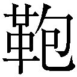
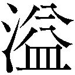

| 人類は衰退しました 09 | |
| 田中ロミオ | |
| 小学館 (2014) | |
小学館ｅＢｏｏｋｓ
人類は衰退しました９
田中ロミオ
イラスト 戸部 淑
年の頃なら五十歳くらいのおじさまは、アロハシャツにハーフパンツというラフな姿でありながら、なぜか死んだ目でサマーベッドに横たわっていました。
観光客などいるはずもない、白く輝く砂浜。
眼前には深い青色をたたえた海。
南国のあたたかな空気。
生きる喜びを凝集したような環境にあって、なぜかおじさまは呆然としていました。
口半開き。
ごく最近、とてもショッキングな出来事を体験したことは明らかです。
でも知ったことじゃございません。
散弾銃の銃口を、おじさまの額にごちんと突きつけます。
「おわっ、何？ えっ、銃？ ちょっと君!?」
「月旅行プロジェクト発起人というのはあなたですね」
「そ、そうだが......どなただね？」
「計画参加者の遺族呼ばわりされた者です」
「............え？」
「詳しい事情を話してもらいましょうか。さもないと......」
ニヒルに恫喝すると、氏は銃口を見つめたまま青ざめていきました。
「い、いったいどうやってこの島に？ ここは私有地のはずだが......」
わたしは無言で、背後をくいと示してやります。
そこに着陸しているものを目にし、おじさまは驚愕しました。
「......段ボールで作ったヘリコプターのようなものが見える。夢か」
「ちょっと魔法入ってますが、現実ですよ」
「そういうのを夢と普通言うが......」
その段ボールヘリは現在、整備士妖精さんらによって修復中（墜落したため）。
「おすぷれー」「ぜんちょーは？」「17めーとるくらいかなー？」「ぜんこーは？」「６めーとるはんくらいでは？」「てぃるとろーたーほうしきですがなにか？」「ごむしゃふとえんじん、さいよう」「さいだいしゅつりょく５０００まきまき」「こーぞくきょり、あなたしだい」「きょうじんなＫ６だんぼーるそうこう！」「おもなそうびにはなにが？」「おかしれーだー」「あめだまさんぷそうち」「などなどー」
「ひー、死ぬかと思った......」
残骸の中から、Ｙがのたくたと い出てきたところでした。
い出てきたところでした。
着陸寸前で、彼女が操縦ミスをしたのです。わたしは上空十五メートルでいちはやく脱出（受け身で無傷）。
「無駄なおしゃべりは好みません。さあ、計画の現状について説明なさい」
散弾銃を突きつけつつ、おじさまに迫りました。
「くう......むざむざと！」
おじさまは背後からちっちゃな鉄砲を引き抜きます。逆らう気です。
わたしは冷静に散弾銃を撃ちました。鉄砲が手を離れ、後方にすっ飛んでいきます。
「ば、馬鹿な......散弾銃で、ピストルだけを狙撃したのか？」
おじさまの体には傷一つありません。ま、わたしの腕をもってすれば当然ですが。
「散弾のばらだま一粒だけをうまいこと鉄砲に当てたのです」
「そんなあほみたいなことは普通起こらない！」
「わたしにはできるのです。大人しく喋れば危害は加えません。さあ」
「......わかった。話そう」
がっくりと項垂れるおじさま。
「あいつがあんなにうまく鉄砲を使えるなんて......まるで別人みたいだ......」
Ｙのおそれおののく声が背後から聞こえてきました。
おじさまの説明によると、まずこの赤道近くにある名も無き島は、氏がご先祖様から受け継いできたプライベートアイランド。
シャトル発射台であるカタパルトが洋上にあるため、この島は基地として利用されたのだそうです。
貴族の末裔である氏はさらに一生食うに困らないだけの永久缶詰を相続しており、有り余る知的好奇心を存分に科学道楽に注いできたと言いました。
結果、発見されたのが巨大な浮島型カタパルトと宇宙往還機。
バリューセットにもほどがありましょう。
「しかもどっちもすぐ修理できて、使えそうだった。燃料もゲットしたし、知人の持っている全自動工場で部品も調達できたし......」
「そうしてあなたは、全国の名だたる科学者や技術者に手紙を送った」
「そうだ。最終的には数十人の協力者が集まってくれた......」
計画はとんとん拍子に進んだと言います。
そしてついにシャトルは発射に至ったということでした。
「見事に成功した。それは間違いない」
「なぜそう言えるのです。途中で爆発したのかもしれませんよ」
「通信だ。月周回軌道に到達したことを確認した。だが」
「だが？」
「その直後、通信は途絶したのだ......」
おじさまは頭を抱えました。
「もう結構。計画の資料を出しなさい」
「そ、そんなものどうするんだ？ あんたみたいな素人が......」
「それをあなたが知る必要はありません」
「わ、わかった。出そう。あっちに指令センターがある。来てくれ......にしても」
「何です？」
「......立派な、眉だ......」
「........................」
「とりあえずヘリは直ったし、ゴムも五千回めいっぱい巻いておいたよ」
スティックのりを手に、腐れ縁の同僚Ｙが言います。
「エンジンはふたつあります。どっちもぬかりはないですか」
「ふたつあわせて五千回......じゃダメかい？」
「......有罪（ギルティ）！」
睨みつけると、Ｙは卑屈に笑います。
「両方だと一万回だ。日が暮れちゃうね」
「丁度良いでしょう。こちらの調査も夜までかかります」
Ｙは神妙な顔つきで口を開きます。
「仮に所長たちの目的地がわかったところで、どうやって月まで移動すんのさ」
「............」
「やっぱ無理があるよ。妖精くんたちも、宇宙はきついって言ってるんだろー？」
「だとしても、まだ生きている可能性がある以上、見捨てることはしません」
「プチモニのデータ回収はじきに終わります。今のうちに休んでおいてください」
ヒト・モニュメント計画のとんだ副産物、モノリス型万能携帯端末プチモニは今、指令センターとは名ばかりのコンテナハウスでデータサーフィンの真っ最中。
「はあ。こんなことなら弁当でも持ってくるんだった。お菓子以外の食料ないよ」
缶詰いっぱいの手提げ袋をＹに放り投げます。
「......わけてもらったビフテキの永久缶詰です。夕飯はそれで済ませましょう」
「おっと、こりゃ豪勢だね！」
一転してご機嫌に。
砂浜から日が傾きつつある空を見上げます。
そこにはわたしたちの故郷から見るものとは欠け方の異なる月が、うっすらと幻のように浮いていました。
祖父はまだ生きている。
その確信が、わたしを突き動かしていたのです。
缶詰は湯がよろしい。
くるくる巻きに収納されている熱々のビフテキ（合成肉。原材料サボテン）を皿に広げていると、Ｙがわたしの顔をじっと見て言います。
「しかし......」
「何か？」
「......眉、太くなってない？」
「眉が、何か？」
人間の眉は急には太くはなりません。しかし強い意思を発揮しタフな殺し屋のような精神力を得た時、そのように見えることもあるのやもしれません。
さて、少し時間を巻き戻し、ここに至るまでの出来事を手短に説明いたしましょう。
発端だけなら三行でイナフです。
① 祖父が月世界旅行に旅立ちました。
② 押しつけられた里の問題はなんとか解決。
③ 訃報のようなものが届いてびっくり。
手紙の内容はこのようなもの。
『......この度実施された月旅行計画再建プロジェクトにおいて、シャトルとの連絡が途絶えた件について、我々は長く通信回復に努めてきたが、○月×日をもって計画を打ち切ることに決定した。この件について、ご遺族の皆様にはお詫びの言葉もなく、また......』
もちろん遺族（と決まったわけではない）としては納得できるわけもありません。
あの戦慄の報せがもたらされたあと、わたしは再度問い合わせの手紙をしたためました。
しかし手紙が向こうに着いて返事が来るまで、数週間......。
生存している老人も死んでしまいます。
「............」
手紙は破り捨て、かわりに棚の瓶からあるものを一粒つまみあげ、唇に添えます。息を吹き込むと、ピーと鋭く音が響き渡りました。
笛あめ（パイン味）。
カットパインを模して穴があいており、鳴らすことができます。
わたしが発明し、特許を出願しました。もし過去に誰も同様の特許を取得していなければ、富はともかく栄光はわたしのものです。
「ぱいーん」「ぱいなぷー」「きちゃった」
 で作った笛の音を聞き付け、妖精さんたちが集まってきます。
で作った笛の音を聞き付け、妖精さんたちが集まってきます。
彼らにわたしは訴えました。
「おじいさんがピンチなので、宇宙に行きたいんですが」
はい、そう。安易な解決手段に訴えることにしました。
人力オンリーとか今どき流行らない。
妖精さんたちは輪っかになって話し合いをはじめ、やがてひとりが代表者として歩み出ます。
「おじかんいただければ......」
なんとも珍しい回答。
「時間って......難しいお願いでした？」
「うちゅーには、にんげんさんおりませんゆえ......」
そういうものなのかしらん？
妖精さんに頼れない。その事実は思ったよりずっと重く、心を押しつぶしました。
「......ど、どうしましょ」
となるともう、自分で対処するしかないのですが事が事です。宇宙です。
わたしは事務所の書斎に赴きます。
ぎっしり押し詰められた書物の数々。宇宙関連のものだけでも膨大な量がありました。
さっそくあたってみたところ......。
「......うーん」
わかったのは、宇宙途轍もない、ということのみ。
宇宙の大きさとか、ブラックホールのえぐさとか、空気のなさとか、そんなことはどうでも良いのです。
知りたいのは、手軽に月に行って戻る方法。
「所長のこと聞いたよ」
夕方、皆がお悔やみの言葉を述べに現れました。
Ｙ、Ｋさん、祖父の友人、近所のおばさまおじさま、村長さん、旅装の〈巻き毛〉......えっ、〈巻き毛〉？
 は半日もしないうちに各方面に伝わってしまったようです。
は半日もしないうちに各方面に伝わってしまったようです。
「いや、その件は......」
「クスノキ大砲俱楽部として、今回のことお悔やみ申し上げたい」
祖父の遊び仲間。
「いや、お悔やむ前にわたしの話をですね......」
「お姉さん！ お姉さんお姉さんお姉さん！」
〈巻き毛〉。
「なぜいる！」
旅行を持っていました。来たばかりか。
「しくしくしく、すんすんすん」
「Ｋさん、泣くのが早すぎます......」
困りました、死亡確定の流れになっていました。
「どうする。式の日程とか。なんでも手伝う」とＹ。
「いや、だから、まだ死んだわけじゃなく、捜索が打ち切られただけですから」
全員が同情たっぷりの潤んだ目でわたしを見ます。
「......信じたくないのはわかる。けど、現実を受け容れないとな」
「んもー！」
祖父はまだ生存している可能性が高い。すぐに助けに行けば間に合うかもしれない。そのために月にサクッと行く手段を探している。
そんな話をわたしは彼女らに語りました。
「......あー」
全員、微妙な顔をしたのです。
あ、これ、肉親の死で動転してるって思われてる。
「ちょっと待ってな」とＹ。
一同は離れた場所でひそひそと話し合いました。
さっき見ましたよねこんな光景......。
「わかった。気の済むまで調べてみるといい。葬式の話はあとにしとくよ」
戻って来たＹが、哀れみの目で告げました。腹が立ちます。
とにかく公認（？）ということで、調査開始です。
『マム、次は何をやらかすんです？』
万能携帯端末プチモニをＫさんから借りてきました。
資料調べと言えばこれですよ。
ヒト・モニュメント計画の忘れ形見的存在。十センチくらいの、多脚自立するモノリスといった風情のプチモニは、巨大な本体と今でも無線で繫がっているのです。
本体には、集めに集めた人類史のデータが放り込まれています。
が、データ量が膨大すぎてアクセシビリティは皆無。データを整理しようという意見も出るには出ましたが、先送り案件のまま計画終了に至りました。
「毎回やらかしてるみたいに言わないでください。検索をお願いします」
『いいですよ。調べたい項目はなんです？』
「......月への行き方」
みー、と電子音が鳴ります。
『出ました』
「えっ、出たんですか？」
あっさり出るとは思っていなかったのでびっくり。
プチモニのモノリスボディ表面が液晶化し、文字列を表示しました。
方法その一
長さ二百七十メートルの大砲を作り、その砲弾に乗り込み、月に撃ち出してもらう。
帰還時は月から落下し、パラシュートで着水する。
「......宇宙を舐めている」
『検索結果ですから。わたしの判断じゃないですから。そういうデータがあっただけですから。真偽のほどは知りません』
そうなんです。
適当に集めたデータであるため、虚実が入り乱れているのです。
ただ、いくらわたしが天文学の素人といっても、これが無謀な試みであることはわかりました。
次、次。
方法その二
普通にロケットで行く。
「できたら苦労しませんが」
『本当はこれが一位の検索結果でしたけど、同じように思ったので二位に再配置したんですよ。配慮の仕方がシャープでしょう？』
「意味のない配慮ありがとう......」
にしても、ロケット。
実現するなら手っ取り早いのでしょうが、妖精さんでも難しいというからには、いろいろと見えない制約があるはずです。
いつものように段ボールで作ってポーンというわけにはいかないのです。
方法その三
エンタープライズ......米国の宇宙船（二十二世紀？）
「......なんだろうこれ？」
米国？ 宇宙船？
情報が断片的で全容が摑めません。
そういう名前の宇宙船があったようですね......。
『なぜかはわかりませんが、関連付けされた位置情報がありますよ』
プチモニのおなかに表示された地図によると、それはすぐそばでした。
それは旧調停官事務所のすぐそばに設置されている、モノリス御殿だったり。
そこにはふたりの探査機が祀られているというか、住んでいます。
Ｖ君とＰ子さん。
かつて地球から打ち上げられたものの、宇宙と折り合いが悪くなって、出戻ってきたのです。信じるかどうかはあなた次第。
「同じモノリスだから、でしょうか？」
『ですかねぇ』
階段を一段飛ばしで飛び降り、御殿の前に。
プチモニの妖精さんストラップをむしり取り、似たような形とサイズをしたＶ型モノリス......というのはボイジャー君のことですが......に結びつけます。
妖精さんストラップは、実はモノホンの妖精さんです。
下敷きで頭をこすることでプチモニを充電してくれるのです。
目を閉じて人形さながらに停止していた妖精さんが、ぱちっと目覚めました。
「あつーい。でもさむーい」
そして下敷きではなく、セーターをパチパチ言わせながら高速で脱いだり着たりを繰り返します。
「充電方式変わったんですね」
「このほうが、せくしーでしょ？」
......どう、でしょう？
妖精さんの発電能力はたいしたもので、あっという間にＶ型モノリスはがちゃんがちゃんと人間形態に変形していきます。
「......よお」
精悍な若者のようなその顔を、久しぶりに見た気がしました。
「エンタープライズか。なんとなく覚えてるな」
むすっとした顔で、当時を振り返ります。
「けど正式にインプットされたデータでもねーし、あんま記憶してねーな」
「そうですか......せめて船かどうかくらいはわかりませんか？」
「船であることは間違いない。ただどういう船かはわかんねーよ。ただ」
「ただ？」
「......その名前を聞くとなんとなくイラッと来る」
「古い因縁でも？」
「皆目わからん。そっちで調べてくれ。ただそのエンタープライズとやらが実在したとしても、現存してるとは思えねーけどな」
「ですよね」
話が終わると、Ｖ君は里を指さしてこころもち上目遣いに言います。
「......なあ、俺、電力満タンなんだけど、ちょっと遊んできていい？」
調査をしている間にも、仕事は持ち込まれるものです。
今や調停官事務所はなんでも相談室のようなものでして、本来の業務から外れたような依頼もたびたび持ち込まれました。
「最近、雨があまり降らないもんだから農作物が......」
「わかりました」
本業とはいささか外れたお願いではあります。
でも里の住人からの頼みは無碍にはしにくいもの。
断ったあとで道ですれ違うと、気まずいし......。
「妖精さん、このあたりの土地にだけ雨を降らせたいんですが？」
「たやすいたやすいー」「けーおつです？」「たれながします？」
そしてクスノキの雨は主に農地に降ったりするのでした。
「おー、雨じゃあ！ 恵みの雨じゃあ！ 先生、ありがとうごぜぇます！」
「......また安易に解決してしまった」
妖精さんパワーに頼ると、スピリチュアル系のご相談もこれこの通り。楽なものです。
「もーおなやみなし？」
仕事が簡単すぎて、妖精さんたちには張り合いがないのでしょう。
目的がピンポイントに絞られた依頼は、ちょろいんですねぇ。
「......ということは」
「だんぼーる、たりないです？」「ちょーたつしますか？」「ぽちれば、かじょーほうそうでたいりょうにげっつ」「あまのだんぼーるったら、うすくてだめよ」「やっぱかでんのそとばこかなー？」
わたしが出した要求仕様に基づいて、妖精さんたちが段ボールを組み立てていきます。
組み立ての進 は五十パーセントといったところ。
は五十パーセントといったところ。
「おーい、なにやってんのさ！」
「お姉さーん！」
Ｙと〈巻き毛〉が丘を駆け上ってきます。
「月に行く方法を調査するんじゃなかったのかぁ？ なんだいこの大きいの」
「お姉さん、さっきはゆっくりご挨拶もできずに......」
「これはヘリコプターという空飛ぶ乗り物ですよ。妖精さんに再現してもらってるんです」
「そんなん作ってどうすんのさ」
「お姉さん！ わたし、あれから背丈が一ミリも伸びたんで......」
「世界中を飛び回る必要がありそうなので」
妖精さんにお願いした、空を飛ぶ乗り物。
長い距離が飛べて、たくさんの物資が運べて、どこでも着陸できて......というオーダー。
「......月には行けないんじゃないか、これだと？」
「そうですね。空気のないところは飛べませんから......でも、他のことには使えます」
「お姉さん！ わたし、今晩の宿を手配してないんです......それでその、もしよかったらお姉さんの家にお泊まりさせていただけたらば......」
「まさか所長のあとを追って南の島に行こうってハラ？」
「お姉さん！ わたし枕を持って来ました！ これをお姉さんの枕と交換......」
「............」
「あっ。そういうことか！ 南の島でロケットを入手するつもりだろ」
「お姉さん！ 枕の匂いがその人のいちばんいい匂いなんだってご存じでし......」
「......無駄に鋭いったらないですね」
「やめなって、そんなの無理がありすぎるよ」
「お姉さ」
「やってみなければわかりませんよ」
「......月って空気ないんだぞ。知ってた？」
「お姉さ」
「ええ。ついでにエーテルもないですね」
「いつもの冒険とはわけが違うんだけど？」
「お姉さ」
「だからいつもより最初から手段を選んでませんよ」
Ｙは呆れた目で大きなため息をつきました。
「......本気で行く気なんだな」
「こんなあほな理由で家族を失いたくないですから」
静かに見つめ合うわたしたちを、初夏の風がやわらかく撫でつけていくばかりでした。
「お姉さ」
迅速に行動する必要がありました。
本業のかたわら、必要な物品をかき集め、助手さんに仕事の引き継ぎを行い、当たれるだけの資料を当たりました。
ヘリ自体も半日ほどで完成。試運転を行いました。
操縦の難易度は自転車レベルなので誰にでも操れます。
危なげなく離陸しぐるりと里を一周するヘリを、Ｙが地上から困ったような顔で見上げていました。
「なあ、やめよーよー」
「絶対に無理があるって。賢明に判断すべきなんじゃないかなぁ」
「だいたい月のどこで遭難したのかもわかんないのに無謀だってー」
「所長だってそんなの望んでないだろー」
「なーやめよーやー、人間みんないつか死ぬよ」
Ｙは顔を見るたびにこちらの意思をくじこうとしてきます。......ちょうすごくしつこい。
もちろん問題点があることは承知しておるのです。
しかし今のわたしは女 。チーター。
。チーター。
チートな行為をためらうことなくいっぱいします。......チーターってで合ってましたっけね？
ま、とにかく。
「わたしには夢があります！」
郊外に集まった妖精さんの大群衆を前に、スピーチが響き渡ります。
「それはヒラの調停官としておもしろおかしくのんびりまったりおきらくごきらくに生きていくという夢です」
「わたしの作ったお菓子を囲んで、人間と妖精さんたちが同じテーブルで楽しくおしゃべりをするという夢です」
「そして持ち込まれる苛酷な依頼の数々に対し、それは職掌範囲外なのでと素っ気なくお断りできる立場に身を置くという夢です！」
妖精さんたちの喝采を博するわたし。
「すてきー」「ほれるー」「もっとおことばー」「すんばらしー」「ばんざーい」「にんげんさんばんざーい」
妖精さんたち、意気軒昂。なんだってできちゃいそうです。
なにしろ道中で壊れたロケットを見つけでもしたら、きっちり修理してもらわないといけませんからね。動員しておくに越したことはないわけで。
「............」
そんなわたしの演説を、Ｙと〈巻き毛〉と助手さんが鋭い目で遠巻きに観察していたのでした。
二日後には、準備は完全に整いました。
まだ夜中といって良い時間帯でしたが、わたしたちはいつでも出発できる状態でした。
「......では日の出とともに出発です。見事、わたしを月に連れてってくださいね！」
「いえっさー」×いっぱい
何百人かの妖精さん、いっせいに敬礼。なぜか全員、古い時代の軍服。
わたしの本気が伝わったせい？ てっぽうのかわりにラジオペンチを分解したものをそれぞれが担いでいました。作業の時には、二人一組で一対のペンチに戻して使うのです。器用なもので。
それにしても、今回ほど入念に準備をした冒険はありません。
妖精さんにもたくさんグッズを作ってもらいました。たぶん、これで月でもなんとかうまくやれる......はず？ でないと困るんですが、すごく。
さすがに不安はありましたが、でも、行かなきゃです。
鋭い光が山の峰から迫り出してきました。日の出です。
「そろそろですね。じゃあ皆さん、乗り込んで......」
と、その時でした。
「はいそこまでー！ 出撃中止ー！」
自宅に踏み込んできた一団の先頭に、Ｙがいました。
「な、なんですかこんな時間に！」
「えー、協議の結果、調停業務を放棄しての月旅行は認められないということになった」
「んまっ！ どういう理由でそんな心ないことを言うんです！」
「余計なお世話で」
......一片の罪悪感もなしに言い切ったのです、このおなごは。
「ちゅーことでハイ、無謀な月行き禁止、南の島行きキャンセル！ ついでに......」
彼女の背後から、助手さんが鉄の箱がのった台車を押してきました。
鉄の箱は迷彩塗装が施されており、台車の下段に設置されたバッテリーとケーブルで繫がれています。
「ちょっと横にどいて」
「え？ このくらい？」
わたしがスライド移動するや否や、装置のスイッチをオン。鉄の箱はぶいーんと低い音を立てはじめます。
箱の前面には扉があったのでしょうが、取り外され、開口部が妖精さん側に向けられていました。時間にして十数秒。チーンという軽快な音がして、装置は停止。
これは確か、電子レンジという調理器具で......。
ハッとして妖精さんたちに視線を戻すと。
「..................」×いっぱい
全員、無表情になっていました。
「......かえる？」「......あさだし、ねる？」「......こすぷれ、ぬぐ？」「......またてつやしちゃった」「......まともにいきたい」「......かいさんです？」「......あしたこそはろわ」「......わーくにはろー、したいかんじ」「......いいぶらっくがいしゃないかなー」
「よ、妖精さんたちが憂鬱な感じに。この箱、まさか？」
「マイクロ波照射装置だ。たぶん大昔の殺人兵器だね。こいつを使えば、隣の部屋のイヤな住人を殺すことができる。おーコワ」
「電子レンジは調理器具です」
「元はそうかもしれないが、今の基準だと有害な兵器さ。そして効果は絶大！」
びっと指さす先、もう妖精さんたちはほとんどいなくなっておりました。
「ああ、たくさん集めたのにみんな帰ってしまった......」
高強度の電磁波を浴び、しょんぼりしてしまったのでしょう。
また集め直して訓練するのに丸一日はかかるわけで、それだけのロスをもたらした彼女の狼藉にわたしは立腹を抑えきれません。
「なんちゅうことをしてくれるんですかあなたは！」
「だから余計なお世話。あと今後しばらく、あんたの行動は私たちの完全監視下に置かれるからな」
「なんで」
「ひとりで暴走する可能性があるから」
......行動を封じてきたということですか。
普段はサボり魔のくせして対処が迅速すぎる。学生時代、嫌がらせの達人として下級生から恐れられただけのことはあります。
戸惑っていると、彼女の背後から、意外な人物が姿を見せます。劇画調のとても濃いお顔立ち。
「話は聞いたよ。本当に惜しい人物を亡くした。涙を禁じ得ない」
国連の重鎮で三日で役職が変わると言われる上司、ＶＩＰ局長のお出ましでした。ああもう、どんどんややこしくなっていく......。
「死んでませんが......」
「錯乱するのも当然だ！ 悲しみは時として人をおかしくしてしまう。だがこういう時こそ、仕事をするというのもひとつの手だ。私も幼い頃、はとこの親友の兄が死んだ時、葬儀を抜け出して川釣りに行ったものだ......」
ふざけたことを言ってるようでいて、それなりに本気で配慮してくれている感じはありました。いや、単に根っからふざけているだけなのかも......？
「仕事、というのは......？」
「報告書にあった夢世界の視察に行きたいが、その案内を頼みたい」
ああ、あの件......。
里の住人が軒並みドハマリしていた拡張夢。
まるで砂箱のように自由に遊べる夢に人々が惑わされたため、復興事業は遅れに遅れたのでした。
精神的な中毒性があるためこのまま封印したい技術ではありますが、局長の意見は違うようでした。
「......わかりました。ご案内いたしましょう」
「へー、素直だね」
「まあね」
今ここでとんずらするより、別の機会を狙った方がいいからです。
観念したにも拘わらず、Ｙに油断はありません。その手がさっと人のポケットに滑り込み、隠し持っていた丸まった妖精さんを回収していきます。
「ぐ......」
「付き合いは長いんだ。読めてるって」
ぶ、武装解除されてしまった。どうしましょう？
「君のおじいさんも若い頃はよく命令無視をしていたそうだが、血筋というものだな」
「祖父の若い頃をご存じなんですか？」
「......何度かすれ違った程度だがね。とはいえ私も今ほど出世の欲求から解放されていなかったから、親しく付き合っていたわけではないが」
「そういう認識でおいでだったんですね」
権力系男子ってそういうものなのかも。
「さ、局長もそうおっしゃっているわけだし、大人しく日々の雑務に埋没してもらおうか」
隣で助手さんもうんうんと頷いていました。
......逃げられそうにありません。
夢世界は現在封鎖されていますから、案内自体はそう時間もかからないでしょうが......とここで思い出します。
夢側でなら、おじいさんと連絡がつくかもしれない。
前回、そういうことがあったのです。
『実は......困ったことになった......しばらく、帰れそうにないのだ......』
『シャトルが......故障......』
『そう、月だ......月面都市の......廃墟に......』
最悪の事態は免れた、とも言っていました。このやりとり自体、単なる夢という可能性もあります。ただおじいさん、妖精さんをお守りがわりにひとり連れていったのですからね。何があっても不思議はありません。
思い至ると、少し気持ちが落ち着きました。
「わかりました。観念します。お仕事しましょ」
「賢明な判断だ孫ちゃん」
「じゃあ悪いけど、これを身につけてもらおうかね」
助手さんが取り出したのは、温水便座・ドライヤー・ノート型コンピュータの家電製品三点セット。
「何をさせたいの？」
便座を首からネックレスのようにかけ、両手に残りを持たされます。
「妖精よけの電磁波グッズ。また呼び出されても厄介だからね」
「......対策が執拗すぎます。あとこの便座、ちゃんと洗ってあるんですよねぇ？」
確かに妖精さん、怪しい電磁波は苦手ですけどね。
何が彼女をここまでハラスメントに駆らせるのか。
「局長、これにて完璧でーす」
「うむ。さっそく調べに行こうではないか！ 夢を自在に操る秘術とやらを！」
欲望にギラつく顔で、局長が言いました。
そして再び夢の世界です。
ログインするために必要なラクッコピコリン（妖精さんの作った睡眠薬）は、押収分から賄いました。
以前は大勢の住人が入り浸っていたのですが、閉鎖された今となっては閑散としたものです。人もいなけりゃ、ピンクの像も歩いていません。
暗いのになぜか遠くまで見渡せる、不思議な夜の里の光景が広がっています。
「要するにやってることは夢の共有なわけです」
「......驚きだ。む？ あんなところにゴージャスな超高層ビルが生えてきたが、あれは？」
「あれは局長の願望です」
ビルは天高く成長し、雲に消えていきました。
「実に良い。雄大なビジョンだ。かくありたいものだな......」
ご満悦の様子。
わたしたちは全員ちょっと引いてましたけど。
「利用し続けると依存の兆候が出るということだったが？」
「あーそれはですねー、みんな落ち込んでるなどの環境要因とかもありましてーごく短時間の利用なら」
この世界についてはＹが詳しく、局長の疑問にもさらさらと答えていきます。
わたしはそれとなく最後尾に下がり、しずしず後をついていきました。
確か、通信機の形をしていたと記憶しています。
果たしてそれは前回と同じ位置に埋没していました。廃墟の瓦礫の中に。
失礼。心でそう呟き、廃墟に身を滑り込ませます。
通信機を調べてみても、前のように動作する気配はありません。電源も入らないし、レシーバーから声も聞こえません。
......向こうから通信が来ないと駄目なんでしょうか？
「むう」
局長たちに合流すべくとぼとぼ歩いている途中、妖精さんをめっけます。
はじめてここに来た時も、同じように忙しそうな彼らと出会いましたね。
「いそがし、いそがし」「おしごと、おしごと」
ふたりで材木かついで、えっちらおっちら。
「妖精さーん」
ぴたりと足を止めました。
「さい......そく？」「いましばらくおまちいただければー......」
そわそわしていました。怯えていました。
「納期？」
「ごいらい、ちょーだいしておりますが......？」
ああ、月に行く方法を依頼していたんでしたっけ。この話、生きていたんですね。
「見つかりました？」
「......あいにく」「......おそれいりますが」
矢のように催促されると思って怯えているわけですか。
「いまからさがしにまいりまする」
今から探しに！
「......材木いります？ どうしてそんなもの担いでるんですか？」
「とくには」「きぶん？」
単なる演出でした。
「どのあたりを探すのか教えてくださいよ。わたしなりに調査はしたんですが、どうも目星も付かなくてですね」
「ぐぐるかんじ？」「ぐぐるかんじなー」
「ググる？」
「けんさくえんじん、つくりましたゆえ」
おう、検索エンジンですか。
つまりモニュメント以外のソースを検索しようということですかね。
「それ、わたしも見に行っていいですか？」
妖精さんたち、パッと明るい顔をします。
「いくー？」「のうき、おくらしてくれる？」
「遅らせます遅らせます。連れてってくれたら」
納期なんてないですけどね。いや、あるか......。
「そのかわり、今すぐ行きたいです」
妖精さんたちは顔を見合わせ、ひそひそと相談をしました。
「じゃー、これどーぞ」
一枚のカードを差し出してきます。
こんな文字が書いてありました。
『いま ←→ さいしょ むせいげん』
「......何かのパスカード？」
「ふりーぱすー」「つかってー」
今？ 最初？ はて？
「にんげんさん、おさきにどーぞ」
「......ええと、これでどうしろと？」
妖精さんが里の外を指さします。
夢世界では、かろうじて街と呼べるものはここクスノキしかありません。
共有夢の誕生地であるせいですが、外は一面の平原となっているのです。どうやらその先に進むことは、わたしたちには危険なことであるようなのですが......。
「まよわずいけよ」「いけばわかるさー」
妖精さんと別れ、里から一歩踏み出してみます。
相も変わらず平行植物......菌類を巨大化させたような奇妙な草が、一面に生い茂っていました。
風もないのに里に向かって先端が傾いているのは、現実世界を目指しているせいではないかと思われます。植物というのは普通、光に向かって成長する性質がありますから。
奇妙な風景を歩いていくと、行く手を阻むように『通行止め』の立て看板が突き立てられております。妖精さんの仕事でしょう。
どうやらひとつきりでなく、里を取りまく形でいくつも立てられている様子。
要するに、意識だけの状態で里を出るなということ。
理由はわかりませんが、感覚的にも生身でこの先に進むことは躊躇われます。なんだか、今の自分がほどけてなくなってしまいそうな気がするのです。
だというのに不思議と、虚無が立ちこめたかのような暗がりの果てを眺めていると、吸い込まれそうな気持ちにもなります。
「......ん？ あれ、駅？」
シュールレアリスムの絵画めいた思索的景観の中に、唐突に建物を発見しました。
前回にはなかった。あるいはパスを手にしたから、はじめて視認できるのか。確信をもって建物に入るも、駅内部は無人でした。
わたしが近寄ると、改札ゲートもひとりでに開きます。
伽藍のような巨大ホールを歩いていくと、各ホームに出るための分岐にさしかかります。階段があちこちにあって、それぞれがどこかのプラットホームに通じているのです。
分岐は無限にありました。
パッと見、普通の部屋なのですが、階段の数をひとつひとつ数えていくといつまでも数えられるのです。案内板に目をやると２番ホームだの１６９４７５８番ホームだの９と３／４番ホームだの混乱を助長させる情報ばかり。
フリーパスだから、どの路線にも乗れるということなんでしょうが......。
「しょせんは夢」
適当に階段のひとつを選んでみました。
薄暗い通路を進んでいくと、やがて駅のホームに出ます。
線路の上には、蒸気機関車が停車していました。
「ほほーう」
「あっ、にんげんさん。いらさーい」「にんげんさんだー」「こうごうしいそんざいきた！」「かみさまがおきゃくさまですかー」
駅員の格好をした妖精さんたちが出迎えてくれました。
「にんげんさんがくるなんて、めずらーしですー」
「でしょうねえ。今ここ、閉鎖されてますし」
「のるますー？」
「これって、何なんです？」
「けんさくえんじん？」「じょうきしき」
「シャレでしたか」
この鉄道にのってどこかに向かうということが、すなわち検索という行為を抽象的に表現しているとかなんとか適当にお好きな解釈でどうぞ。
「人類が月に行った方法とか調べられますか？」
「おっけーですが」
「ならば乗ります」
「すてきなたびをー」「すてきをー」「いってらー」
客席は当然、がらあき。わたし以外に乗客はいません。
夢のことで、細部までは観察できませんが、車内は古めかしい作り。木製の床に、ビロード張りの座席。レトロな内装は好みでした。
窓際席に腰をおろすと、すぐに汽笛が鳴り響きます。
「はくせんのそとがわにだいぶしてくださーい」「いますぐけんさく！」「なめくじうおけいゆ、げつめんちゃくりくいきー」「ごよやくのかむぱねるらさん、やっぱのるのやめるって」「ふーん」「じゃーにんげんさんのかしきりですなー」「しゅっぱつしんこー」
なめくじうお経由？
妖精さんたちに見送られ、鉄道は蒸気音を立てて走り出すのでした。
「......大丈夫かな」
鉄道はいつの間にか、草原ではない場所を走っていました。
それは......形容不能の風景です。黒でも白でも、特定の景色でもなく、明るくも暗くもない。まるで車窓から別世界をのぞいているかのようなものでした。
「きっぷをはいけーん」
「ん？」
車掌さんの格好をした妖精さんが通路を歩いてきました。
「このパスで大丈夫ですか？」
「おー。これさえあれば、そうまとうとかもみれます？」
「......死ぬってこと？」
妖精さんははてなと首を傾げました。
「おつぎは、しはつえきの、なめくじうおみたいなものー」
車掌さんはいつの間にか、貫通扉の前に立ってこちらを見つめていました。
「おりますか？ おりませんか？」
「え......？」
「なめくじうおみたいなもの。おりますか？ おりませんか？」
「おりたら、どうなります？」
「たいくつきわまる？」
「じゃあやめます」
「......あー、ふたりめのにんげんさんだったのになー」
「わたし以前に、誰かがここに来たと？」
「あろはーおえーなかんじの」
ピンと来ました。
わたしの前に、おじいさんはここに来ているのだと。
どういう経緯でそうなったのかはサッパリですけど、妖精さんからもとても聞き出せないでしょうけど、いかにもありそうな話。
「やっぱりおります。ちょっとだけ......安全ですよね？」
「そーしていただけると、ていさいがとりつくろえます」
途端に、窓の外が賑々しく変化していきました。動画ではなく、無数の画像を超高速で早送りするような、めまぐるしいビジョンです。
その早送りが、今度は次第にゆるやかなものになっていきます。
最後にぴたりと固定されたのは、見たこともない魚のような生物。
これが......ナメクジウオ？
正確にはナメクジウオのような生物、とのことです。『のような』というのは正式な学名が存在しないということでしょう。......つまり？
魚かと思いきや、もっと原始的な生物のようでした。鉄道はそのビジョンに向かって反転し、ゆっくりと吸われるように突入していくのです。
わたしの意識は放り出され、次の瞬間にはナメクジウオのそれと重なっていました。
「............」
喋ることができません。考えるのみです。
わたしは今、この生物の思考を自らのことのように追体験しているようです。
とはいえ原始的な生物。たいしたことは考えていません。
（......当面の私は、摂食行動を満足いくまで続けた後、砂に潜り、生きるということについて思索するだろう。存分に思索をした後、産卵予定地のロケーションを確認しなければならないが、その後には再び摂食行動に戻るのが良いだろう。途中、もし外敵に襲われても逃げられるよう、移動は慎重に、海底すれすれを維持したい。時間があれば水中で全身を無意味にくねらせるなどの娯楽的行動もとりつつ、可能な限り思索にふけりたいものだ。私は次の産卵まで生存できるだろうか、考えねば、考えねばならぬ......）
......けっこう理性的でしたね。
妖精さんたち、彼らを観察対象にしていたんでしょうか？
「......あれ？」
気がつくと、わたしは再び鉄道の座席に座っていました。場面転換が唐突です。
「なめくじうお、しゅっぱつしてもよろしい？」
「は、はい」
車掌さんは前座席の背もたれからぴょんと通路にとびおりて、
「これよりーじゅんきゅうになりますー」
「準急......」
「とまったり、とまらなかったりしますな？」
「はあ」
「たまにねらいのえきをとおりすぎて、あーってなったりしますな」
「狙いは月ですよ、妖精さん」
「ほんろうされるの、いや？」
「嫌というか困ります。おじいさんも同じコースを？」
「そーですな」
「だったら、同じコースでお願いします」
「そーーなっちゃいます？」
......たぶん、今わたしがいるのは妖精さんの抜け道なんじゃないかと思われます。
神出鬼没の妖精さん。いつもこんな方法で時間と空間を飛び越えているのかも。そして今、わたしもその道を進んでいるのでしょう。
「つぎのていしゃえきはー」
車掌さんは、わたしの知らない名前を口にしました。生物の名前を。
車窓のスライドが再び切り替わりはじめます。次第に高速化し、目にもとまらないほど差し替えられていきました。全て生物のようでした。
今では存在しない、怪物のような姿の生物たちを通り過ぎていきます。それは時間の経過を示しているのです。進化のスライドフィルム。
気がつけば画像は水中から地上生物に移行しており、オウムガイやら三葉虫やらの時代は過ぎ去ったようです。憶年の旅。
途中、おじいさんは頻繁に下車していたようで、準急と言いながらも何十回も停車するわずらわしさに不気味な生き物に興味のないわたしのイライラは果てしなく募ります。
「おりますん？」
「おりません」
「がくし......」
車掌さんはよほど下車してほしいようで、何度も勧めてきましたけどね。
そうこうしながらも、スライド内容は壮大な古代地球の叙事詩を紡いでいきます。見る人が見ればとてもダイナミック、でも見られない人が見ると退屈きわまりない旅景色です。
何度かの生物大絶滅。
最初の哺乳類。
こういうショウならまず登場しそうな恐竜たちがほとんど姿を見せないまま、舞台に現れる初期の霊長目。
「......人類の進化、かなあ」
ショウにテーマがあるとすれば、それでしょう。
確かにこの路線はいずれはホモ・サピエンス誕生に繫がり、月にも達するでしょうが......寄り道にもほどがあると思いました。
「......たまにはおります？」
「おりません♪」
「だうーん......」
ワンダフルなライフの営みは大変素晴らしいテーマなのでしょうが、窓から眺めているだけでおなかいっぱい。
それでも全身から毛がほとんどなくなってからの人々の営みには、興味をそそられました。
学舎では資料不足とされてすっ飛ばされた、空白の時期。
眼前に当時の情景が流れていきました。
発達する農耕。定期的に発生する戦争。人々の大移動。青銅器、鉄器の出現。様々な文明、文化。
ついつい下車して、当時の歴史的出来事を観察したくなってきます。
歴史的大事件ばかりではなく、名も無き人々の何気ない情景も何億枚と記録されています。
わたしはいつしかすっかり夢中になっていました。
きっと口元をゆるめて、人様にはお見せできない顔をしていたに違いなく。
「へえ、紀元前の女の子もそうだったんですねー」
「おう、じーざす」
「すごいこの人、一世紀なのに地動説思いついてる......あ、滑って転んで死んじゃった......」
時は進んでいきます。
世界の大半をいまだ未知の領域が占めていた時代。深い森が人知を超えた超常の異界とされていた時代。魔法があると信じられていた時代。
とある一枚のビジョンに、目が引き寄せられます。
林の中、粗末な衣服を身につけた女の子が立っていました。
栄養状態が良くないのかひどく せており、青白い顔をしています。手にはそのあたりで摘んだ草花を握りしめていました。
せており、青白い顔をしています。手にはそのあたりで摘んだ草花を握りしめていました。
ここまでに体験してきたビジョンに比べ、質感が格段にアップしているのが新鮮でした。
今までの映像はどこかぼやけていて、ピントがずれているようだったのです。
まるで、この時代から急にカメラの性能が向上したかのような......。
ともかく女の子は、ぎょっとしたような顔をわたしに向けていました。
正確には、わたしが同期している〝何者か〟に。
......あっちの女の子に同期できないのかしら？ そうしたら彼女が何を見て驚いているのかわかるのに。
即座にわたしはリンクを飛び、少女の体験に沈み込むことになりました。視点の切り替えは自由のようです。
視線の先にいたものも確認できました。
妖精。
やっと出てきた、人類と妖精の接触記録。
身長は十センチもないでしょう。わたしの知る妖精さんとは、だいぶ違っています。
当時の妖精さんは、ひどくせています。
煙がたまたま人を形作ったような弱々しい存在で、生気がまったくありません。まるで自分が何者かもわかっていないような......。それに少しだけ、おそろしげです。
眼窩に瞳がなく、まっ黒なためです。
民話に出てくる妖精は人に害をなすこともあると聞きます。
当時の人類が未熟であるように、彼らも同様だったのかもしれませんね。
少女はだっと逃げ出します。恐怖に駆られてしまったのでしょう。
妖精は追いかけようとしますが、かなわず、転んでしまいます。そして二度と動かず、さらさらと塵のように崩れ、散っていってしまったのです。
「あらら、消えちゃった......」
「ごめいふくです？」
死んでしまったというより、幻が消えたという方が適している気もしますが。
「......妖精さんも最初は、こんなに弱々しい存在だったんですね」
「どーでしょ？」
「今ではこんなにずぶとくたくましくなって」
ふくふくとした妖精さんを見るにつけ、しみじみ思うのでした。
「つぎのていしゃえきはー、へいたいさんですぞ」
車窓はどこかの戦場を映し出していました。
森のすぐかたわらで、斧やら槍を持った人々が、けんかでは済まないレベルで争っていました。
いったいどこの誰が、こんな時代の記録を残し得たのか。
妖精さんの仕業なる魔法の言葉なくしては夢の続きとしか言いようのないこの追体験が、しかし過去に実際に起こった出来事だと、わたしは直感しています。
兵隊たちは倒れていきます。
当初は集団戦としてはじまった戦も、時とともに乱れ、個人どうしの殺し合いへと拡散していきました。
ある兵隊の戦いが森の中にまでもつれこみ、相打ちという形で幕を閉じます。
しかし片方にはまだ息があり、彼は仲間に助けを求めました。でも薄暗い森の中、周囲には味方の姿もありません。
わたしの意識は同情のあまり、死に行く兵隊にふっと引き寄せられました。まだ少年といって良い年齢だったからです。
同期した彼の視界に、自分に向けられた小さな目を見出だしました。
雑草の間から、じっとこちらを観察するもの。妖精の姿を。
以前より輪郭ははっきりするようになったとはいえ、青白く、まだまだ不気味な雰囲気をまとった妖精の姿に、この少年は何を思ったのか。
それが少年兵が目にした最期の光景でした。
「ごめいふくです」
「......この時代の妖精さんと人類は、まだお友だちじゃなかったんですね」
「みてるだけー？」
「......仕方ないですよ。人々の心に、まだ余裕がなかったんでしょうから」
そしてまた意識は運び去られ、車窓にはどこか懐かしい田園地帯が映し出されました。
「下車してみたい風景ですね」
「はいなー」
瞬時に心が吸引され、その場面の一登場人物へと重なってしまいました。
「......時間があれば下車してみたいと言うべきでしたね」
時既に遅く、周囲をおおぜいの巨人に囲まれていました。
びっくりしたわたしは飛び退いたつもりでしたが、体は動かず、意識だけがリンクしていた対象から離脱し、まわりを囲んでいる側の誰かに衝突気味に憑依したようです。
その誰かの視点に、わたしは宿ります。
事情がわかりました。
農地で働いていた人々は、迷い込んできた妖精を発見したのです。
身長は二十センチほど。だいぶ大きくなっています。サイズだけで考えても人間ではないことは明らかですが、加えて彼らの肌は薄い緑色をしておりました。
農民たちは妖精をどう扱うべきか、話し合っていたのです。
いやな予感がしました。農民たちは感情的になっていたからです。
不吉な予感は的中。迷信深い彼らは、妖精を打ち殺してしまおうと結論してしまいました。ああ......哀しき未開社会。
「......そんな悲劇はごめん蒙るので鉄道に戻りましょ」
その時、体がひとりでに動き出しました。
わたしの意思ではありません。わたしが宿ったこの青年さんが、輪の中に飛び込んで妖精をかっさらったのでした。
大柄な日頃でくのぼうと呼ばれて馬鹿にされている彼でしたが、この時ばかりは誰も追いつけないほどの俊敏さを発揮し、森の中に猛然と駆けていきました。
驚異的な脚力で走り続けて、薄暗い森の奥まで入り込んだ青年さんは、追っ手がないことを確認してその場にしゃがみ込みます。
胸の中で、妖精は怯えて震えていました。
青年さんは妖精を地面に置きます。呆然としている妖精に、去れと告げます。
妖精は逃げません。ぼんやりしてます。
苛立たしげに青年さんが怒鳴りつけます。妖精は身を震わせて、よたよたと森の奥に逃げていきました。
それを見守る青年さんの気持ちに、少しの怒りも苛立ちもないことは、共有者であるわたしにはよく理解できました。
「んー、ビターな結末......まあ、バッドエンドでなかったので良しとしましょうか」
「あんこくじだいにしてはがんばったほうです？」
暗黒時代、まさに。
この時ではまだ、妖精は人を幸せにできる存在ではなかったんでしょう。
何度目かの客車で、わたしは揺られていました。
ココロの鉄道は、それからも妖精と人類の接触したポイントを準急程度の網羅率でジャンプしていきます。
おおむね前述の三ケースを再演するような内容ばかりでしたが、時にはとても悲しい結末になることもありました。
妖精と人類が本当の意味ではじめて結ばれたのは、いつなのだろうか？
そんな疑問が、わたしを次の時代に運び去りました。
見たこともない風変わりな国。
とあるアジア圏の小国に、鉄道は停車しました。
時代は不明。
「あっ」と車掌さん。
「どうしました？」
「すでにげつめんちゃくりくずみなじだいかも？」
「へ？」
「おみのがしになりましたなー」
「この時代はもうすでに月に人が行ってると？」
「なんにんか、いっとるようです？」
そっちが本命なんですよね......。
「まあいいでしょ。わたしが知りたいのは、最初の月旅行ではなくもっとあとの時代になって生まれたより簡便な手段ですから」
「あいあいさー」
妖精さんは案内旗を振って、わたしを先導します。
どうやら案内をしてくれるようです。
非常に目を引く国でした。
国土は小さくても先進国なのでしょう。きらびやかな街並みには豊かな文化が濃密に押し込められており、漢字やイングリッシュで書かれた看板がどこを見渡しても確認できました。
「......はあ」
ため息をついたのはわたしではなく、わたしが宿ったとある少女のもの。
彼女は女子学生のようでした。
制服はわたしが着ていたものと似たブレザータイプ。スカートがやたら短くてはらはらします。
「帰りたくないなあ......」
少女は学校の帰り道、繁華街の広場で時間を潰しているのでした。
彼女にまっすぐ帰宅させることをためらわせる要因は何でしょう？
それは家庭内の不和。
夜遅く、自宅に戻った少女を待っていたのは両親の言い争い。
帰宅の遅れを咎められることもなく、自分たちの口論に没頭するふたりを一し、少女は二階の自室に引きこもりました。
そしてヘッドホンを装着し、大音量で音楽を流すのです。実につまらなさそうな顔で。
ベッドに寝そべって、プチモニそっくりの形をした携帯端末をいじりはじめます。
夜中になるまでずっとそんなことをしているのです。
翌朝、一階におりていくと母親からこんな言葉を投げかけられます。
「わたし、あの人と離婚するから」
「......ふーん」
同期しているわたしにはわかります。
無関心を装ってはいても、内心ではぎゃーでした。うひゃーでした。
思春期を迎えた女の子の強がりなのです。無理をしてクールぶっているだけなのです。これぞ東洋の真髄、ニンジャソウルです。サムライ、だったかしら？ まあそんなようなものです。ニンジャは食べなくても高楊枝、とかなんとか。
ああ、おそるべきは思春期！
この青春の魔物は、時として少年少女を思いも寄らぬ奇行に走らせるのです。
「ねえ、今度友達と旅行行くんだけど、お小遣いちょうだいよ」
「え......？」
まだ若々しい母親は一瞬、怪訝な表情を浮かべたものの、その面持ちはすぐに打算を巡らせるいやあな無表情さに取って代わりました。
母親は娘に、紙きれを五枚渡しました。わたしたちの時代では使われなくなって久しい、紙幣でした。
娘さんは紙幣を見て少し考え、
「できたら、旅費も出して欲しいんだけど」
すると母親はそうねと呟き、妙にさっぱりした明るいとさえ言える態度でタンスから封筒を探り出しました。分厚い封筒には、先ほどの紙幣が何十枚か入っています。母親は娘の前でためらうことなく札束を抜き、器用に二十枚を数えて追加で渡しました。
合計二十五枚分。それがどの程度の価値なのかはわかりませんが、そうとうな金額という雰囲気です。
「楽しんでらっしゃい。人生、楽しめる時間の方が少ないからね」
助言はどこか場違いな、気持ち悪い響きをともないました。
娘さんは札束を受け取ったまま、うつむいて黙りこみます。......本心は決して穏やかではないのですがね。
「......こんな大金、子供に渡さないよ普通」
「え？ 何？」
「............」
「お父さんにも同じことお願いしてみたら？ もっとくれるかもよ？」
嵐の心を抱えたまま（おかげでわたしと妖精さんは雨合羽を着る羽目に）、娘さんはその通りに振る舞います。
お母さんの言った通り、お父さんはもっとたくさんの札束をくれたのです。お金を受け取る時、娘さんの心はもうズタズタになっていました。
娘さんは家を出て行きます。
二度と戻るまいと決意しているようでした。
「だめですよー、戻りましょうー。それは間違ったやり方ですよー」
本心を共有している身のわたしは、すっかり感情移入してしまったのです。
「自活できるようになるまでは、踏みとどまってうまくやった方がいいですよー。おーい？」
娘さんは一切反応せず、背を丸めて歩いて行きました。
「このあたりのひとたち、きほん、ふるしかとですが？」
「う、そうでしたね......過去の記録なんですよねこれ......無視というか、対話不可能ですよね......」
すでに起こってしまった出来事を、あとからの閲覧者が変えられるはずもなく。
ああモヤモヤする......。
少女は閉塞感まんてんの小さな歌唱ルームでひとり時間を潰すと（歌うだけでお金を要求するとはなんてあくどい！）、午後になってから学校に行きました。
ご学友の皆さんと合流した途端、笑顔が戻ります。心の中は......実の所あまり癒やされてはいないので、一時の逃避程度の喜びではありました。
レストランでどんちゃん騒ぎ。払いは娘さんが全部持ちます。
後、ひとりの友人宅に転がり込み、一晩泊めてもらうのでした。なるほど、だから奢ったと。ひとまず今晩はしのげたわけですね。
友人にもご両親がいて、無断の宿泊を誤魔化すのが大変そうでした。
晩ご飯を二階に持って来て、ふたりでわけて食べているのは、微笑ましい光景ではありましたが。
翌日は、また別の友人の家に泊めてもらいます。
その翌日は、また別のご友人に......。
「............」
娘さんは友達といる時だけ、笑っていられるようでした。
でもその笑顔は、どこか芯のない空虚なものに思えます。
他人事ではない、と感じました。
「わたしの時ってどうだったかなあ......」
両親が亡くなったのはごく小さい時で、悲しみを覚える前でした。
今と比べるとずいぶん厳しかった祖父との生活は、決して楽しいものではなく。
やがてわたしは寄宿舎へ送られることになったわけです。
ああ、そうか......一緒なんですね。
時代も過程も違っていますが、親元から放り出されて、突然ひとりで生きていけと言われるような冷たい体験。
「処理できないんですよね。どう納得していいか、わからないんですよ。だから冷たくなるしかない......」
「？ ......いつでもおたすけしますが？」
「ありがとう。でもわたしのことじゃないんです」
にしても不思議です。
技術水準が劣っているのはともかく、現代に比べて充分に豊かで、人がたくさんいて、インフラも完全で電気も水も好きなだけ使えて、娯楽施設もたくさんあって、百倍千倍豊かで......なのにわたしたちより苦しそうに生きてる。
心のことは物質的な豊かさでは解決しないのでしょうか？
誰かに慰めてもらうまで、ずっと寂しいまま？
だとすれば、娘さんの前途は明るいものではなさそうです。わたしの目には、ご両親はどちらも親権を欲していないように見えるから。
「ごめん。ほんっとごめん！ こないだこっそり泊めたの、親にバレちゃってたみたいで......もう親の許可なしで泊めるの禁止って......」
友達の家をローテーションで渡り歩く生活は、すぐに破綻したのです。
「あ、お金、払おうか？ 少しならあるから......」
「そういうことじゃなくって......ごめん、ほんとムリなんだ」
他の友人たちも全て、二度目はムリという反応。
娘さんは外泊を強いられることになりました。
彼女が選んだのは、終夜営業のジャンクフード店。
ドリンク数杯で朝まで粘るのですが、眠っていると店員さんに注意されます。途中これみよがしに掃除などがはじまり追い出されることも多々あります。
でも彼女の身分証（学生証）では、有料の宿泊施設には宿泊できないのです。
だからうつらうつらしながら、突っ伏すようにして短い睡眠をとるしかありません。
でも昼間は律儀に学校に。
家出したのになぜ学校に行くのか？ それは、繫がりを求めてのことでした。
家族から切り離されて、それだけでもショックなのに、学校からも断たれるわけにはいかないのでしょう。
でも自宅なき学校生活が、長く続くわけもありません。
「......え？ 授業料？」
学校の職員から、娘さんはショッキングな話を聞かされます。
両親が学校の授業料を支払っていない、と。連絡もつかない、と。
二週間ぶりに自宅に戻った娘さんは、苛酷な現実を突きつけられました。
両親は自宅を引き払って、いなくなっていたのです。
「んまっ、なんてひどい！ 娘を置き去りにしていくだなんて！ 遺伝子にエラーでもあるんじゃないですか!?」
無言の娘さんにかわり、わたしはだだっ子のように両の拳を上下させました。
「ハハハ......なんか、すごいね......これ......」
ぎこちない関係だったとはいえ、どこかで両親との絆を所与のものと信じていた娘さんは、脳内で道徳を司る線がプッツリと切れてしまったような気持ちを味わいます。
端末を操作し、母の番号をじっと見つめました。
すぐに連絡をとって、頭を下げて親の義務を果たしてもらうか。そうすれば少なくとも、学校には戻れるのですから。
娘さんは迷います。心の天 には、安いプライドと人生設計がかかっています。
には、安いプライドと人生設計がかかっています。
選択肢はふたつ。
両親のことは諦めて自由に生きるか、苦しい思いをしながら自分をあまり愛してくれなかった片親のもとで暮らすか。
「すねかじり！ すねかじりがオススメです！」
過去の出来事に熱い声援を送る懲りないわたし。
「ほねまでしゃぶるかんじで？」
妖精さんはいつでもどこでも他人事。
「ああ......！」
しかし娘さんは、端末をしまってしまいました。
思春期だから。どうしても安いプライドの方が重くなってしまうのです。
娘さんは目尻をぬぐって来た道を引き返します。帰る場所のない生活がはじまろうとしていました。
「絶対に親元にいるべき。きつい思いをするのだとしても、たったの数年！ なんだったら寄宿舎に入ればいいんです。両親のカードがワンペアにそろっていなくても、心の交流がなくても、そのそばで自立できるまでとどまる方が楽ですよ。考え直しましょう。ね？」
無駄と承知の説得を、なかなか切り上げることができませんでした。
「妖精さん」
「はいー」
「過去を変えることというのは、可能でしたっけ？」
「ばななはしゅだんにふくまれます？」
「バナ禁」
きっとあのバナナ。
妖精さんはしょんぼりします。
「......じょうしにそうだんしてみないことにはー」
「ですよねぇ......」
どうも気持ちを引っ張られすぎているようです。
書物を読むように、流さないといけないのに困ったことで。
両親。
この言葉をわたしは持て余します。
悲しむにしては幼すぎたし、喜ぶほど不仲でもなかったはずで、要するに何も知らないわけです。記憶にもほとんどないから。
「たび、つづける？」
「うーん......」
娘さんはそれから、あれだけ執着していた学校にも行けなくなります。
手持ちの現金から授業料を支払うことはできたかもしれませんが、そうすると生活が立ちゆかなくなります。現金は温存しなければならなかったのでした。
でもこれ以降の彼女は、急激に不安定になっていきました。
昼間は街をぶらついて夜は商業施設でうつらうつらする、生産性のない生活。
補導とかいうのがあるそうで、制服も脱いで私服で暮らすように。
その私服も当初は毎日有料洗濯施設（！）で洗濯していたものが、倹約のため数日に一度になり、やがて一週間に一度になり......という具合。
......それにしても豊かな国、豊かな時代ですよ。
ずっと観察していて、草原を一度も目にしません。
土地の全てが文明で覆われているだなんて。
我が故郷では、森や草原や廃墟の中にポツポツと人里があるのが普通です。
どこに行っても舗装されていて、店舗が建ち並んでいて、真夜中でも人の往来が途絶えないというのは目を疑うものがあります。
自動車の数もすごいったらないです。
どの道路にも、常に自動車が走っています。複雑なルールに則って運行されているようですが、よく衝突しないものです。
Ｙが目にしたら関心を示すかもですね。
ああ、地球は文明に覆われていたのです。
クルミの殻みたいに分厚い科学的地層によって。
しかもそれが、少なくとも数百年、あるいは数千年も昔かもしれないこの時点で、です。
さらに科学も発展するでしょうし、人口も増えるでしょうし、様々なことが起こるのでしょうから、もっともっと科学層の被覆率は高くなるはずです。
「......不思議です」
「とは？」
「どうして地球を覆うほどの科学文明なのに、ほとんど失われてしまったんでしょう？」
「ないなった？」
「いや、見えてる、見えてるものはあるのだけど......」
里のそばにある廃墟の遺跡。
いつだか旅した、古代の科学都市。
とっても便利な全自動工場。
地味にお世話になってる残存送電設備。
ありはする。ありはするんですが......少なすぎません？
「地層に埋まったとか？ 埋まりきるには数万年の時が必要ですよね？」
車掌さんはわたしの疑問が理解できないのか、きょとんとしていました。
わたしたちの地球、科学模様がモザイクめいてます。放置された建物には短期間で植物が走り込みます。同じように、無人となった土地は歴史的には瞬時に森に呑み込まれていく......なんらおかしなところはないのです。
納得はできる。できはするんですが......わたしたちが認識しているこの世界は、果たして本当に正しい姿なんでしょうか？
という疑念が、どうしてもぬぐえないのでした。
ああ、インドア派の悪い癖。
気になることがあると、こんな時でも気になってしまうのでした。
......結論は出ないので、今は心にピンでとめておくしかありません。
どうして数千年分の超科学は、消えてしまったのか？
反面、不自然なまでにご都合的に生き残っている科学技術が点在しているのはどういう理由で？
妖精さんが保守点検していつでも使えるようにしている。そう考えてしまえば、全部楽なんですが......。
いつか調べて、論文でも書いて......そうしたら、恩師に送って、同窓生に送って、あとは......そう、おじいさんに読んでもらって採点してもらって......。おじいさんの評価は辛いでしょうけど。
「......切り上げましょうかね」
目の前で娘さんの生活はかなりすさんでいます。調子が落ちると、それをかぎつける人間というのもまたいて、怪しい男女が娘さんに声をかけることが増えていました。
彼らは優しく声をかけはしますが、相手を食い物にしようとする不埒な輩でした。娘さんもよくわかっていて、彼らについていく愚は犯さなかったようです。
でもハゲタカのような存在がまとわりついてくるということは、傍目にも弱っていることが明らかだということで......。
「......ねえ、妖精さんが何人か彼女についていてあげることはできませんか？ いつだかわたしにしてくれたように......」
「ごめーん、むりー」
衝撃を受けました。
月に行きたいとお願いした時にだって、即答では断らなかった彼らが。
はっきり、無理、と。
「ど、どうして？ なぜに？」
「それは......あんなかんじ、ですゆえ」
「えっ？ どんな？」
やることなく公園ベンチで横になっていた娘さんが目を見開いていました。
目線の先、雑草の合間に隠れるようにして立っていたのは......妖精！
眼球がなくて、まだちょっと不気味な雰囲気も漂う頃の彼らでした。
便宜上、不気味なスタイルの彼らをさん付けせずに『妖精』と呼んでいますよ。
「出会い......ましたか」
「おめっとー」
妖精は草の間からゆっくりと歩み出て、近づいてきます。
娘さんがゆっくりと身を起こしました。ちょっと不気味だけど、逃げないで欲しい、とわたしは願いました。
「ち、ちいさな......人？」
そんなわけない。
小さすぎます。二十センチもないですよ。
妖精は手に一本の草を握っていました。
それを、おっかなびっくり娘さんに差し出します。
「......あ、四つ葉のクローバー？ く、くれるの？ わたしに？」
妖精の反応は乏しく、表情もまったく変わりません。
でもぎこちなく、小さなものではありましたが、確かに一度、うなずいたのです。
まるで、おぼえたての人間らしい仕草を使ってみた、と言わんばかりに。
「あり、がと」
少しだけ頰を赤らめて、娘さんはクローバーを両手で受け取りました。
おそらく事実上、二つの種族が通じ合った、最初の出来事。
「いや、ほっこり展開で良かったですー」
「ほっこりたかきしゅぞくですからなー」
「妖精さんがなぜ人間が大好きなのか、理由がわかった気がします」
「ばれちゃった？」
「あなたたちはたぶん、人間の形を真似て生まれてきたんですねぇ」
きっと妖精さんとはもともと、純粋な力だけの存在だった。
でも人間のような体を持って生きる種族を、羨んだ。
そして模倣。
最初はうまくいかなかったけど、少しずつ上手にできるようになり......そして当初の予定とは違ったものの、今の妖精さんのような形に落ち着いた。
サイズは再現できなかったようですし、ふとしたことで消えてしまう弱々しい存在ではありましたが、彼らは確かに目に見えない抽象的な領域から、この現実世界に肉体をともなって浸透することに成功したのです、たぶん。
一言でいうなら、命未満からのステップアップ。
「そーですなー、ぼくら、にんげんさんすきすぎてあたまおかしーですからなー」
「自分で言わずとも......」
今の妖精さんほど、昔の妖精は万能の存在ではないでしょう。
でも娘さんが一番欲しているものを、与えることはできるかもしれない。
心に染みいる、本当の慰め。
一緒にいてあげるという、ただそれだけのことを。
「......大丈夫、ですよね」
妖精と出会ったんですから。
いつも一緒にいてくれる存在と、巡り会ったんですから。
「わたしが去っても、平気ですよね」
「いても、みーてーるーだけー」
「ですよね」
最後まで見届けることもできるでしょう。
でも、あえてそうせずに去りたいと思います。
......もしこれで鬱エンドだったらショックすぎますからね。自分のハート、大事にしたい。
「そろそろはっしゃしまっさー」
気がつけば、いつもの車窓から娘さんを眺めていました。
「ちなみにさっきのむすめさん、しんせつなしんせきとけっこん？」
「ネタバレっ!?」
......まあ幸せになったのならいいか。
「こどものなまえ、ようせいってかいてふぇありーってつけました？」
......まあ実体験に基づいた名前だし多少痛くてもいいか。
「でっぱつー」
鉄道が再び動きはじめました。
「このくらいの科学レベルだと、人類の月開発はどんな具合ですか？」
「なんどか、つきにいっとるようです？」
「いいじゃないですか！ ぶらり途中下車しますか？」
「なんどかばくはつしてますが」
「......技術未完成じゃないですか」
百年単位でスキップしていって良さそうな気配ですが。
「五十年くらい経つとどうです？」
「じんるい、つきにあきちゃったみたい」
「......え？」
スライドに当時の画像が映し出されます。
どうも月に人を送り込んでいたのは最初のうちだけで、そのうちまったくやらなくなってしまったようです。
火星旅行や土星旅行なんて夢のまた夢。
人類の偉大なる飛躍は、ある意味ここでしばらく頭打ちになってしまいます。
理由は......オゼゼ。
人も国も、恩恵なしには行動しない時代。
月行きには莫大なコストがかかりますからね。
宇宙ロケットって重量の大半を燃料が占めているんですよ。
わずか水一リットルを宇宙に運ぶのに、莫大な燃料とコストがかかっているということでもあります。
宇宙ステーションをひとつこさえるため、どれだけの材料が必要なのか考えると、宇宙開発ってのがひたすら金を呑み込むものだということがわかります。
燃料を使ってロケットを飛ばすやり方は、大変ですよ。
おじいさんたちが使った往還機だって、もっと後の時代に作られた、超テクノロジーなんですしね。
月に気軽に行きつ戻りつするためには、科学技術面でのブレイクスルーが必要。
「......と、言うのは当時のテレビ科学チャンネルの受け売りです」
見入ってしまいました。
テレビって面白いですね。いくらでもぼんやり眺められて。
ああ、あのゾンビのドラマ、結末どうなったのでしょう......？
ま、それはさておき。
ブレイクスルーは意外なところからもたらされました。
高速でルーレットする車窓の画像が、妖精さんに固定されました。
「そう......妖精さんです」
「おっ？」
いつか誰かが言いました。
もう科学は限界だ。
別の誰かが言いました。
魔法にでも頼るかね？
この時はまだ気の利かないアメリカンジョークだったのでしょうけど。
時代を経るごとに、人類と妖精との接触例は増えていきます。
出会った当事者は妖精の存在を信じますが、なかなか世間的には認知されません。
当然ですよね。科学全盛期に妖精だなんて。
人々が妖精という摩訶不思議な存在を受け容れるためには、百年単位の準備期間が必要でした。
百年くらい経つと、ネットワーク上にはカジュアル化された妖精ネタがれてましたけど。
「わー、にんきものー」
「......でも百年経ってもこんなものなんですか」
当時の地球はまだ活況を呈していました。
人口が増え続け、人々にも活力がありました。
でも技術的には頭打ち、袋小路に陥っていたのでした。
地球を一周してしまえば、新天地は消滅します。
宇宙に進出するのは前述したように難しく、時とともに人類は余裕を失っていくことになるのです。
余裕がなくなるから争いや差別も起こります。
戦争とママカーストが横行したとあります。......ママカーストって何？
地図が何度か書き換わる頃には、人々の国家というものに対する信頼は著しく低下していました。
国が国民を守るという構図が崩壊し、かわって有力な企業が国家作用を担い、権益を独占するようになっていきます。
経済が星を支配していた時代でした。
「かくさしゃかいってやつ？」
「ええ。やですね」
経済競争はより過激になり、将来的優位性を確保するための宇宙開発が再注目を浴びることになったそうです。
以前の宇宙進出ブームとは異なり、今度は経済面での狙いがあります。
ロケットで人や物資を運ぶのは、コストがかかるわりには効率がひどく悪い。ロケット以外の、より低コストの手段が開発されたのです。
めまぐるしく切り替わる車窓が、やがて特徴的な巨大建造物でぴたりと止まりました。
「......これは」
テッポウユリの花を逆さまに置いたような、とても優美な建造物でした。
先細りのてっぺんからは避雷針のような金属棒が伸びており、驚くべきことにそれは雲を貫いて消えています。
「あのケーブルって宇宙まで伸びてるんだ......すごい技術！」
「てんごく、いけますかな？」
「死んでますがな......」
地上と宇宙を繫ぐ一本のケーブル。
このケーブルを使って昇降機を持ち上げるのでしょう。
「ふむー。どうやらこれは宇宙エレベーターとか軌道エレベーターとか呼ばれるものらしいですね。いやー、童話のジャックと豆の木に現実が追いついてしまうとは！」
「じゃっくなみだめ？」
「発掘ロケットなんかよりずっと安全......な気がする。おじいさん、絶対こっちで行った方が良かった」
「ろまんぶそくなのかも？」
「それはとてもありそうですが......」
あの人、たまに模型でブンドドしてますものね。
さて、問題はこの宇宙エレベーターとやらが現存しているかどうかです。
そもそもこれは、人類史いずれかの時点で完成を迎えたのかどうか。
車窓に映し出された逆さユリは、まだ建造途中のものなのです。
でも......絶対に人類はこれを完成させているはずなのです。
理由はコスト。
推進剤を使うのはいちいちおゼニがかかるけど、電力で動くエレベーターなら格安で宇宙まで資材を運べますから。
だから絶対、必ず、死にものぐるいで人類はこれを完成させたはず、なのです。
「それではつぎのていしゃえき、あーすすてーしょん」
下車して確かめてみることにします。所在も調べなくては。あとで実際に向かうことになるのですから。
「くるしゅうない。よきにはからえ」
「はい陛下慎んでー！」
臣下の者が、頭を垂れてしずしずと退室していきます。
それはもう豪奢な大広間でした。
東の壁に設置された巨大な王座が、民族的な威厳に満ちています。
部屋は縦の溝彫りが施された何十本もの円柱に支えられており、柱と天井の間には、地域で聖なる生き物とされている（らしき）カツオの彫像が挟まれています。
壁面には建国神話が描かれているし、王座と入り口を繫ぐ直線を見事なビロードの絨毯が覆っていました。
わたしの意識は、王座に座る人物に重なっていました。
どうやら、どこかの国の王様に憑依してしまったようです。
王様とはいっても年の頃は十二歳くらい。イメージとしては王子様が近いです。太陽にこんがりと焼かれた、いかにもわんぱくそうな少年さんです。
「本日の謁見はこれで最後であるか？」
「はい陛下慎んでー！」
側仕えの男性は、腹の底から怒鳴り声めいた声を発し、傾いだＬ字のような見事なお辞儀を決めました。
「このあとの予定は、垂直線建設業者との懇親会だったか」
「はい陛下慎んでー！」
側近は先とまったく同じ角度でお辞儀を決めました。
「そしてそのあとは、我が国に出資をしてくれている日中英の名だたる経済人を招いての晩会だったな」
「はい陛下慎んでー！」
側近はお辞儀をキメました。
「さらにさらにそのあとは、かなり遅い時間帯になるがずっと遅れている算数の講義が入るのだったな」
「はい陛下慎んでー！」
側キメ（略）。
「それだけ忙しいと、今夜は寝て良いのか迷うな？」「皮肉も理解できんのか？」「おまえはあほか？」
王様のそうした問いかけに、側近はまったく同じ声調と態度と角度で「はい陛下慎んでー！」と応じます。
対話する気がないかのように。
「......もう良い。懇親会の準備をするから下がれ」
側近を下がらせると、王様は大きな大きなため息をつきました。
Ｙをして「いちいちため息つく癖やめろよ！ イラッと来る！」と言わしめるほどにため息名人のわたしから見ても、堂に入った立派なため息でした。
ひとりになった王様は、腹立たしげに柱を蹴っ飛ばします。
「イテッ」
毎日毎日終わることなく続くハードスケジュールに、王様は疲れ、苛立っておりました。
南国の島国でした。
わずかな国土に、ひしめくようにして高層建築物が建てられています。
歩いて一周できるほどの島でありながら、車やオートバイが走り回っているのが不思議でした。
豊かな国だということは一目瞭然でしょう。
人々の笑顔には余裕があり、活き活きとしていました。
「あ、王様また脱走してる。こんちはー」
「......」
「王様慎んでー」
「......」
「あー国王様だー結婚してー」
「......」
王様は国民に愛されていました。
だけどご自身は、国民のそうした声を一顧だにしません。完全無視の構え。
王様の衣装は派手なのですぐにバレてしまいます。だから彼は、途中の公衆トイレに着替えを隠していました。
破れて汚れて汗臭いボロ着に袖を通すと、王様の両肩から責任がふっと取り除かれるみたいでした。
最初に脱走が成功した時、貧民の少年ととりかえっこして入手したものです。
ボロ着になった王様は、もう誰からも声を掛けられることはなくなります。それはとても気分の良いことでした。
そして王様は軽快に駆け出します。
慌てて走ってくる警察官の姿に一瞬身を固くしましたが、相手は王様を無視して通り過ぎていきました。
「へへっ、王様と貧民作戦、今日も大成功だ」
脱走で一番難しいのは、派手な服で王宮を抜けた直後なのだということを、王様はよく知っていたのです。
大事な予定をすべてうっちゃらかして、王様は走り出しました。
石階段を駆け上っていくと、視界がいきなり開け、エメラルドブルーに輝く海と、そこに浮かぶ巨大建造物のシルエットが見えてきました。例のユリの花。
「......場所は南の島ですか。経度とか緯度ってわかりません？」
「そーゆーこまかいことは、ちょっとー」
少年の建造物を見つめる視線は、やけに冷えていました。
テッポウユリは海上の浮島に建てられており、周囲にはタンカー船が無数に行き交っていました。建物の一部にはまだ骨組みが剝き出しになっている箇所もあり、建造途中であることが見てとれます。
「ふん。何が宇宙エレベーターだ。倒れちまえ」
彼の国が作っているものなのに、王様はそれがちっとも嬉しくないのでした。
王様は海岸に出てきました。
とにかく小さな島なので、あっという間に り着きます。
り着きます。
「......おい、持って来てやったぞ。いないのか？」
周囲を油断なくうかがいながら、無人の砂浜に呼びかけます。
王様は懐から、王宮から隠し持ってきたズタ袋を取り出しました。
「おい、お菓子工場の島から取り寄せた、特製王様コーラだぞ！ いらないのか？」
コーラという単語を聞き付けて、岩礁からひょっこり顔を出したのは、ひとりの妖精でした。
「こー、ら？」
身長二十センチちょいの大柄な妖精。以前に見た個体よりもずっとふくよかで、見ていて安心感がありました。不気味に開いていた眼窩はいくらか小さくなり、未発達の眼球も埋まっているようです。より現在の妖精さんに近づいてはいるようです。
妖精はひょこひょことした足取りで王様のもとに寄ります。動きはどんくさく、危なっかしいものでした。
視力も弱いのか、手でぴたぴたまさぐるようにして、国王専用と書かれたコーラ瓶を受け取るのでした。
「げっつ」
王様の気難しそうな表情が、ふっと和らぎます。
「すぽーん」
妖精がそう口にすると、触れもしないのに王冠がぽんと抜けます。
「おお！ それはなんという魔法だ？」
「......ふぁいあーぼーる？」
「適当なことを言うな......」
ふたり（？）は並んで海岸に座りました。
妖精は若すぎる王様にとって、唯一の友人でした。
「んくんくんくっく」
妖精はコーラをごくごく飲んでいます。
この国は無数の島からなり、あまりに国土が散在しているため、島ごとにそれぞれの役割が決まっているのでした。
たとえばここは首都の島、お隣は空港の島、さらにその近くに居住区島、反対側には現在宇宙エレベーターが建造されているもっとも新しい人工島が浮かんでいます。
お菓子工場の島というのもそのひとつで、猫の額ほどの小島ではお菓子だけを作っているのでした。
「最近はどうだ？」
「......ぼちぼち？」
「そうか。良かったな。俺はつまらん」
「そうなの？」
「ああ、退屈だな。城の連中と来たら、俺が何を言おうとも慎んでーとしか言わん。マニュアル教育でそういう決まりになってるからな。表向きは国王を立てているようで、少しも人間扱いなどしていないのだ」
「かなしきことですな」
「哀しくはないがムカつくぞ。何が慎んでだ。あんな怒鳴り声で何を慎むんだ。愚物が。あんな連中に世話されるのもうんざりだし、政治利用されるもまっぴらごめんだ」
父上が生きていたらな、と王様は気弱に呟きました。
そう、彼も家族を失っているんですね......。
王様は遠い目をしようとしました。しかし遠い目をしようとすると、どうしても天空まで伸びていくテッポウユリが目に入るのです。
「ええい、忌々しいぞリーリウム！」
「りーりうむ？」
「あの塔の名だ。国民投票で決まったんだ。ラテン語でユリという意味だな」
「こないだ糸きれたのみたーおーさまー」
「そうなんだよ、切れたんだよ！」王様お怒り。「......テザーの強度に問題が出たらしい。お笑いぐさだな」
テザーというのは、宇宙と地上を繫ぐケーブルのことです。
「実のところ、この失敗は予測できていてな。もともとテザー強度はクリアできていない部分だったからな。愚かな大臣どもが予算を得るためにしくんだ茶番だ」
わーお、それは困った。
じゃあこの軌道エレベーターは、ハリボテ？
『妖精さん、この人たちにそのあたり聞き出してみてください』
『......。かこさんはげんざいくんを、ふるしかとしてましてー』
『現在いじめ、許せないですね』
『がっきゅうかいでうったえます？』
わかっていたことでした。
この場面内でうまくそのあたりに話が流れるよう期待するだけでしょう。
「たいへんねー」と妖精。
「今後の展望の方がもっと大変だぞ。解決の見通しがつかないと称して、さらに予算を無心するハラだからな。あのエレベーターに金を出したがる国でこの星はいっぱいだ」
「おふねー」
コーラをのみほした妖精が、珊瑚礁の一帯のそのまた向こうを指さしました。
美しい風景にはそぐわない、無骨な艦艇が行き交っていました。
しかしこの妖精......太ってますなあ......お菓子の食べ過ぎ？
妖精さんに至る進化過程とかじゃなくて、単に個体差で肥満してるだけだったりして。
「あれはフリゲートだ。我が海軍のものだが、艦自体は外国からもらったものだ。あれも近いうちに宇宙エレベーターの護衛軍として再編制されるが、それもまた外国におねだりだろうな」
「おねだりすると、いいものがもらえる」
「......相手もタダでくれるわけではない。当然見返りを期待している。だがその見返りとは幻のようなもの。あの見栄えの良いアースステーションにしても、スポンサーをなだめるためのものでしかない。ばかげてる」
王様、めちゃくちゃぶっちゃけてます。
よほどストレスがたまっているんでしょうね。
「......なあ、おまえの魔法で、あれ、なんとかできるか？」
「どうでしょー」
「コーラの礼に、いつものやつを見せてくれ！」
「いいよー」
妖精は空になったコーラ瓶を放り上げました。
瓶は地上には落下せず、いつまでもふわふわと浮いています。
「おお、やっぱりすごいな！ もろに魔法だな！」
王様は年相応の無邪気な笑顔を見せて、手を叩きます。
「こーんなこともできます？」
海岸の砂がひとかたまり宙に浮かび、クラゲのような形になって漂いはじめます。
「こいつはご機嫌だぜーっ！」
超喜ぶ王様。
「......まったく内閣の奴ら、こんな大道芸めいたもので技術の穴を埋めようというのだから呆れ返るな」
『キーワードが出てきましたね。妖精の魔法を使って......まさか、アレを？』
テザーが切れた、という話が先ほど出ていましたね。
『えれべーたーのぱんふれっと、でーたがおちてました』
『んまっ、なんて気の利いたことを！』
電子データなんでしょうが今のわたしには本の形に見えます。
『なるほど。理解しました』
『してしまいましたかー』
軌道エレベーターについて、少し触れましょう。
正確さよりわかりやすさで説明しますからね。
ハンマー投げをする人をイメージしてください。
選手が地球、ハンマーが静止軌道に設置される中継基地です。間のケーブルをエレベーターで上下して、人や荷物を運搬します。
エレベーターは電気で動きます。
だから燃料が不要で、コストが安いのです。しかも何度も使える。
えー、正確ではないというのは、別に基地をケーブルでつなぎ止めているわけではないところです。基地は静止軌道にありますから、ハンマーのケーブル役というのは実のところ重力です。
静止軌道というのは、高度三万六千キロくらい、遠心力と重力が相殺されていてモノが落ちてもこないし離れてもいかない便利ポイントです。
人類はこの時代でも人工衛星などをたくさん軌道に投入してますから、ステーションを作るところまではまず現実的なんです。
問題は、そこから吊り下げて地上と連絡するケーブル強度。
なにしろ距離が距離ですから、別に基地をつなぎ止めるほどでなくとも、かなりの引っ張り強度が必要です。
『このパンフによると、エレベーターの完成度は七十パーセントなんてうたっちゃってますけど、どう考えても三十パーセント以下ですよね実際』
『うそっこ？』
『たいへんな噓っこですね』
どうやら南国の人たちったら、裕福な暮らしを維持するために噓をついてお金を集めているみたい。まあ邪悪。
『にんげんさん、うそがうまいからなー』
『......すいません』
純真な種族に指摘されると恥ずかしい。
『しかしこの計画、百四十年前から技術的な不備を妖精からの技術供与によってクリアしてきたって書いてあるけど......これ本当なのかしらん』
「いたぞ国王だー！ こっちにいたー！」
男たちが海岸に駆け寄ってきました。
「やべっ、逃げろ！ つかまったら人体実験だぞおまえ！」
「やーん」
空中を泳いでいたくらげが、砂に戻ってざーっと落下します。
妖精はあわをくってどこかに逃げていき、王様は自分に注意を向けるようにあえて逆の方向に走り出します。
「またな！」
砂に潜って、腕だけを出してひらひらとふる妖精。
「ゴラァ国王待ってください慎んでー！」
憤怒の形相で側近たちが王様を追っかけてきました。
「ふん、そう簡単につかまるかよ！」
三分後にはつかまっていました（狭い島ですしね）。
国土はほとんどないわりには、有り余るほどの富が集まる島でした。
農地はほぼゼロ。必要な物資は全て輸入。
一部では伝統の漁業がかろうじて趣味程度に残っていましたが、基本は観光収入と宇宙エレベーター詐欺でうるうる潤う国なのです。
『知れば知るほど、とんでもない国ですこと』
『さすがにんげんさんです？』
『こんなことで尊敬されたくない......』
妖精からの技術供与については、すぐに調べがつきました。
この国には時折妖精に懐かれる体質の人間が生まれるようで、そうした人物が君主として即位するのだそうで。
『あのユリの花、そういう妖精由来の技術が使われているのは確かみたいですね』
驚いたことに、上空数万キロの世界では軌道ステーションもすでに建造中なのです。
決定的に未解決なのは、まんなかの釣り糸の部分だけ、と。
思っていたよりずっと現実味のある話でした。スゴイ。
クリアすべきはテザー部分の強度と性質のみ。とはいえ要求仕様を満たす新素材が開発されない限り一歩も前進できない問題ではあります。
だってエレベーターを上げ下げする命綱なんですから。
そして今、国は諸外国から成果をせっつかれているのです。
打開のためには妖精の力でも借りたい。だからまだ若い王様を必要以上に担ぎ上げているという図式です。
しかし当の王様、友達である妖精を人体実験に差し出すようなことはしたくありません。
妖精と接触しているという事実も秘密にしていました。
「おい、王宮には来るなと言ったろ？ 監視カメラがいっぱいなんだよここ」
なのに妖精が王宮の庭に現れて、王様おどろき桃の木。
「おはなししたら、わかってもらえたみたい？」
「お話し？ 誰とだ？」
「かめらと？」
王様はわからないという顔をしました。
確かに目に見える範囲のカメラが、不自然にそっぽを向いている気はします。
機械と対話したとでも言うのでしょうか？
妖精ならそのくらいできても不思議ではないかもですが。
「偶然だよな？ まあいいや。監視カメラのないルートを教えてやる。これは俺しか知らない、秘密の 回路だ。おまえだけに教える、特別だぞ」
回路だ。おまえだけに教える、特別だぞ」
本当に仲の良いふたりでした。
王様は精神的に幼い妖精を、弟分のように可愛がっているのでした。
だから魔法の力を金 けに使わせることはとても嫌。詐欺なんてバレてしまえばいいのにと思っていました。
けに使わせることはとても嫌。詐欺なんてバレてしまえばいいのにと思っていました。
『本当に側近の人たちは悪い人なんでしょうか？』
『とは？』
『王様の苛立ちもわかります。でも王様は思春期。思春期とは反逆です。たとえ側近が善人であっても、王様はムカついちゃったかも知れず』
『ちょうどあっちで、えらいさんたち、かうちぽてとしてるみたい？』
『確かめてみましょう』
情報リンクをるように、王宮二階の風通しの良い一室で、三人の大臣が休憩をしていました。飲食物を部下に運ばせ、このためのメニューまで作らせて、贅沢の極み。
「今日はキャビアがあるそうだぞ」
「ああ、だが飽きてきた。最近はコーベ牛が気に入りだ」
「両方取り寄せればいい。金はあるんだ。そういえば最近フォアグラを食していないな」
「世界三大珍味もヘビロテしてるからな、正直飽きてきた」
「ならスシにするか？ いい職人が滞在しているそうだぞ」
「魚介類以外はないのか？」
「フカヒレも海か。お、レヴァーはどうだ？ 今日のメニューにはレヴァーソーセージがあるぞ」
「そいつがいい。赤ワインも頼む」
......絵に描いたような退廃。
『公務中に飲酒してますしさすがのわたしも引きます』
大臣さんたちの話題は、王様について。
「しかし〝坊や〟は本当に妖精にツテがあるのだろうか」
「調査部の話では、目撃報告があるそうだ。狭い島だからな、事実だろうさ」
「しかしここまで非協力的だと、新しいものに交換したくなってくるな」
「......手続きが面倒だ。それに坊やはメディア受けがいいし、国民に人気があるからな」
「いっそエレベーター反対派がテロリストでも送りこんでくれんものかな」
「さすがにそれは可哀想だ。第一、坊やが協力的になって魔法を提供し、万が一にもエレベーターが完成してしまうと、それはそれで大変だぞ」
「そうだな。......我々が本気を出せば、あと十年、いや五年は引き延ばせるしな。テザー事故は稼ぎ時だ。これを言い訳に追加の小遣いを無心できる」
「そういうことだな。お、午後一時だ。今日の業務は終了だな」
13：00終業とは、ここは夢の国ですか？
......いけない、悪大臣に共感してしまった。恥ずかしい。
魔法を引き渡さないことが、大臣たちにとって得になっていたとは。
このこと、王様に教えてあげたいくらいでした。
「......本当は知っている。おまえを引き渡そうとも、引き渡すまいとも、どっちにしても奴らに損はない」
王様はさすが聡明で、自分をとりまく理不尽をよく自覚していたのです。
「ふくろこうじってやつ？」
「憂鬱だ。あんな連中のために力を貸すなんて。おまえだってどうなるか......」
ふたりは以前の海岸ではなく、人通りのない裏路地に座り込んでいました。海岸は側近たちにマークされてしまったので、もう脱走先としては使えないのです。
「......おまえはどうしたい？ これから......仲間だって、いるんだろう？」
「さてー？」
「何も考えてないのか。というか、そもそもおまえの魔法で強いヒモって作れるのか？」
「それもさてー？」
「手を触れずにものを動かすだけじゃなあ。いや、それだけでもたいしたもんだが」
触れずに物を動かす力。
わたしは少しだけそのことについて考えました。
少し遅れて、総毛立つような理解が全身を打ちました。
それは物質に干渉する力なのです。手を触れずに、分子や原子、ことによっては素粒子を動かす力です。
だとしたら、何ができるのか？
何でもできます。原理の上では。
電磁気力でも重力でも操れるということです。
『妖精さんの力って、でも確かにそんな感じ......重力を操るのは少し苦手かな？ 自由自在というわけではないですもんね？』
『どこまでも、おちていきたいから』
どんな物質だって生成できるし、どんな精密な加工だってできる。
自然界の相互作用を逸脱した力です。魔法、まさしくそう呼ぶ以外にありません。
価値を測ることなどできない。歴史が一変する力。そして歴史は実際、一変しているわけです。
──地球はもはや、妖精さんのもの。
人類にこの力を譲り渡すことは、百年かけて是非を論じられてもおかしくない。だけどその決定権が、ひとりの少年に委ねられている。
わたしは歴史の転換点を訪れているのでした。
と、その時、二人組の男性が王様に駆け寄り、押さえつけました。
妖精がとっさに物陰に逃げ込みます。
「うわっ、なんだおまえは!?」
ひとりが王様の口をガムテープで塞ぎ、もうひとりが身動きがとれないようにまたがりました。王様の抵抗を封じると、周囲を見渡し、目撃者がいないことを確認します。
「どうする？ どこかに運んでやるか？」
「いや、誰もいない、ここでやる。死体だけ隠せばいい。どうせ一時間後には機上だ！」
ふたりは地元民のようで、土地の言葉を話していました。しかしこれほど豊かな国にあって、その格好はひどくみすぼらしいものでした。
ひどく焦った様子で、片方が刃物を抜きました。
「せめて苦しませないようにやってやる」
「おまえたちが俺たちを追い詰めたんだ」
泣き言のように告げながら、刃物が振りかざされました。妖精はやっとで、目の前の事態を理解したようです。
「だれかーーーーーーーーーきてーーーーーーーーーー」
妖精が切羽詰まった声を発しました。
一本調子の奇妙な叫び声が、男ふたりの手を止めます。
「そこに誰か隠れているのか!?」
妖精は答えず、かわりにどこかから、軽いエンジン音が急接近してきます。
「バイクが近づいてくる......」
「人が乗ってないぞ!?」
路地裏を猛スピードでオート三輪バイクが走ってきました。ほとんど突撃と言って良く、二人組に近づいても一切減速する様子がありません。
オート三輪が男性ひとりを弾き飛ばしました。
その後壁に激突して停車し、今度はけたたましくクラクションを鳴らします。
残った男は混乱のただ中にいるようでしたが、やがてナイフを捨てて逃げようとします。でもそれは叶いませんでした。
二人目の男が、突然空中に吊り上げられたからです。
「クレーンだと？」
改築途中のビルに設置された、小型のクレーンが、二人目の暴漢さんを見事に吊り上げていたのです。
「どういうんだ、この出来事は......」
自ら縛めを脱した王様、気を失った二人組を啞然と眺めました。
「おうさまだいじょうぶー？」
「おまえがやったのか、これ？」
「おねだりしただけ？」
「おねだりとは、誰にだ？ クレーンもバイクも無人のようだが？」
「くれーんとばいくに？」
「......機械と話ができるという話は本当だったのか」
「みえるあいてとは、だれとでもおはなしできます」
へー、妖精ってそうなんだ。見える相手とは誰でも。
『妖精は動物とも対話できる、みたいな話もありますよね。そのあたり、実際どうなんです？』
『ふるしかとするものいがいとなら、だれとでも』
そんなの人間だって同じですよ。
「どちらにしてもたいした力だな......いっそのこと、おまえたちがこの星の支配種族になればいいんだ」
王様は憑きものが落ちたような顔で言いました。
客席に座っていました。
『......えっ、もう？ 結末は？』
車窓から身を乗り出すと、青年にまで成長した王様が立っています。
記録をだいぶスキップしたようです。
周囲には作業着姿の人々が集っていました。王様自身も、作業着。
「立派になってまあ」
とはいえ、さすがに飛びすぎ。少し記録を巻き戻してみます。
王様を狙ったのは島の住人だったそうです。これは大きなニュースになりました。
国外の過激な原理主義と貧困が夢のコラボレーションを果たして、促成テロリストが誕生したのです。
二人組の暴漢は、王様を亡き者にして報酬を受け取り、国外脱出をする手はずだったのです。あんな豊かな島にも貧困があったわけですね。
その後、王様の認識はだいぶ変わりました。
エレベーター建造事業に協力的になったと記録にはあります。妖精由来の技術を提供した、ともありました。
魔法と科学の混血めいた新技術は、以後爆発的に増えていきます。
王様はうまいことやって実権も握りました。
妖精の力を使えば、監視カメラなどを意のままに操るなどして、大臣たちをわけなく失脚させることができたのです。そういうやり方をするようになったことも含めて、成長と言えるのかもしれません。
そして十年後、工学面での問題が解決され、記念すべき連結の日を迎えたわけです。
静止軌道にあるスカイステーションから新素材テザーが下ろされ、リーリウムと呼ばれるアースステーションに無事接続されます。
遠目にはただそれだけの光景ですが、三万六千キロ上空から釣り糸を垂らすようなもので、非常に壮大です。
今まではロケットで人員や材料を打ち上げていましたが、今後はこのテザーを用いて物資をやりとりできるようになります。現在はごく小さなステーションに過ぎませんが、いずれ巨大な宇宙施設として拡張されていくのです。
「見てるか妖精よ。おまえと俺との友情の証だ」
遺影を抱えた王様が涙ぐんでいます。
「......よ、妖精死んじゃったの!?」
「とーにょうびょうでごりんじゅうとのこと」
「糖尿......」
遺影の妖精は確かにでっぷりとはしていました。
「お菓子のやりすぎ？」
「すてきなちりかたねー」
「素敵じゃない」
......わたしも気をつけようと思いました。
宇宙と地上が糸で繫がった日。
王様はテレビカメラの前で語ります。
「その気になれば、童話のように糸をのぼって宇宙に行けるようになるでしょう。今はまだ、階段は取り付けられておりませんが」
笑う記者団。
王様の手回しにより、エレベーターの権利全般は国連に割譲されました。国家の力が弱くなって、企業が強くなった時代、強力な利権を得た国連もまた超企業化の一途をるなんやかんやのわやくちゃ（興味がない）。
エレベーターは国際バーチカルライン、と呼ばれるようになります。
垂直線。この場合、線というは実在の運輸機関を示しています。
そう、鉄道。
「......だから鉄道ネタ、なのかしら？」
宇宙エレベーターのテザーをするすると昇っていく昇降機（箱の部分）は、確かに列車と似た形状をしておりました。
こうして、人類はわずかなコストで、垂直方向の物流を可能としたのです。
経済的な影響は絶大の一言。
それは往年の勢いを失いつつあった人類の前に現れた、最後の階段と言えました。
階段をのぼって、人々は最後の〝偉大なる飛躍〟を果たすことになるのです。
月や衛星を開発し、ステーションを設置し、インフラを整備する。
大気圏外では太陽光発電による無尽蔵の電力が確保できるから、その売買により民間企業の進出が増大、経済圏が生まれる。
どんなに頑張っても、人は太陽系の外には出られないから。だからそれは最後の、大いなる飛躍となりました。
画像が高速で切り替わっていきます。
時代が猛スピードで流れ去る、周辺施設が現れては消えるその流れの中で、逆さユリだけはいつまでも残り続けていました。
妖精はシャイ。
気の合う人間の前にしか姿を見せません。だから記録にも滅多なことでは残ってはいないのです。
それでも駆け抜けていく歴史の要所要所で、彼らと人類は接触を繰り返します。
少しずつ、少しずつ。
現れても消える、幻のような妖精たち。
彼らが体を持ったまま死んだ、という事例はだから、珍しいことだったのでしょうね。
昔の妖精には、死の概念があったんです。
この世でイキイキと生きるためにはどうしても肉体が必要で、必然、死ぬことも受け容れる必要があったのでしょうか。
それだけのリスクを背負うほど、当時の妖精にとって世界は眩しかったのでしょうか。
今となっては、あの太った妖精が笑って死ねたことを祈るのみです。
笑って死ねれば、幸せですからね。未経験ですが、たぶん。
だからわたしは、孤独に死ぬなんて絶対に認めたくはありません。
「......もう充分でしょう。確認完了です」
宇宙に行く手段は、地上に確かに存在する。
月に......行ける！
場所は赤道付近の島国。
車掌さんがわたしの膝の上に飛び乗って、言います。
「まいりまする？」
「参りましょう。すぐにでも」
「すぐに、いきたいのです？」
「そりゃもちろん。すぐに飛んでいきたいですよ」
「おやくだちぽいーんと」
妖精さんは手伝ってくれるみたいです。
「わたしはこのエレベーターのあるところまで行かないといけません。いろいろとお手伝いをお願いできますか？」
「では」つぶらな瞳がきらりと光ります。「おからだ、おあずかりいたします？」
「どういう意味で？」
「とうてつどうのさーびす？」
「ありがたいですけど、サービス内容は？」
「きーをおあずかりするだけで、ばっちりおむかえにあがります」
「言葉がね、足りないんですよ、いつもね」
「ぽけっとにきー」
ポケットに手を突っ込むと、記憶にない鍵が出てきました。
「この鍵はなんじゃらほい」
「にんげんさんの、きーです？」
ああ、波乱を予感させる提案......。
「......よけいなトラブルに巻き込まれてる時間、ないんですけど？」
「ごあんしんをー。あんぜんかくじつ、さいたんきょり」
なんだか太鼓判を押しまくってます。
「ほてるまんにおくるまをあずけるばりに、あんぜんかくじつ」
「そこまで言うなら......」
おずおずと預けたキーを、車掌さんが抱きかかえます。
「つつしんでー」
あ、パクってる。
キーとやらがどういうものかわからず不安でしたが、渡したあともまったく変化はありませんでした。なあんだ、でした。
鉄道は進み続けます。どこにも停車することなく、快速で。
たまに車窓を見やると、時々の情景が映し出されていました。
有り余るエネルギーを糧に、技術は発展していきました。
その背景には、妖精たちのもたらした万能の力、魔法が寄与していました。従来は不可能とされていた多くの問題が解決され、驚くべき水準に科学は達していきます。星をテクノロジーという新たな地層が覆った時代。
その満ちたりたはずの新時代に、人類は衰退期を迎えます。
まず人口の増加が止まり、減少へと転じました。
大都市が過疎化し、生産力は衰え、経済が崩壊します。
人類史の更新は放棄され、情報の断絶が顕著になりました。
高度化した科学は、次代に継承することも叶わず、ロストテクノロジー化していきます。
衰退を押しとどめている地域と、そうでない地域の差が大きくなり、互換性さえ失われてしまうのです。
今、あちこちで発掘され再利用されているテクノロジーは、荒れ果てた庭木のように四方八方に伸びた技術ツリーの残滓なのです。おかげで、記録集めがとんでもなくたいへんな作業になってしまったわけで、実にはた迷惑な話です。
数世紀以上に亘って顕在化していく、種族の老い。
やるべきことのあるわたしには、とても全てを追体験する余裕はありませんが、おじいさんは見ていったかもしれません。各駅停車で。
この時期の記録は、現在にはほとんど残されていませんから、わたしは今たいへん貴重な記録を目の前にしているのでしょうけど、ね。
人類は記録を放棄しましたが、妖精さんの鉄道は、人々の残したささやきや物音の合間を縫うように進んでいきます。
「中央銀行が閉じるって、今ある金はどうするんだ？」
「備蓄ってたったの一か月分でいいの？」
「国連が配給を」
「もともと高くて手に入らなかったものが、誰も作らなくなって手に入らなくなるだけだ」
「駆け込み需要ったって、紙切れ集めてもなあ」
通貨というシステムが配給にとってかわり。
「出生率の低下が懸念されてきましたが、近年になってようやくその下降に歯止めがかかってきたようです。ですが時はすでに遅すぎたという意見もあります。このことについて、社会学の専門家、ウェーイ大学社会学部の......」
いつかどこかのニュースキャスターが告げ。
「閉鎖された都市部は、危険だから立ち入り禁止だって。いやいや、野盗じゃないよ。獣が棲みついてるんだ」
「このあたりもめっきり人が減ったなあ」
「あの畑をほったらかしにするのはもったいないけどなあ、いかんせん働く人がいねぇや」
「ここらに暮らすのも、ついにうちの家族だけか。どうするおまえ。国連の勧告に応じて、別の人里に引っ越すかい？」
都市はおろか、村落からも人の姿は消えていき。
「......都市閉鎖くらいなら俺が生まれた時からあったけど、国が過疎ってなくなる時代になったんだなあ」
「都市の暮らしも今は配給制限だらけできついだろうな。俺たちみたいにずっと地方で自給自足で暮らしてると、なかなか実感できないけどよ」
とある農村の会話。
「国連の妖精宣言聞いたか？ 妖精たちを新しい人類と認定して、人権与えるんだってよ」
「ああ聞いた。人権はいいけどな......妖精なんてお目に掛かったことがねぇ」
「そういや子供の頃、一緒に遊んだことあるな。発育の悪い子供だなーと思ってたら、妖精だったって知ってあとで驚いたんだ。妖精ってすぐ消えちゃうんだよ」
「物質的に不安定らしい。どうやってあんな連中に、次代を担ってもらうんだろうな？」
「一部の技術には妖精由来のテクノロジーが使われてるんだろ？ すでに担ってるようなもんじゃないのか？」
「でもそんな弱々しい連中じゃ、歴史を積み上げるのは難しいだろ」
「しかも妖精って目がほとんど見えないらしい」
「ああ、そうだそうだ。思い出した。目は飾りみたいなもので、魔法か何かで周囲を把握してるんだってよ」
「......コウモリみたいだなオイ」
場末の酒場での語らい。
「わたしチャッピー。いっしょにアソボ！ わたしチャッピー。いっしょにアソボ！」
人の住まなくなった土地の廃墟で、なぜかいつまでも喋り続ける人形の声。埃の積もった店内には、小さな足跡が無数。
「........................」
ただひとり、孤独に世を去った亡骸が、弔われることもなく風化していき。
「────」
様々な電波が飛び交う、やかましいほどにぎやかだった世界。
今は、太陽光だけが降り注ぐ静寂の世界。
《わかったぞ！ わかったぞ！ わか...... 魂が立ち現れる唯一の層が現実。それ以外はすべて暗闇》
廃墟の壁にある宗教的啓発とおぼしき落書き。
「おや珍しい。子供とは。ひとりなのかい？ 親はいないんだね。おなかが減っている？ ......いいとも、好きなだけ食べてきな。どうせ婆ひとりじゃ食べ切れないほどあるんだよ。なんだったら好きな家に住んでもいいさ。どうせこの村には、もうアタシ以外に人なんていないんだからねぇ」
いつかどこかであった、幸福な邂逅。
「......取り替え子だ」
状況不明。音声記録のみ。
「先人たちは死んでしまったけど、我々若い世代でやり直そう」
過疎村に残された若者たちは手をとりあう。
「やあ、なんていい里だ」
「国連の交易キャラバンが立ち寄ってくれるようになったからね。人も物も、いろいろ入ってくるようになったんだ」
「このあたりって緯度からすると寒い土地のはずなのに、やけにあたたかいし、住みやすいね」
「妖精の加護があるんだろうさ」
「ここはもっとにぎやかになるに違いないぞ」
「よそ者でも、移住していいかね？」
「昔はたくさんの妖精が住んでいたって話だ。今も、いるはずだ」
「人の出入りが激しいと伝染病が持ち込まれやすくなるから、予防接種の手配をしといた方がいいだろうね」
「この里は国連のサービスが実に手厚いねえ。強力なコネでもあるのかい？」
「たまにはマーゴを連れてきてちょうだい。同じ里に住んでいるんだもの。一週間に一度も顔を見られないのは寂しいわ」
静かな時代が続いたので百年単位でスキップしていたら、突然、情報の塊めいた喧噪に突入してしまいました。
わたしの魂は強力に引き寄せられ、あろうことか車窓の中に放り出されてしまったのです。
「にんげんさんにしゃないさーびす、ゆめろぶすたーをごしょうみあれー......あらん？」
背の高い植物が視野を覆っていました。
視界のまったく通らない中を、わたしは左右に大きく揺れながら進んでいます。
ふと足下に目を落とすと、爪先ではなく指先が見えました。
......よつんばい？
わたしの宿った主が、ゆっくりと立ち上がりました。ゆっくりというか、まるで猫が後ろ足で立つような不安定な動作で。
最初に飛び込んできたのは、羊の群れでした。
雄大な放牧地。スレート石を積んだ柵。遠くの人里には、派手派手しい色に塗りたくられた古めかしい建物たち。
どこか懐かしい風景。
「二本足族......」「二本足族がいる......」「二本足族の子だ......」「近い......」「我らの領土に二本足族が......」「気になる......」「とても気になる......」
ざわめきは、羊たちのものでした。
二本足族ってどっかで聞き覚えがあるような......？
いや、それよりも。
里の中心部からずいぶん離れた場所に、わたしはいるようでした。
今度の宿主、やたらふらついています。一分も立っていられず、仰向けに倒れました。草原なので怪我はありません。
「だうー」
赤さんです。わたしは今、赤さんにリンクしているのでした。
なぜ、望みもしないのに突然、見知らぬ赤さんに？
そんな疑問を浮かべたのも刹那のこと、全身を衝撃が貫きました。
地面を叩くわずかな震動。背後から駆け寄ってきた誰かが、わたしを抱き上げました。視界が一気に高くなります。
......んまあ、こんなところまでひとりで来てしまうなんて、困った子ですね。
羊の知性に同調しているのか、女性の言葉はやけにくぐもって聞こえます。胸元に抱き直される一瞬、顔が見えました。
その瞬間にはなんとも感じず、数秒遅れてどかーん、と来ました。
さらに追いついてきたという風情の男性が、わたしと女性を抱きしめます。夫婦のようでした。というか親子......家族なのでしょう。
......もしかしたら、もしかして。
「二本足族よ。我輩はフィリップ・ハワード一世。そなたらは我が領土を侵害している。日頃、よく仕えてくれているそなたらにこのようなことを告げるのは心苦しいが、どうか出て行ってはもらえまいか？ 丘の下に広がる草のない感じの土地の方が、そなたらにとっても過ごしやすかろう」
一頭の羊が、わたしたち三人の足下でメーメー鳴いてます。
......いた、こんな人（羊）。
わたしが出会ったのは三世だったからやはりこれは間違いなく......過去。
そして今、赤さんを抱きかかえているのが、わたしの両親。
ということはつまり、抱きかかえられているのは......わたし。
約二十年前のクスノキの里に、わたしは舞い降りてました。
クスノキの里のはずれで、親子は暮らしていました。
三人だけの生活。でも不足のない、満ちたりた暮らしです。
農作業を手伝う父。育児に励む母。
生きるということの最小単位を表したような家族像です。
わたしは当時のことを薄ぼんやりとしか憶えていませんでした。ぼんやりしているうちに、全ては失われたのでした。
......最近はこの子も、すっかり落ち着きましたね。
......そうですねあなた、不思議なこともまったく起こらなくなりました。良いことです。
不思議なこと。
夫婦は育児で何かの苦労をしてきた、そんなことがうかがえる会話です。
......来月は健診車が来ますよ。事前に申請しておくとＤＮＡが調べられるそうです。
......んまあ。でもやめておきましょう。この子は取り替え子なんかじゃありません。私たちの娘です。ほら、こうして日の光のもとに置いておくと......日陰に逃げ込みます。
......やあ、これはまごうことなく僕たちの娘ですね。この子はきっと素敵なインドア派に育ちますよ。
遺伝子おそるべし。
にしても、取り替え子。
妖精に取り替えられた子供のこと。
以前にもそんな事件に関わったことがありましたが、妖精の多い土地では、実は定番の民間伝承です。
エルフやトロールが、人間のあかんぼうを自分たちのそれと交換してしまう。だから取り替えられた子供は他の子供に比べて、どこかおかしな部分がある。耳がとがっていたり、指が長すぎたり多すぎたり、なんでも食べてしまったり、平均より背がちょっぴり高すぎてしまったり......。取り替え子のヤバさたるや戦慄ものです。
幼き頃のわたしに、その疑いがあったなんて。
おじいさんが近くに暮らしているというのに、別居している理由もそのあたりだったんでしょうか？
でも過去はどうあれ、今はごく普通の親子。どこにでもある育児の一場面。事件なし、ドラマなし、ヤマなし、オチなし。めでたきことです。
両親の顔が視野に入るたび、わたしの心は甘く痺れて何も考えられなくなります。砂漠でやっとの思いで得た単なる水が、なによりも甘露と感じられるように。
どうやらわたしは愛されているようでした。
とても大切に育てられたようでした。
知ってはいたのですけど、あまり憶えていなかったので、満ちたりた気分になれます。心の奥底で、足りなかった歯車がかちりと音を立ててはまった気がしました。
出来心、でした。
つい、やっちゃったんです。
見た目は赤子、心は大人ごっこを。
わたしは生き直してしまいました。耐えがたい誘惑でした。
全てを忘れて。全てを思い出すために。
でも全てを忘れていたものだから、痛ましい出来事も失念していました。おおばか者です。
流行り病であっけなく両親が亡くなりました。
冷たい雨の降りしきる日に、チャペルで葬儀が執り行われました。
すでに自力で歩けるようになっていたわたしは、親が死んだことをいまいち理解できず、あちらこちらを彷徨い歩いていました。もう監督する親はいないのです。
追体験をしているに過ぎない大人のわたしに、体の操縦権もありません。
古い作りのチャペルを一室一室見回りながら、そこらにあるものをつついたりいじったりしていきます。
我ながら不謹慎すぎてこわいくらいですが、子供ってこんなもんなんでしょうね。
建物を出ると、葬儀を手伝ってくれた近所の人々の声が耳に届きます。
「......娘さんだけ病にかからなかったの？」
「......そう。あの子って確か、妖精が見えるのよね」
「......取り替え子かしら。だから人間の病気にかからなかったとか？」
大人の心は、当時は素通りしていた陰口をあますことなくとらえました。
今だったら反論できるんです。
取り替え子というのは、全ての幼い子が陥る可能性のあるものなんです。たぶん。
孤独な、生まれたことを後悔しなくてはならないくらいにつらい境遇の子供が、生まれる前に戻りたいと一途に願うその気持ちによって。たぶん。
......いかんですね。全部不確実です。
とにかく、妖精さんは子供を取り替えたりはしません。それだけは保証できます。彼らはただ、人間を眩しく感じているだけです。......たぶん。
退屈を覚えたわたしは、ふらっと里を出て行きます。いつものことでした。
「にんげんさん、おいでなすったのー？」
「......はい」
里を少し離れると、彼らはいくらでも現れました。
住人の多くは妖精の存在を知ってはいても、見たことはないという人が多かったのです。
妖精が見える見えないも個人差があるのです。さらに懐かれるか、怯えられるかでもふるいわけがあり、両点を満たしたわたしは幸運だったと言えます。
でも世間様的には、実在は間違いないのに、ないもののように言う人も大勢いました。人間として力強く生きている人には、妖精は見えにくい傾向がありました。
地球はすでに彼らのものなのに。
国連がそう認めているのだから、地球で一番偉い生き物です。でもないがしろにされている感じがして、わたしはそこに共感していたのでしょうね。
「みんなでうにごっこしてあそぶー？」
「......うん」
「うにになったひとが、なまこをほしょくしてください」
「......え？」
「にんげんさんからうにー」
「......う、に？」
妖精さんたちがわーっと散っていきます。
わたしはおろおろしながらも懸命にナマコを捕食......できるはずもなく、最後までおろおろしっぱなしでした。シュールです。
けど、楽しかった。目がくらむほどに楽しかった。
当時の里には同世代の子供もいなかったから、彼らだけがわたしの遊び相手でした。
何時間も遊んで、そろそろ葬儀も終わったかなという頃合い。
わたしがチャペルに戻ると、安置所でおじいさんがひとり棺にすがりついて肩を震わせている姿を目撃したのです。
「............」
わたし（幼）の心境は冷淡なもので、ふーん泣いてるーくらいの感覚しかありません。
ただ日頃近寄りがたい存在であるおじいさんがそんな風にしているのはたいへん珍しく、見てはいけないものを見てしまった気まずさからか、音を立てずにこそこそ場を離れたのでした。
説明できない感情が、胸にしこりとして残り、長く尾を引いたものでした。
それは、童心には処理できない感情だったんでしょうね。
当時すでに祖母はなく、唯一の肉親となってしまったおじいさんのもとでわたしは暮らしはじめます。
冷たい家でした。
笑顔のない家でした。
幼いわたしにはやたらと放浪癖があり、遠くまでふらっと移動してしまうことが多かったのです。両親にも苦労をかけたようで。本人としては、単に妖精さんと遊びたい一心なんですけどね。身内からしたら不安材料なのは理解できます。
だからおじいさんは、門限にはとても厳しかった。
一分でも遅れたらげんこつ。
......もし無事に大人になれたなら自由にさせてやる。それまでは人間のルールに従いなさい。
幼いわたしにおじいさんがした約束。今、思い出しました。
......大人になるまで、勝手にふらっとどこかに消えたりするんじゃない。
あるいはおじいさんも、国連の仕事を通じて、生まれる前に戻ろうとする子供たちの存在を知っていたのかもしれませんね。
そしてどう育てていいか、わからなかったのかも。
当時のわたしもただ祖父を恐れるばかり。
その後、わたしは寄宿学校に送られることが決まって......。
祖父と宥和することなく故郷を離れることになったのでした。
不満はいろいろありましたよ、もちろん。
......でも様々な意味で、学校には行って良かったと、今までは思ってますけどね。
ああ、月に、行かないと──
強く念じたわたしの背後に、蒸気音を立てて機関車が滑り込んできました。
「にんげんさん、めっけー」
機関車の出入り口から、車掌さんがわたしに向かって手を振ってました。
瞬間、強く吸引され、頭から渦を描いて客車に巻き取られていきます。
「おつぎはしゅうちゃくえき、げつめんきちまえー」
遠く、汽笛が鳴っていました。
終着駅で下車しました。
「げつめんきちまえ、きたった」
「えっ!?」
ココロ鉄道は垂直に、月面に突き立っていました。
と思いきやレール自体が垂直に設置されていて、鉄道はそれをグリップして停車してるんですね。
駅のホーム......と呼んでいいのか......は狭苦しく、人が十人も入ったらもういっぱい。
やけに省スペースの駅でした。
駅舎を地面からひっぺがして、垂直に突き立てたような構造です。塔と呼ぶべきかもしれません。
上空では駅舎は木造の古めかしい建物に見えましたが、目線を下げると白く無機的なハイテク設備として映ります。
シュールを通り越して何かが間違っている気がしました。
夢と現実のつなぎ目みたいな場所にわたしは立っているようです。
「けんさくけっか、こんなんでましたけどー。ごまんぞくです？」
「いや、でも......あれ？」
やり遂げた顔をしている車掌さんを肩に、わたしはひたすら困惑するばかり。
月面基地......と妖精さんは言います。
百歩ゆずってここが月だとしましょう。
「これ、現在？」
「なうー」
夢の世界から通じている、集合無意識的な人々の記憶（おそらく）を妖精さんの魔法でもって検索し、り着いたのです。月へお手軽に行く方法を、わたしたちはサーチしていたはず。
じゃあ、やっぱり宇宙エレベーターを発見した時点で、ルート検索としての処理はほぼ完了していた、ということになるでしょうか。
窓から投げ出されなければ、まっすぐここに来るはずだったわけだから。
「......ここが月面基地」
「これかぶっていただけると、さいわいです？」
アリが虫の死骸を運ぶみたいに、妖精さんたちが金魚鉢をえっちらほっちら運んできます。
「金魚鉢はかぶるものではないですよ？」
「はいー。ふつーは、はいるものですな」
「いや、入らない入らない」
アクアリウムみたいに妖精さんをこの中で飼育することは実際できそうだしご本人も落ち着きそうなので、想像は容易いんですがね。
「これは、うちゅーふく、とのこと」
「金魚鉢に見えますよ」
「つくったの、ぼくらちゃうんでー」
話をようく聞いてみると、基地に備え付けられていた宇宙服を持って来たのだそうです。
「言われると、金魚鉢というよりレトロな潜水服の一部にも見えてきました」
「からだぶぶんもめっけたー」
別の妖精さんたちが、宝箱をえっちらおっちら運んできます。
開けると中にはカーキ色のツナギ。気密が保たれた立派な宇宙服でした。
「こーいしつは、あちら」
「............」
更衣室には着方がイラストで明示されていました。
「き、着にくい......」
ツナギはやたら硬く、脚を通すだけでも一苦労で、閉口しました。
サイズはピッタリですが、着心地はお世辞にも良いとは言えません。甲冑でも着込んでいるような気分。とはいえ真空で活動するわけですから、頑丈であるに越したことはありませんけれど。
しかし姿見にうつる自分の姿は、ごわごわの服を着て金魚鉢をかぶった変な人というのがもっとも的確な表現です。
「ぴぴぴ」「ぴここ」「でんぱはっしゃー」「ことしのなつは、すぺーしーにきめます？」
更衣室を出ると、妖精さんたちも金魚鉢スタイル。
「これ、どこが宇宙服？」
「わー、おにあいですー」「すてきー」「かみこーで」「へびろてかくじつ？」「これはきてます？」
「ありがとーございます......」
変な格好をすればするほど妖精さんに褒められる。逆説的に、一般人の目からすると確実に引かれる格好をしているということでした。妖精センス......人類とは違いすぎる。
「おあずかりしたおからだ、もってきまー」
車掌さんが鉄道に戻りました。心がここにあるので、体を預けているのでしたっけ。
持ってくるとか言ってますが、何がなにやらです。
まさか今......幽体離脱状態？
「月って重力が小さいんですよね？ まったくいつも通りなんですけど？」
「んー？」
これは外に出てみたら実は地上でしたオチも覚悟しておいた方がいいかもですね。
「にんげんさん、こっちみたいです？」
居残った妖精さんたちが、壁の一部を示しました。
隣の部屋に入ると、パッと天井の照明が灯ります。
「今度は通路ですか」
目立つものは何もありません。人がすれ違う幅もなく、天井も低いので圧迫感がありました。進んでいくと、また扉。開けて三番目の部屋に。すぐまた扉。すぐまた小部屋。繰り返し。
空間が細切れになっているのは、施設に穴があいた時のための保険なんでしょうね。
最後の扉を抜けると、今までの狭苦しさが噓のような大きなホールに出ます。
クリケットのフィールドを二倍だか三倍だかにしたほどの広さ。びっくりするくらい純白な内装、ところどころに設置された緊急用の常備品や、充電用コネクタやらの存在を明示する標識類が、いかにも宇宙施設という感じです。
窓はひとつもなく、外の様子はわかりません。
基地という言葉から堅苦しい研究機関をイメージしがちですが、実際はざっくばらんな施設です。ショーウインドーがあったりベンチが置かれていたり、劇場としても使用できるよう巨大な壁面がモニターも兼ねているようです。
民間人の利用を強く意識した設備でした。
月に進出し、かなり時代を経た頃の基地......というより月面都市なのでしょう。
宇宙エレベーターで低コストで往き来できるようになったことで、これだけの設備を維持することができるようになったわけです。
広場には大勢の人々が働いていました。
「やあやあやあ、どーもどーも」「どうですか最近」「水投資はいかがですか？」「失礼します運搬車が通ります。床の赤線を通ります。危険ですのでお下がりくださーい」「本日、地球産の野菜販売を行います。ご希望の方は......」
背広姿のビジネスパーソンに作業着姿の係員、観光客らしき一団や、職員の家族と思われる女性と子供。皆、幸せそうに笑っていました。
一瞬、現在の月にもこれだけの人口が、と驚いたのですが......壁面の一部に埋め込まれたショーウインドーの前を通りかかった際、そこに映った自分の姿を見てどっと脱力します。
......ロボットさんでした。
しかもどこか見覚えのある円筒形の万能ロボット。ああ、学生時代、こんな形の物体にお世話になった......。製造メーカーも同じっぽいです。
人々もよくできた立体映像っぽく、一見して生身そのものですが、よくよく観察すると一定タイミングで同様の動作や発言を繰り返していました。
これは妖精さんにクレームつけなきゃ、と思いましたね、ええ。
「妖精さーん、夢をコントロールしましたねー？」
「ちゃいますが？」「ゆめからじゃんぷ！」「ものほんよ？」
「ここは、わたしの夢の中じゃないんですか？」
夢を通じて人類全体の共通意識にアクセスし、そこにある種の記憶みたいなものを検索していた、というのがわたしの現状認識でした。
月に行く手段を見つけたら、目覚めて、実際にそこに行く。
という心積もりであったのです。
だからもう覚醒しても良いタイミングではあります。
「違うんですよ皆さん。月の夢をみたいわけじゃなく、実際に月に行く方法を探していただけなんです～」
妖精さんたちは困ったように顔を見合わせました。
「いけたら、いけるんです？」
妖精さんの反復的な言い回しは理解しにくいのですが、実は深い意味があったりするので注意が必要です。
「もうちょっと言葉を足してください」
「いってみて、いけたら、いけます？」
情報量増えてない。
「生身で月に行きたいんです！」
「いけますが？」「れーる、とおってましたしー」「かくにんかんりょーです」
「そういう情報は今まで出なかった気が」
「こころだけでもこれたので、なまでもこれます？」「そーいうじょうけんでしらべたったので」「けんさくでも、からだはっていくすたいる」
「じゃあやっぱり現在でも宇宙エレベーターから月に行ける、という理解で間違ってないですね？」
「はいー」「いまはにんげんさんのこころだけ、きてます」「こころしんごう、ぶじとうちゃくー」「あとはからだにもどるなり、よびよせるなり」
「はいはい、生身でも行けるルートという条件で検索して、こうして実際月まで信号として到着したので、証明が完了したということですね」
「こんなとこまでついてきたにんげんさん、めずらしーです？」「さいきんじゃ、ふたりめ」「ちょっとまえにおひとりさま、ごあんない」「いつもこーならたのしーのになー」
「それはおじいさんですね。そうか......でもわたし、夢みてただけなんですけどね」
「こころもしんごう？」「ゆめからきおくからでーたからじゃんぷ！」「みんなつながっているんやなあ」
夢と意識と記憶と電子データとネット回線に互換性がある、というようなことを申しておりました。
わからないことは全て「妖精さんのすること」で片付けておきましょう。
その後、さらなる対話によって、我が心がった移動経路が判明しました。
夢→集合的無意識→どこかの人類史データベース→地球と月の間に今でも生きているネットワーク回線→月面基地内で現在も稼働中のロボット
まさしく夢からジャンプして、心の旅をしてきたわけです。
......ということで実際の月面基地内に、心だけですがわたしはいる、ということでした。
知らない間にけっこう乗り換えてたもんです。
「ロボットなら、宇宙服いらないんじゃないですか？」
「さーびす？」
「......どーもご親切に」
「いえいえー」
「じゃあこの立体映像みたいなのも、ロボットの記録領域に保存されていた録画データなんですね」
「そのろぼっさん、すてーしょんびゅーのさつえーたんとうですけん」
「ステーションビュー？」
遠い昔のサービスでしょうかね。まあ、探求はあとにしましょう。
「ところでそろそろ目覚めたいんですけど」
妖精さんは困ったような無表情をしました。
「......あー」
「ちょっと！」
「おからだ、おあずかりしてますが？」
「そういう話でしたね。今はわたしの心がここにあるから、だからその間、体を守ってくれてるとかそういう感じではないの？」
「そーゆーのとはちょっとちがうかも」「めざめんでも、ほっといたら、ここにくるです？」「にんげんさんのほんき、みてみたーい」
「ど、どういうこと？」
嫌な予感がしてきましたよ。
こんな緊急時だからそう警戒ばかりしてもいられません。だから妖精さんの提案には基本乗る方向で来ていました。だから多少のトラブルは覚悟してるつもりですけど、あまり予想を超えてこないで欲しいと思うのは贅沢な願いでしょうか？
ふと思い出したのは、せんだって、里の皆さんが夢世界の住人になってしまった時のとある出来事です。
夢に少しでも長くとどまりたいがため、トイレやら食事やらの最低限の行動を、夢側からコントロールして自動化していた人たちがいたのです。
つまり空腹になったら、寝たまま自動的に身を起こし、食事をとってくれる。寝たまま。
「......もし同じことを妖精さんがやったとしたら......」
ど、どうなっちゃうのです？
ちょっと想像できなかったです。
「......妖精さん」
「はいにゃん」
「預かってもらってるわたしのお体ですが、よもや傷などはついたりしないでしょうか？」
「きずをつけるなんてとんでもない！」「せきにんもっておあずかりー」「せんざいのうりょく、ふるかくせいです？」
潜在能力という単語に不安を覚えずにはいられませんでした。本当の本当に、無茶はしないでほしいところです。
「それで、わたしの体が届くのはいつくらいになりそうです？」
「はー。おじかんのほう、いっしゅうかんほどちょうだいいたしたく」
「そんなに？ う、うーん......」
一瞬で魔法でパッとかじゃないんだ。
「どうされまする？」
「......じゃあ、よしなに」
「しょうちー」
迷いましたが、もう少しだけ判断を保留することにします。
「おじいさんの居場所を確認できないか、少し探検してみます」
よもや基地内にはいないはずですが、思ったより月面が発展しているようなので、もしかしたらという希望がわいてきました。
「ぼーけん？」「ぼーけんします？」「やりー」「ぼーけんだいすきー」
妖精さんズ、大はしゃぎ。
「お菓子とどっちが好き？」
「......!?」
さっと顔に動揺の縦線が入るのが面白かったです。
と、そのタイミングで壁に設置された電話が鳴りました。
「電話、のようですが？」
「そーねー」「なってますなー」「だれもでんわー」「いるする？」
「いや、というか、誰がかけてきたかの問題が......」
ハッとしました。電話に飛びつきます。しかし一呼吸遅く、電話は切れてしまいました。
電話をかけてきそうな相手は、おじいさんしかいません。
「妖精さん、夢とかネットとか無線とか、そういうのって全部むりやり繫げられますよね？ 今の電話と、このロボットの通信装置を......」
振り返った瞬間、カツンと乾いた音がして、四つのプラスチックカプセルのようなものが床に転がっていました。
「あ、妖精玉」
びっくりしたり、よほど退屈したり、お菓子成分が不足したりすると、消えずに丸まってしまうのでした。
キャラメルでもやろうとポケットに手を突っ込みかけて、ここが月で心だけロボットに乗り移っている身であると思い出します。お菓子、なし。
「......困ったですね」
とりあえず玉を回収。あとで基地内でお菓子を見つければ、復活させることも可能でしょうが、無人の月は、妖精さんたちにとっても活動しにくい場所なのでしょう。
月に行くという質問の答えに、即答できないわけです。
妖精さんがひとりでもそばにいれば、命の不安はありません。丸まり状態であっても御利益があることを今は祈りたい気分でした。
「おじいさん......」
ひとりで探検を開始しました。
妖精さんがいないだけで一気に閑散とした雰囲気が漂いますが、頑張ります。
心はわたし体はロボッさんな現状で、ひとつ困ったことがありました。
ロボッさんはもともと人の意識と同期するようには作られていないわけですが、彼には人間にはないいくつかの機能が与えられています。
たとえば内蔵マニピュレーターは三本あるんですが、これは二本腕の人間にはうまく扱えないんです。かろうじて二本までしか動かせません。三本目はまるで神経が繫がっていないみたいに、まったく動かすことができないんです。
逆に移動関連は同期に問題がなく、行きたい場所にするする移動できました。
視聴覚情報も音感センサー類が作動しており、やはり問題なし。
直感的に操れる機能はいけるんですね。
人間にとって直感的ではないロボッさんならではのワザ......底面に搭載されているお掃除機能などは作動させられないと思いきや、人間の状態で床掃除をする気で行動すると動作させることができます。
つまり今、わたしが猛烈に空腹を覚えているということは、ロボッさんのバッテリーが切れる寸前ではないかと思うのです。
「じ、充電しなきゃ充電......！」
うろたえるわたし。
以前、プチモニが充電用クレイドルをさがしてあたふたしていたことがありましたが、気持ちが理解できた気がします。
広間の外壁には妙においしそうな差し込み口があるのですが、充電用のプラグを挿してみても電気の一滴も出てきません。まるで枯れた花の蜜を吸っている気分......。
「......妖精さんがいないと途端にシビアになるんだから」
樹脂製ボディではため息もつけません。
暗闇の中に、緑色の小さなランプが灯されている箇所がありました。非常用の供給設備では電気や酸素を得られます。一般用のフリー充電スポットは通電されていなかったのですが、非常用のものは生きていました。
「電気っておいしいなあ......」
ピリピリするかと思いきや、意外とミネストローネのような芳醇な味わい。満足でした。
発電設備は休眠状態で生きている。
良いニュースです。おじいさんの生存確率がアップします。
ちなみに最初に見た立体映像は基地由来ではなく、ロボッさん内部のメモリーに格納されていたもので、実際の基地内部は停電状態なんです。まっくら。
センサーをたくさん持っているロボットだから、光がなくても平気です。
広間は円形をしており、四方に向かって通路が放射状に延びています。
基地全体も上から見るとピザのような円形。
カットされたピザの一切れが、居住区だったり倉庫だったり研究施設だったりします。
ロボッさんの持っているアクセスキーでは開かないドアも多く、行けるところのみ探索していきました。
......めぼしいものは見つかりませんでした。
めぼしくもなく、よろしくもないもの（ご遺体など）が見つかったりしないかとヒヤヒヤしてましたが、幸いそちらも出くわすことはありませんでした。プラマイゼロですね。基地を退去する際にはさしたる混乱もなかったことが想像できます。
有り体に言ってここは月の廃墟なのです。
ロボッさんは基地内の構造をインプットされているらしく、それはわたしの意識上では「わたしって基地内の地理には詳しいから～」的なニュアンスで理解されてます。
詳しいわたしの知るところでは、月にはいくつもの基地が点在しています。
これも良いニュースです。
基地間は地下鉄で往き来することができます。もしシャトルがどこかに不時着して、救助に行かないといけないような局面があるとすれば、最寄りの基地から出発することになるでしょうから。
もし。
深く考えようとすると、底のない穴に落ちていくような気分になりました。
現実的に、月面に不時着したシャトルの乗組員が、生存していられるのかどうか。
シャトルに余剰の酸素と食料はどのくらい積まれていたのか。怪我人を治療することはできるのか。
......乏しい可能性にすがるなら、墜落地点から近くの基地に移動していてくれれば、生存の目も出てきます。
今はそこに期待するしか......ないんです......。
全ての基地施設（ここも含めて）の大半が地下に埋まってます。
地球では大気で防がれている宇宙放射線が、大気のない月では遠慮なく降り注ぐため、居住空間は地下に作られるんですね。
だから月表面の様子、というのはまったく目視不可能でした。
電力復旧を最優先に定めます。
「......んー、配電室の場所は確かマルゲリータ区画のトッピング４Ａでしたね」
や、ここの住所ってピザ基準なんですよ。
ピザってお菓子なのか食事なのか迷いますよね。以前、妖精さんにジャッジしてもらったら「ざんねんながら、これはまるいだけのものです」と残念そうに頭を振ってまして、わたしの中では食事ということになってます。......関係ない話でしたね。
とか言ってるうちに、我が家ばりの熟知具合ですみやかに配電室に到着。
ドアが閉じられており、物理的にも電子的にも施錠されていました。
「壊さないと開かない......」
ロボッさんにそんな機能はありません。
電力復旧が無理となると、できることはなくなります。
広間とそこから通じているいくつかの区画に行けるだけ。
そ、その時、再び電話が鳴ります。
近くの受話器を取ってみますが、動作していません。どうやらコール音は、わたしの頭の中から鳴っているようなのです。
ロボッさんの無線通信機器に送信された内容は、どういう理屈でか人間の口語に変換され、耳から聞くようにわたしの意識に届きました。
「......もしもし？」
『おまえか？』
「おじいさん!?」
連絡、取れちゃいました。
「無事なんですか!?」
『命に別状はない。心配をかけたな』
「そ、そうですかあ......良かったですー」
全身が弛緩する思いとはこのこと。祖父、生存を確認。月まで来た目的の半分くらいが完了したようなものでした。
『預かった妖精さんのおかげでな。なんとかなった。礼を言う』
「そうですか......」
やっぱり妖精さんは丸まってても頼りになります。
「それで、今どちらに？」
『今は七号都市に滞在している』
「......というのは、どのあたり？」
『おまえが今いる場所が第一号都市だ』
「そっけない名前ですね」
『月に領土問題は認めないとする政治的配慮によって特定国家を連想させるような名称はついておらんそうだ。一号基地はＬ１ステーションの真下にあるな』
Ｌ１ステーションというのは、例の終着駅のことでしょう。
夢からロボッさんに飛び移ってきた今のわたしは補正が乱れていて、正しく認識できなかった場所ですが。
『月側の軌道エレベーターはラグランジュポイントを基準として設置されている。ラグランジュポイントはわかるか？』
「......月と地球の間にある、宇宙的に都合の良いポイントでしょうか？」
会話の流れを読んだ上での、あてずっぽうでの回答。
『そうだ』
......当たってしまった。
『細かい話は置くとして、軌道エレベーターを置くに適している場所だな。一号基地はＬ１ステーションを中心に作られた基地だ。二号は月の裏側にあるＬ２点に向かうための中継基地として作られたもので、月の北極付近にある。ここ七号都市は資源採掘都市として、静かの海という場所に作られたものだ』
「その七号基地とは地下鉄で繫がっているんですよね？」
『そのはずだが、発電所とのアクセスが途絶えている。地下鉄を動かすのは当面無理だろう。距離的にはそう遠くはないんだが、歩いてはいけん』
「空気とか、そういうのは？」
『備蓄が大量にあった。何も心配はない。それよりおまえは今、ネットワークに侵入している、のだな？』
「......おそらくそのようなことになっていると思われます」
『今こうして会話できているということは、そうなのだろうな』
「どういう意味ですか？」
『いや......とにかく、心配させてすまなかった』
「お仲間の方々は？」
『ああ、一緒だ』
即答でした。なんとなく関連する質問を封じるような雰囲気がありました。本当は事故のこととかいろいろ確認したかったんですが、今はやめておいた方が良さそうです。
「......ええと、じゃあ、地球に戻れそうですか？」
『その件なんだが、おまえまさか、こっちに来ようと思っていたりするか？』
「はい。こうしてルートを確認しましたんで、宇宙エレベーターで迎えに行きたいと思ってますよ」
『いかん』
「な、なぜ？」
『......多少のトラブルはあったがね、安全が確保された今、貴重な機会を無駄にしたくない。少しここにとどまって、いろいろと調べてみたいことがあるんでな』
「でも自力で戻って来れないでしょう？」
『我々は軌道エレベーターの存在を知らなかった。手間暇かかるシャトルでの移動となった。一度のフライトでシャトルは使いものにならなくなったが、帰りは一号都市まで移動してエレベーターで戻ればいい。幸いここは資源都市だ。チタンだろうが酸素だろうが水だろうが使い放題でな。必要なら再生産もできそうだ。シャトルの修理も可能だろう。時間をかければ発電施設を修理することもできる。むしろ時間をかけて研究したいと言っている者もいるくらいでな』
「............」
理路整然とおじいさんは言いました。
『だから、もう少しとどまろうと思う。おまえは来なくて良い』
理路整然としすぎて違和感がありました。
「......おじいさん、噓ついてません？」
信号がしばし途絶えます。そもそもロボッさんに宿っている今のわたしと交信できるのも、変なことなんです。今わたしの互換は、全部センサーに互換されてるんですから。向こうがネットワークに侵入しているにしても、こちらを検出するなんてそうとうな離れ業です。今のわたしと対話できるということ。その意味するものは？
『......電波状態が悪いようだ。近いうちに地球に連絡をするから、当面は仕事に集中するように。所長代理の役目をおろそかにしてはならんぞ』
「おじいさん！」
交信が断たれました。電波状態ではなく、意図的に切断されたように感じました。
もはや新たな情報を入手する術はありません。
暗闇の中、冷たい樹脂ボディの奥で、わたしの心だけが激しく揺れ動いていました。
やはり体の合流を待って、実際に様子を見に行くしかありません。
妖精さんは、体が送られて来るまで一週間かかると言いました。とてもそんなに待機はできそうにありません。
とても、とても我慢できそうにありません。
おじいさんのいつも通りの態度が、とんでもなく引っかかります。わたしが月に来ないよう誘導しているような気がしました。
普通、危険な場所には家族は呼び寄せません。
ステーションビュー撮影用というタグのついたカメラをライトとともに起動してみます。ロボッさんのメモリ内にはない、生映像が飛びこんできました。
眼前の壁に、殴り書きのような文字で『月は天国！』と落書きされていました。
......わかります。皮肉です。
本当は逆の意味で言っているのです。
設備がこれほど整っていても、月面で生きるということは苦労の多いことだったのでしょうか。
結局、人類が衰退した今、月は放棄されて廃墟化。
「......戻らなきゃ」
自分の中でスイッチが入るのがわかります。
今まで、本当に危ない時、妖精さんの力も借りられない時、最後の最後でいつも切り替わってくれた、わたしを行動に駆り立てるスイッチです。
危機的状況が起きている、証拠でした。
意識が砂嵐に包まれました。
......目を開けた時、最初に強く感じたのは匂い。
海と空気と植物の匂い。夢や幻では、もっとも実感しにくい要素。今度こそ現実に戻ってきたことを、意識よりも体が確信していました。
「目が痛い......」
飛び込んでくる可視光の強さ、鋭さが、刺さるよう。
乾き目めいた苦痛に涙が滲んで、なかなか目を開ききることができません。けれどそんな苦しみが、今は心地良く。冷たく平坦なロボット意識に浸かっていると、生体感覚がいかに強烈なノイズの嵐か思い知らされます。人は皆、嵐の中で、生きてる。
あれほど目に刺さる光が、淡い蜜色であったことにだいぶ経って気付きました。
「夕方だったんだ」
でありながら肌寒さがまるでない、なまぬるい気候。寝ている間に季節が移り変わってしまったかのような......。
ようやく目が光の洪水に慣れてきます。見覚えのない植物が生い茂っていて、南国を思わせるロケーションが飛び込んできました。
でももっと驚くべきものは、高木の間にそびえ立っています。
当初それを、ひときわ巨大な樹木だと錯覚しました。色は大理石のように白く、周囲の緋色に塗りつぶされることなく輝き、天空に果てしなく伸び上がっています。建造物なのにどこか植物っぽく思えたのは、ユリの花を伏せたような形からの連想でした。
「何でしたっけ？ リリー......リリーなんとか」
生身なので記憶の正確さがいまいちですが、要するにアレです。遠い昔、南国の王様が妖精の力を借りて作り上げた、宇宙エレベーターの地上ステーション。
南国の地にわたしは立っています。
なぜ？ いつ？ どうして？
夢を見るまで、少なくとも里にいたはずなのに。
痛快なほどの現状認識不一致に見舞われ、回答者を求めて周囲を見渡しました。
すると大勢の人々が倒れていました。どうやら死んでいるようです。
「死んでないっ！」
死体のひとつががばっと身を起こします。Ｙでした。
「よかった」
「淡々と言うなよなあ......人をここまでこき使っておいて......」
こき使った？
「記憶にないんですけど」
「......冗談なら冗談とわかるように言っとくれ。ああ、半日ほど爆睡してたのか......仕事で完徹はこたえる......」
この者は、趣味なら堪えないと言っているのでした。
「うう......もう働きたくない......」「死んだ......」「一生分働いた気分よ......」「高所作業はもういやだあ......」
他の倒れている人たちも生きている......というか寝ていたようでした。浅黒い肌に、ラフな現地スタイル。ネイティブ現地人の方々っぽい？
「この方たちはどちらさま？」
「だからつまらない冗談は勘弁してって」
「冗談ではなく」
「......あーん？」
眉間に皺を寄せ、Ｙはわたしの顔をのぞきこみます。そしてハッと息を呑むのでした。
「眉が......細い！」
「わたしの眉はもともと細めですが？」
「いや、ここしばらく太かった。きりりとしていた。元に戻ってる？」
「だから、眉はここしばらく太くなったりはせんでしょうに」
「してたんだよ。本当に記憶なし？」
「あ」
検索をしていた期間、わたしの体は妖精さんに預かってもらっていたのでした。その間に、何かあったに違いありません。
「......わたし、どんな感じでした？」
こわごわと訊ねると、ＶＩＰ局長と行く夢世界の旅から戻ってきた瞬間から、わたしの様子はおかしかった、と彼女は言いました。
「まるで人が変わったようだったよ。中身だけ別人に......そうたとえるなら、 めいた一流殺し屋のようなマシーンのような男のようだった。そして何より、太眉だった」
めいた一流殺し屋のようなマシーンのような男のようだった。そして何より、太眉だった」
「眉は太くなりませんってば」
「......そうかもしれない。けど、人間の内面に大きな変化があったとして、その精神性が容貌を別人のように変えてしまうことは実際、よく聞く話さ。それがあんたに起こった」
自分の眉をさわってみます。......普通。いたって普通。
「理解しやすく言うなら、男前化してたんだ」
「理解しにくいですよ」
「とにかくあんたは、夢からさめてすぐに行動を開始したんだ。大量の菓子類をかき集めると、それをエサに妖精くんたちを動員して、紙工作のヘリコプターを作らせてさ」
日頃の姿からは想像もできないほど、精力的だった、とＹは言いました。
同時に情報を集め、局長にもろもろの協力をとりつけ、旅支度を調えると、すぐに出発したのだそうです。
「普段は触れもしない鉄砲まで持ち出してさ」
その鉄砲、今まさに肩掛けしていました。
「まずは例の打ち上げ施設まで行ったんだ。計画は失敗してチームも解散してたけど、代表がひとりだけ島にとどまってたんで、脅迫して計画書を強奪してた。で、その足で一気にこの島まで飛んできて、今度は島で罪もなく暮らしていた人々を詐欺って労働させた......」
「な、なぜに？」
「あれを再稼働状態にするために、人間の手も必要だったんだと」
と指さす先には、白い逆さユリ。
ここから眺めると、ジャングルの中に白い峰が突き出ているように見えます。
あんな巨大なものを修理するには、確かに人間の手も必要だったのでしょうね。
「......そうか、あの島、今はこんな緑が生い茂るようになってたんですか」
過去においては草木一本ない人工島だったはずですが、長い年月とともに土砂などが堆積しアオイなどの木々が生い茂り、緑豊かな島になっていました。
「妖精さんは？」
「あのテザーとかいう釣り糸を修復させてたみたい。あれがどうも何万キロ上空まで伸びてるみたいでさ......あんたに命令されて、みんなしてよじ登っていったよ彼ら......」
「地上の施設は、わしらの聖地だったもんで、変なことしないか見張っとったはずがなぜか手伝わされてたわい......」
褐色の老人がやってきて言いました。
「こちらは？」
「あんたが詐欺ってこき使った島民の族長さんだ」
「それはそれは。お世話になりました」
「......雰囲気違うのう。あんた、眉どうしたの？」
わたしの眉はどんなたいへんなことになっていたというのか。
「個人的な事情で働かせてしまってどうもすみませんねぇ」
「いやあ、こちらも助かりはしたから......ただピッタリ見合う代価を支払わされただけで」
「わたしは皆さんを助けたんですか？」
「あんたは労働の対価として、島の地下で壊れていた浄水設備を修理したり、同じく故障中だった立体工作装置を修理したり、あたり一帯を荒らしていた伝説の大鮫を懲らしめたりしてたんだよ」
Ｙが補足しました。
「それは妖精さんの力を借りて？」
「いいや。その三件は全部あんたが自分でやってた。私も多少手伝ったけど......どこで知識とスキルを身につけたんだか。あと鉄砲うまかったんだな。撃った時には、一発も外さなかった。あんた、その気になったら人殺し放題だな。すごいな」
「嬉しくない褒め言葉！」
......心が月に飛んでいる間、生身がそんなとんでもないことをしていたなんて驚きです。
「おかげでこれからは島での生活も、少しは楽になりそうじゃわい」
つまりわたしは、持てる能力の限りを尽くして宇宙エレベーターを修復しようとしてたわけですか。なるほどねぇ。
「まあその設備にしても、修復のために水やら部品やらが必要で、結果だけで見るとあんたさんのマル得だったわけじゃが」
族長さんが釈然としない顔で言葉を継ぎます。
んまあ世の中、そんなもんですよね。
「ということで無事に修復も終わったことだし、人格も元に戻ったようだから......えい」
Ｙがわたしの鉄砲を奪いました。
わたしは武器については何それ怖いタイプで、とられてもまったく惜しくないのでした。と強がろうとしたわたしに、Ｙが銃口を向けてきました。
「木に向かって手をつけ」
「ひどい！ 友達に鉄砲を向けるなんて！ 訴えますよ！」
「どこに」
「どこかに......」
※裁判所は今の地球には存在しません。
「いいから手をついて」
言われた通りにします。Ｙはわたしのポケットなどから、予備用に持っていた丸まった妖精さんやら里から持ち出した妖精さんの道具類を全て回収していきます。
「太眉のあんたはビルから飛び降りて無傷だわ、大男を軽々と投げ飛ばすわ、大爆発する基地からアクロバティックに脱出するわ、周囲の悪巧みを事前に察するわ、背後に立たれるのを病的に嫌がるわ、暴れ鮫に縄くくりつけて陸に引っ張り上げるわで、まったく逆らえる気がしなかったけど、今なら楽勝だね」
「......そんな大冒険をしていたのか」
しかも無傷だなんて。
妖精さんのサービス力もさることながら、人間の潜在能力ってすごいもんなんですね。
「はいよ、武装解除終わりっと」
「しょんぼりです」
「そんで悪いけど月には行けないから」
「え、どうして？ 修復は終わったんでしょう？」
「だとしても安全だって保証なんてない。助手君からもあんたを連れ戻せって頼まれてるし......あとはまあ、いろいろかね」
妙に言葉を濁します。
「いろいろって？」
「いろいろは、いろいろよ。あんたがいなくなったら、仕事大変になりそうだしさあ。そういうの、あるじゃん？」
「あ、そんな理由であなた......もうちょっと納得できるようなことを言いましょう」
「それに月に行くまでが安全でも、月自体は安全とは限らない。所長は私らの心の中で生きてるって方向で考えた方が建設的だ」
「その考え方、綺麗すぎて苦手なんですけど......」
「とにかく月行きはキャンセル。里に戻るよ。仕事が山ほど待ってる」
会話を強引に終わらせようとしている彼女の顔を見ていたら、細かく追及する気はなくなってしまいました。
「......ＯＫ。逆らいません。里に帰ります」
「いいね素直で。所長のことは残念だけど、人間地べたに張り付いて生きていくのがいいのさ」
「わたしだって好きこのんで三十八万キロも旅したいなんて思いませんよ」
「妖精くんたちが戻ってきたらヘリで帰ろうか。今晩はひとまず軟禁させてもらうよ」
その晩、わたしはＹと同室に押し込められたのでした。
「ＺＺＺ」
しかしＹは即寝りでした。修復作業に駆り出されて疲労がたまっていたのか、熟睡！
「......ツメが甘いこと」
彼女を起こさないように、そっと窓を開け小声で呼びます。
「いますかー？」
「あーい」「もどりまったー」「ぶんしとか、むすんできました」「いつでもいけますん」
妖精さんたちが窓枠に飛び乗り、作業が無事に完了したことを報告します。
「......エレベーターは動くんですか？」
「いけまっせ？」
「じゃあ行っちゃいましょう。見つからないように」
玄関に行くと、足下にテグスが張ってあるのを発見。無警戒に玄関に行くと足を引っかけて、鈴が鳴る仕組みでした。Ｙが仕掛けたものでしょうが、ちょこざい。
靴だけそっと取り、窓からゆうゆう外に脱出です。
「......おぼろげな記憶によると、確かリュックを用意していた......」
月行き用の装備を詰めたリュックを、自分用のコテージに用意しておいたのです。
中身は軽量かつ長期保存可の飲食物（菓子含む）、プチモニと充電機器。
このくらいです。物資の現地調達を見込んでいたようで、必要最低限のものしか用意されていないようです。
物資は低軌道ステーションなどの中継施設に備蓄があるはずで、いざとなればそれらも確保するという計画でした。
潜在フル覚醒状態のわたし、さすが抜かりがない。
動きやすい格好に着替え、リュックを背負いました。
コテージを出ても、誰かが追ってくる気配はありません。完全にＹを出し抜けました。島の住人も皆寝ているようです。
夜陰にまぎれて、逆さユリに移動開始。
狭い島、十分ほどで到着しました。
逆さユリの構造は駅のホームと酷似していました。いくつかの路線があり、寸足らずの列車が停車しています。
「テザーの強度、大丈夫かな......」
これだけの重量物を地球の外まで運ぼうというのです。乗客としては、本能的な不安を覚えずにはいられません。
「いと、がんじょうよ？」「なんぼんもあるしー」「どれかがきれても、ほかのでささえるしー」「むかしのにんげんさん、やるぅ」
妖精さんたちは太鼓判連打状態でした。
「あなたがたが作ったテザーですよ」
「そーなの？」「だっけ？」「おぼえてないもんですなー」
まずは管制室に。
最寄りの海流発電所からの電力供給を受けていることを確認。さすがさすが。
「ここでエレベーターのコントロールをお願いします」
『もー、無茶なこと言うー』
管制室にはひとり、置いておかねばなりません。プチモニは適任でした。
しかし文句がハンパなかったです。
「ほら、クレイドルもありますから。充電しながら安楽労働していいですから」
『こんなオペレート誰にでもできるんですよ～？』
「緊急時の現実的対応は、妖精さんにはできないんです。あと誰かが踏み込んで来るかもしれないので、わたしが戻るまで電子ロックをかけて確保をお願いします」
『......はぁい。でもこれ、よくできたシステムですね』
「わかりますか」
『要するにテザーを保全するシステムなんですが、安全係数がすごく高く取られていて感心しました。普通、宇宙関連の技術ってギリギリまで無駄を削ぎ落とすものなんですが、逆に極限まで余裕確保してるんですね。基礎設計に余剰が有り余ってる証拠です。どの高度で客車が落下しても、乗員が助かるようにも設計されてますし......これは正直、今まで見た中で一番すごい技術体系かもです』
そのテザーにしがみついて宇宙にまで行かねばならない身としては、安心できるお言葉でした。
「いつでも通信できるよう、わたしのこともモニターしておいてくださいね」
『はいはい。おまかせくださいな。システムに異常はないようですけど、お気を付けて』
「充電し忘れないようにね」
『大丈夫ですよー。キャー！ 未知のアーカイブ発見！』
......楽しそうで良かった。
管制室を出ると、背後で扉が電子的に施錠されました。よろしい。
客車に乗り込みます。
形状としては寸足らずの列車。中身は実際のそれとはだいぶ違います。
路線は途中で垂直になる上、無重量状態や天地逆さま状態になったりすることもあるので、座席空間ごとぐるんと回転する機構を備えているのです。
また調べた限り、客車は最低限の姿勢制御装置を備えており、地球側の高軌道ステーションから月側の軌道ステーションを乗り換えなしで渡る能力を有しています。つまりは推進機関は持たないものの、宇宙船のようなものでもあるのです。まさに銀河鉄道、宇宙電車です。
見えない軌道でも道と考えるなら、地球と月と一本のラインで結ばれていると考えることもできます。
潜在能力フル解放時の記憶が、ジワジワと甦ってきました。わたしはこの車両のマニュアルを丸暗記しており、操縦もなんとかなりそうです。ただ今の記憶力は、通常レベルに落ちているのであちこち忘れてますけども......。
まあ特段、こちらで操縦する必要はないんで、いいんです。
「客車は一両......電源車も準備よし、と」
今更宇宙に運ぶ物資はありません。長期滞在用の水と食料はこちらにもすでに積んであります。お菓子はあまり用意できず、今リュックにあるもののみで、そこだけは少し不安です。
なにしろ、妖精さんたちの燃料みたいなものですからね。
「妖精さん、楽しいことになると思いますけど、あまり増えないようにしてくださいね。お菓子、そんなに持ってきてないんで」
「むずかしいこというなー」「まるまる？」「まるまっとく？」
座席に体を固定します。通常の鉄道にあるような、車両間の貫通扉はありません。車両同士は連結されないからです。背後の壁は、垂直走行時は床になりますしね。
座席には本来なら係員へ通じているはずの通話装置がありました。
「もしもし」
『はいはい。ベルトはしめましたか？』
今は管制室に直通です。
「ええ、いつでもどうぞ」
『良いニュースです』
「えっ、何？」
『Ｙさんが気付いてドアをめちゃくちゃ叩いてます』
「どこが良いニュース？」
『で、諦めて、今そちらに向かいました』
「だからそれのどこが良いニュース？」
『窓越しに吠え面が見られますよ？』
「......ううーん？」
この子、本当にわたしのコピー人格なんですかね......。
客車のドアが自動で閉じました。気密、重量、内部固定状況がチェックされ、面前の警告ランプが赤から青に切り替わります。問題ないみたい。
『国際バーチカルラインをご利用の皆様、本線は一分後に発車予定です。席から離れることのないようご注意ください。気候や摂動その他の原因によって、まれに車体が大きく揺れることがございます。シートベルトをお着けください。座席は低高度時の緊急脱出ユニットとしても機能します。シートベルトをお着けください。間もなく発車です。地上から宇宙までの旅をどうかお楽しみください』
商用運行されていた当時の、ビンテージもののアナウンスに耳を傾けていると、客車の窓の外にＹが駆け寄ってきました。
窓をバシバシ叩き、叫んでいますがまーったく聞こえません。
にっこり笑って、わたしは手を振ってあげます。
彼女は紙に文字を殴り書きして、わたしに見せつけました。
『アホ！』
「............」
気分悪いなあもう。
彼女の必死な姿ってのも、久しぶりに見た気がします。
......まさか、本気で身の安全を心配してくれてたり、するんですかね？
そうだったら、どうしましょう。
列車が動き出しました。
『アホ』のフリップを掲げながら、Ｙは列車を追いかけてきました。『ずっと友達だよ（なみだ）』みたいな文章なら感動の名シーンみたいだったのに。
言い返したいが紙を持ち込んでないので無理でした。
やがて列車は逆さユリの内壁に沿ってらせん状に上昇していき、縦方向にトンネルを抜けます。わずかに角度のつけられた窓からは、眼下が一望のもとに見渡せました。
真下に逆さユリ、緑に覆われた島、朝日煌めくオーシャンビュー。
「妖精さんほら見て。こんなものを完成させるなんて、人間もなかなかやるもんですよ」
「にんげんさんは、もともとやりますが？」「じんるいをなめるな？」「ありとあらゆるせいぶつを、いてこましてきたじんるい、さいきょう！」
悪評でした。力こそ正義、力こそ真理なのでしょうか。理性の敗北なのでしょうか。雄大な景色を前に、つい哲学的な思考にふけってしまいます。
座席の前に設置されたパネルには、これから停車する予定の各駅までの予定時間が表示されています。
エレベーターのルートはほぼ一本道ですが、けっこう駅があります。
大半が補給所や業務用の設備で、主要な駅としては左記の五箇所。
低軌道ステーション─静止軌道ステーション─宇宙港─月ステーション─月面基地前
各駅停車や準急ならこれらの駅にとまるのですが、今わたしの乗っているものは特急扱いで終点まで停車することはありません。
終点までの時間は約百十二時間。ほぼ五日間です。
月までの三十八万キロという距離を、それだけの時間をかけて移動するんです。ちなみに地球を一周すると四万キロになるんだそうです。すごい距離だこと。五日というのは旅としては小旅行でしょうけど。
長い旅なのか、短い旅なのか、わからなくなりますね。
気持ちは焦っていて一刻も早くり着きたいという衝動がありますが、今の自分が最速で行動していることは確かでした。あとは到着を待つばかり。
「......来てしまった」
みんなの力を借りるべきだったんでしょうか？
でも危険だから、身内のことだから、ひとりで来るという決断しかできません。
エレベーター修理のためこき使わせてもらうことだけが、せいいっぱいの甘えです。
加速はゆるやかで、シートに押しつけられるような強いものは感じません。それでもあっという間に地面が遠のき、空が暗く鮮明になってきました。
窓にシャッターがおりて、外の様子を直接眺めることはできなくなりました。かわりに車外カメラからの映像を自由に見ることができます。
無数のテザーを束ねてあやとりのように構造化した塔を、わたしの乗った車両がするすると上昇していく様子が映し出されていました。
かなりの加速度のはずですが、ほとんど体感できません。
複数のテザーをあやとりのように構造化したレールは、振動対策が万全で、乗り心地は穏やかなものです。
列車はリペアする際、余計な客席を外して重量軽減をはかってます。その分、車内の仕切り板を詰めて水などの物資を積んでおり、空間としては狭いものでした。
座席は広めの土台ごと軸で固定されていて、上下が逆さまになっても床には足をつけることができる仕組みです。
垂直に走る鉄道ですし、シャトルとしても利用され、常に上下が決まっているわけではないので、落下する危険を防ぐための工夫です。
座席はそのまま倒してベッドにもなります。
背もたれを倒して、横になることにします。
宇宙港までは十時間もかかりません。寝て起きたら、宇宙でしょう。
『これより減速に入ります。一時的に強く体重を感じるようになりますのでご注意ください。これより減速に』
かなり警告色の強いイントネーションによって、わたしは起こされます。
「お......」
体の感覚が変わっていてびっくり。体重がずいぶん軽くなっていたのです。地球から離れて重力が小さくなっているのです。
シートベルトのおかげで宙に漂うことはありませんでしたが、妖精さんたちはなすすべなく辺りをゆっくりと跳ねていました。
目に入る車内の様子も変わっています。これは座席が自動的に傾き調整をしていたためです。椅子と一緒に床の一部も固定されているので、足をつく場所に困ることはありません。
「おはよう、妖精さん」
「ぐっもー」「ぐんもー」「ぐんまー」
「それ、楽しいですか？」
「あんまり！」「ちきゅうのほうがいいかんじ」「むじゅうりょくより、むりょくなのがすきー」
「そ、そうですか......まあ地に足着かないのは不安ですよね」
アナウンス通り減速がはじまったようです。重力が復活する感覚がありました。頭から内臓から、ぐーっと押さえつけられる感じ。軸に力強くグリップされた座席が、下を感じる方向に底面を向けていきます。
「あれー」「おちてゆくー」「ほんろー」
妖精さんたちが一斉に落下。車内でぽよんぽよんバウンドし、きゃーきゃー騒いでます。
宇宙エレベーターを昇ったわたしたちは、今その中間地点をだいぶ過ぎた位置に来ているみたいでした。
宇宙港、という駅名です。
ここはシャトルを月に向かう軌道に向けてほっぽり出したり、月からの便がドッキングする場所で、それにともない居住区や倉庫、商業施設がある、円盤状の大型ステーションだということでした。
映像を確認すると、実際に巨大な円盤を何枚か重ねたようなものが浮かんでいます。
「妖精さん、宇宙ステーションですよ」
妖精さんは映像をじっと見つめて、
「......あまり、にんげんさんはいないけはいでは？」
「一人もいないでしょうね」
「やばー」「へこむなー」「まるまっとく？」
人類圏を離れれば離れるほど、妖精さんたちのテンションは落ちていきます。
「にんげんさんは、いればいるほどよいものでは？」「ふえるわけにはいかぬので？」
「......増えるのはなかなか大変なんですよ。あなたたちみたいに分裂できるわけじゃなし」
「そーですかー」
とかやっているうちに、アナウンスが再生されます。
『これより本線は、月進入軌道へと投入されます。停車は行いません。月ステーション到着は七十時間後となりますので、体調に異変を感じた等、緊急の場合にのみ、お近くの降車ブザーでお知らせください。これより本線は』
引き返すならここが最後のタイミング。
投入されてしまったら、この線には自力でＵターンする手段はないのです。
どんなに科学が進んでも、月と地球の間を漂っている時ばかりは、急病人を救う手段はないというわけ。
なんだか怖いなあ、と思ったのでした。
さすがに三日間ともなると、寝てばかりはいられません。
座席に備え付けの表示装置では、読書したりゲームしたり船外カメラを操ったりいろいろ退屈しのぎができるんですが、試しにチェスを起動したらばすぐプチモニが『対戦しましょうー』と挑んできて百戦百敗したのでもうしばらくアレとは口を利きたくない。
食事はＥＧＯ（エゴ）で生産したものを持ち込みました。
ＥＧＯとは衰退期以降に一般化したと言われる、組み立てシステムのこと。
樹脂製のブロックを組み立ててお好みの生産ライン（ミニ工場）を作ることができるのです。特殊で小規模の生産に向いています。
世界中で大量に発掘されるので、今でもあちこちで使われています。
無重量ゆえ、パックでスープを飲み、サンドイッチを食します。パンなどは微少な粉が飛び散りますが、空気の循環で回収されるので支障ありません。
ティータイムは宇宙でも必要です。
密閉した紅茶に、お菓子は一口サイズ。
金平糖の甘いにおいをかぎつけて、妖精さんたちが寄ってきます。
「ほしー」「てーたいむだー」「ちょうだいしたい」
「はいはい」
「ごきげんなかんじー」
金平糖を頰張って、ぷしゅーと飛んでいきます。
妖精さんたちはこの頃、ミニボンベのような自作の推進装置を背負って車内を自由に飛び回る技術を開発しておりました。空気を手でしゅぽしゅぽ圧搾して、その噴射で飛ぶのだそうです。ちょっと面白そう。なおボンベ部分はヘアスプレーの空き缶です。
ありあまる時間を用いて、月側施設についておさらい。基地内の地図はもちろん、各設備の位置や備蓄の状況。車載の端末を借りてそれらのデータをダウンロード。あんちょこ。
シャワーはとても特殊な装置で、棺桶みたいな装置に入って水流で洗ってもらう形です。乾燥までお任せ。顔だけは出したままなので、洗顔と洗髪は別にしなければなりません。やや面倒。それでもロケット時代よりは格段に恵まれた環境らしいです（シャワーなしだったらしい）。
運動。無重量状態なので筋力が落ちます。なので一日一～二時間ほどの運動が必須です。面倒でしたけど、頑張りました。
三日目ともなると、だいぶ無重量状態にも慣れてきました。
体の動かし方もなかなか熟練して参りましたし。無重力に放り出されたらまったく何もできないのかと思っていましたが、姿勢を変える方法はいろいろあって、狭い空間で行動する分には不自由はなかったです。
唯一苦労したのは髪の扱い。
重力がほとんどないので髪の毛がやたら広がってしまい、いい加減いやになって短くしようかどうか本気で検討したんですが、ふと思い出して気合いを入れたらすっといつもの形に収まってくれたので以降は楽なものでした。
そういえば、いつだかの事件でそんなことができる体質になってたんですね、わたし。忘れてました。消えてなかったとは驚きですが、いつまでも人間らしくいたいものです。
『そろそろ月のエレベーターに到着します。ドッキング後、加速を行いますので座席についてシートベルトを着けてください』
「ついたー？」
「着いたみたいですよ。あなたたちもどこかに固定しないと」
「へいきー」「おさえつけられたいの」「しげきてきたいけん？」
倒錯的な......。
船外カメラを通して、吸い込まれるように月側の宇宙エレベーターの切っ先に車体が吸い込まれていくのがわかります。
車体が月側のテザーを滑りはじめると加速がはじまり、久しぶりに体が押さえつけられるような感覚を味わいます。
「あきゃー」「ぴー」「あとらくしょーん」
妖精さんたちは相変わらず楽しそうに翻弄されてました。
ちなみに月面に向かって加速しているため、逆方向に足がつきます。座席に身を横たえたまま、妙な体の感覚にじっと耐えました。
月のエレベーターは長く、終点の月面基地前に到着するまで一日半もかかりました。
『終点、月面基地前。終点、月面基地前。お荷物のお忘れ物などなさいませぬようにご注意ください。本日は国際バーチカルラインをご利用いただきましてお疲れちゃーんということで、地球の管制室だとそこまでしか管理できませんから、基地に入ったら連絡くださーい。そのホームは空気ありますけど、そこから先はモニターできませんから真空かも。だから持参していった宇宙服着てくださいねー』
アナウンスにシームレスでプチモニのメッセージが接続されました。
「さて、着替えておじいさんを捜しましょうか」
「あのー、にんげんさーん」
妖精さんは暗い顔をしていました。
「ひとり、だつらくしたったー」
「うっ、やっぱり」
三人ほどアクティブになっていた妖精さんですが、ひとりがまるまった状態で床に転がっておりました。予感はしてました。
「退屈すぎましたか」
「こやつをだいひょうしておわびいたします」「いたしまー」
「......仕方ないでしょう」
残った妖精さんには一口ビスケットをあげておきました。
「もらえたー！」「いみわからんー！」
おいしいもの食べてる時が、たいていは一番楽しいものです。
とはいえ、ここまでの旅路でけっこうな量を消費してしまいました。最初から全員まるまった状態で温存すべきだったかもしれません。でも加護が弱まりそうで、ためらわれたんですよね。一番危険なのは月と地球の間だと思ったので。
最後まで保てばいいんですけど......。
さて、宇宙服。現地調達に不安があったので、逆さユリに保存されていたものをニコイチでリペアして持って来たものです。スリムな金魚鉢タイプ。
妖精さんも必要ないのに似たような金魚鉢宇宙服を着込んでいました。
列車は垂直に停車しているのであり、高所にある出口からは螺旋階段で床に降り立つことができる構造です。階段が列車をぐるぐる巻きにしているような光景です。
わたしは進行方向に対して最後尾に座るようにしていたので、今はちょうど、一番高い場所から出ることになります。カンツカンツと階段をおりていき、ホームに降り立ちました。
ふと足下を見ると、妖精さんが全身で何かをジェスチャーしています。
真空なので妖精さんとの会話ができません。
ふたりを肩にのせることにしました。
「くうきよめなかた」「よむくうきがないです？」
「ないんですねぇ」
ヘルメットをくっつけると振動が伝わって、会話できるようになるのです。
「くうきよまないでもいいなんて、てんごく？」
「実際は地獄寄りです」
「......ままならんもんですなー」
世の中、月も含めてそんなもんです。
夢から飛んできた時には、視覚情報に一部錯乱があったようですが、今はきっちり現実的なホームの姿を保っています。
狭苦しく、家族がハグできるようなスペースはありません。とっとと通過しろと言わんばかりの素っ気なさです。
垂直の列車は威圧感があり、わたしはすぐにそばを離れます。
「さて......」
その時、ズズンというただならぬ振動が足下から伝わってきました。
振り返ると、エレベーターがテザーから外れ、螺旋階段をむちゃくちゃに引き千切りながら床に沈み込んでおりました。
「............」
さすがに言葉を失いました。
すぐに離れていなかったら、あの下敷きに......！
自分の生存本能に心から感謝を捧げたい。
「う、これは......修理、できるんでしょうか？」
よく調べてみると、破壊は思ったより深刻なものであることがわかります。
まず命綱たるテザー群は無事でした。
が、これは実のところあまり良い情報ではありません。何百ものテザーが数本破断したところで、運行には支障が出ないようになっているし、クライマーというメンテナンス機械を昇降させれば、自動的に補修してくれるからです。
でも破損は、車両側にありました。
テザーを挟み込むローラーユニットという部分が、砕け散っていたのです。
これは......簡単には直せません。
まず思いついたのが、かわりの車両を月で探すというものでした。
が、月施設は放棄されたのだから、列車などは残されていないような気がします。仮にあったとしても老朽化している可能性が高く、修理は現実的ではないかも......。
「妖精さん、これ直せます？」
困った時の妖精さん。
「できなくもない？」「とうぶんがひつよう？」
糖分......お菓子。妖精さんはお菓子で動く。
「それならありますけど......」
「こんくらいだと、どんくらい？」「こんぺーとー、ひゃくにじゅっこくらい？」
金平糖の瓶は持参してます。数えたわけではありませんが、百二十個......くらいはありそうです。今のところ。
充分に用意してきたつもりだったのに、さすが月。わたしの安全意識を凌駕してました。大反省。でも限界まで作ったわけだから、しょうがないか......。
とりあえず前向きに、お菓子さえあれば帰路はなんとかなると考えました。
「まずは電源を復旧しなきゃ......ですね」
ホームは電気的に独立しています。だから今も照明が灯っています。
宇宙エレベーターが下りで発生させた位置エネルギーを電力に変換する仕組みでして。あるんですよ、回生制御といって。位置力高い系機械にはそういうことができるのです。人間でも高いところが好きな人っていますけど、みんなやたらバイタリティれてますよね。あやつら......きっと発電してますよ。
ただ独立したホームはともかく、隣の部屋はどうなのかわかりません。
備え付けのパネルから基地内の酸素供給状況をチェックすると、案の定真空となっていました。
どこかに穴でもあいているか、もとから真空状態で放置されたのか。
緊急用の手動ハンドルで扉を開き、真空空間に踏み出します。
空気がない上、まっくらです。ひどい。ハンドライトの光条が、漂うチリまでくっきり判別できるような透明感ある空間をこじ開けました。
まっすぐに配電室を目指します。場所は暗記済み。
暗く冷え切った基地内の様子が不気味です。ロボッさんのメモリーを通して見たものとは、印象もだいぶ違っていました。
壁面はひどく薄汚れており、周囲にはガラクタが多数転がっていました。引き払う時にかなりの混乱があったようです。思った以上に廃墟でした。
こんな場所でおじいさんたちが命を繫げるものなのか、ちょっとだけ不安になります。
......大丈夫、ですよね？
にしても、不気味な宇宙生命体とかが出てきそうな雰囲気ですよね......。
「えいりあんなど？」
「やめてください。いらない要素ですよ。ポップ路線なら可」
「ぽっぷこーんならなー」
無駄口を叩きながら配電室到着。近くにあのロボッさんが機能停止していました。
「あー、ろぼっさん？」「ろぼっさん、またしんでるー」
「ロボッさんは大役を果たしたのです。そっとしといてあげて」
心で黙禱を捧げておきます。
しかし、こんなところまで夢からリンクしてきたのか......。夢に心にメモリに。履歴って仕様が違っても繫がってるものなの？ 奇妙な話もあったもんです。
配電室に入ると、あんちょこ端末を参照しつつ、電源復旧に勤しむわたし。
「良かった。まだ発電施設は生きてる」
月ですから、太陽光発電施設はあちこちに設置されている模様。電力供給開始。基地内の全機能が蘇生していき、管理パネル上で真っ赤だった区画表示が順次緑色へと切り替わっていきました。ほどなくして、配電室の天井にも照明が灯り、つよい光が暗闇を瞬時に追い払いました。
ほっと一息。安全確実。冒険はこうでなくちゃ。
配電室の表示装置にメッセージウィンドウが浮かびました。
『お疲れちゃーん。その一号基地では、退去時に保全のための空気抜きをしたみたいですね。最終ログが残ってました。システムへの進入はたやすかったので、エアを生成開始しますね』
各時代の機器からデータを回収するために作られたプチモニは、どんな仕様のシステムにも侵入できる天性のクラッカーなのです。
「ぷしゅー」「ぷしゅるるるるー」
......こんなにうまくいってるのは、妖精さん効果だったりするんでしょうか？
エアが満ちるまでには時間がかかります。
待っている理由はないので、先に進むことにいたしましょう。
基地中心には例の円形広間があり、地下鉄はさらにその下に作られています。非常用シャッターをオープンし、幅広の階段を下っていきます。
「ちかさんかい？」「そろそろちゅーぼす？」
「出たら全滅ですよ？」
武器なんていっこも持参してないんです。
地下鉄のプラットホームには、都合良く一両の車両が停車していました。
「うん、特に問題ないみたい」
素人目には、車体に大きな故障は見受けられず。真空だから保存状態が良かったのかもですね。
地下鉄網はあちこちに緊急用の人力トロッコやら酸素補給所が設置されているので、万が一途中で立往生してもそう困ることもありません。気軽に試してまいりましょう。
管制室に向かい、七号基地に向かうコース設定を試みます。
短期間にいろんなシステムをいじらされて、頭パンクしそうです。
「最近、国連から振ってくる仕事、プログラミング系が増えてるんですよね......」
「ははあ」
「なまじ多少齧ってしまったから、目を付けられたんでしょうけど。あれが本業になったらつらいなあ......」
それも生還できたらの話なんですけどね。
そもそも組織を削減し続けてここまで来てるわけで、今更仕事量を増やされても対応できないんですよ。人類には責任もってちゃんと衰退してもらいたいものですね。
「......解析まだですかー？」
プチモニにシステム解析を手伝ってもらってますが、なにぶん月と地球間の通信ラグがあって返答はなかなか戻ってきません。
『うーん、似たような移動体なのに、運用システムはエレベーターとはまったく違うんですねー。えーと......これがああなって、それがこうなって......うーん、一括制御ができるはずなんですけど、見つからない......』
「紙のマニュアルならありましたよ？ 職員マニュアルですかねこれは。どれどれ......新人は十五分前出社で先輩の机拭きをすること......ごめんなさい、これアカンやつでした」
「とろっこつかわないん？」「きこきこしたーい」
「現場まで何キロあると思っているんですか」
さんざ苦労して、やっと手動運行モードに設定。これでひとまずは、線路の上を電車で走ることはできるようになりました。
予期せぬトラブルを招きかねない余計な自動化は一律カット。
『操縦マニュアルは人間しか読まないから、システム内には存在しないみたいです。そっちにはありましたか？』
「ないんですよそれが......」
『履歴をさかのぼっていくと、マニュアル運行されたこと自体が一度もないですからね。もしかすると、誰も知らないまま打ち捨てられたのかも』
「......ロストテクノロジー？ ロストテクニックかしらん？」
『たぶん直感的に操縦できるようにはなっているはずですよ？ 乗客もいないし、適当にやっちゃってみては？』
機械知性らしからぬテキトー発言をプチモニはしました。
しかしまあ、彼女の言うとおりでした。
「......やってみましょう」
「おっとこまえー」「さすがにんげんさんはまゆほそくてもやるー」
運転席にはとってもたくさんのレバーがありました。
「............」
「めとろでごー！」
ごーって言われてもね......。
適当にニュアンスでいじってたら、なんと、足下から重い振動が伝わってきて列車が動き出しました。
「うごきましたなー」
......しかしこの時点で、停車の仕方はわからないのでした。こういう行き当たりばったりの冒険、嫌いです。
七号基地には三時間ほどで到着しました。
さすがにそれほどの時間、いろいろ試していれば、基本的な運転の仕方はわかりました。
......疲れましたけどね。
さて、七号基地です。
おじいさんがいるなら空気があってもおかしくはなかったのですが、いきなりあてが外れました。与圧されていません。
電源も回復しておらず、まっくら。気温も氷点下であるため、さすがに人を捜すとなったら環境を整える必要がありそうでした。
一号基地と同じ手順で発電施設に電力を要請すると同時に、酸素生成装置を起動。
全環境を回復するのは時間がかかりすぎるので、通路や広間などの公共スペースのみ限定的に実行することにします。電子系統の再起動にも空気が満ちるにもヒーターが効果を発揮するにもかなりの時間がかかるので、緊急避難用のエアシェルターで一息つくことにします。
こちらは小さな部屋なので、すぐに地上と同じ生活環境が整いました。
数時間ぶりにヘルメットを脱ぐことができました。
「はあ、空気がおいしい......」
覚悟していたとはいえ、新しいトラブルにぶちあたるたびに数時間以上持って行かれるのでぐったりしてしまいました。
魔法瓶の紅茶と持参したお菓子で、英気を養うことにしましょう。
妖精さんたちにも分けようとして、ひとり減っていることに気付きます。
「あれ？ もうひとりは？」
「......おもしろみ、たりなかったみたい」
球体になったお仲間を、ひとり残った妖精さんが抱えていました。
「ずっと調べものしてましたもんね......無理もないか」
まるまった妖精さんを回収します。
「めんもくなっしんぐ」
残りひとり。さすが月の環境は情け容赦ないものです。お菓子の残量からするとひとりになってくれた方がありがたいというのはあります。
人間が少ない環境だと、妖精さんはなかなか増えないかもしれません。
それが少し心配でした。
火だって熾す時が一番手間がかかり、維持はそんなに大変ではありません。
「妖精さん、ルールを決めましょうか」
「たのしい？」
さっきボスがどうのとか言ってたですねこの子。
ゲームっぽいシステムにしよう......。
「一回手伝ってくれるごとに、金平糖をひとつぶ差し上げます」
「まこと？」
「ひとりの妖精さんにつき、ひとつずつです。十五個あったら？」
「......ひとりじめ？」
「我欲を捨てましょう。悟りましょう」
「むずかしいことおっしゃる」
「十五個なら、十五人の妖精さんに来てもらわないと」
「りくつではそうなります？」
「もし言うとおりしてくれたなら......」
「く、くれたら？」
「あなたにだけ特別に、今ここで金平糖をさしあげます。あと一枚だけあまってるコインチョコも特別につけます」
「......おとく？」
「先行配布ですよ。このチャンスを逃さないで！」
「ばすにのりおくれちゃう！」
つぶらな瞳がうるうると輝きはじめました。
「お願いできますか？」
「けいやくしょ、よまずにさいんー」
妖精さんはコインチョコと金平糖を受け取ると、肩からピョンと飛び降りて、どこからともかくハサミとスティックのりを取り出し、工作を開始したのです。
早送り並みの手さばきで、またたくまに道具が完成します。
「それは何？」
「ちょこんばこ」
貯金（平糖）箱。
形としては、背負い箱から延びたホースと、先端についた大きなラッパ状のノズル。掃除機と蓄音機を足して二で割ったようなデザインでした。
「すいーつ」
妖精さんがラッパ部分をわたしに向けました。見えない吸引力が働いているらしく、腰に装着してきた妖精さんホルダー（まるまった妖精さんを収納できる自作の箱）の隙間から、すぽぽぽーんと丸まり妖精さんたちが吸い出されていきました。
「なるほど、妖精さんをその背中の箱で養殖しておくわけですね」
「いつでもなげてー」
お願いした通り、金平糖を投げた個数に応じて妖精さんを召喚してくれるようです。
これで妖精さんの力を効率的に使うことができる......でしょうか？
ぺちょ、という音がすぐ背中からして、ガラにもなく「きゃあ」と声を挙げてしまいました。何事かと調べると、水冷用のチューブが破裂していました。
水冷用チューブは、着用者のかいた汗を回収すると同時に濾過し、全身を巡らせることで排熱をスムーズにするための仕組みです。いざとなったら飲むこともできます。この宇宙服はタイトな構造のため、留意しなければならない点はいくつもあります。体温調節は発汗による気化熱が期待できない宇宙では、とりわけ重要な項目になります。
見てきたとおり、人類の材料工学は末期に妖精の魔法を取り込んで飛躍的に発展しており、このチューブもその一つなのですが、老朽化は免れなかったということです。
時の流れとは恐ろしいものです。
......船外活動中に破裂しなかったのは幸運でした。このタイミングで破損して良かった。すごく運が良かったです。
「修理しなきゃ......」
「かつやくできそう？」
妖精さんが期待に満ちた目で見上げてきました。
「......修繕、お願いできますか？」
「さんぺいとーになります」
金平糖を三つ、放り出します。それは低重力でゆっくりと落下していき、床に落ちる前に貯金箱のラッパに吸いーつ。
そして次の瞬間、ラッパからふたりの妖精さんがぽんぽんと撃ち出されてきました。
「やります？」「やられます？」「やったろうか？」
やる気があるようでした。
三人は糸と針を掲げ、猛スピードで宇宙服を直してしまいました。機密性が大事なのに糸で縫ってるようにも見えましたが、たぶん大丈夫。
「かんせい？」「かんせい？」「かんせい？」
「お疲れ様です。ありがとう」
「さいならー」「いつのひかー」「ぐっばーい」
金平糖で増えた妖精さんは役目を終えると同時に、ふっと消えてしまいました。
「へー、これは便利」
「おほめいただきー」
修復されたチューブは、つなぎ目がわからないくらい完全に癒着していました。おそらくは分子レベルで結合されているのです。まさしく魔法。
「さすが妖精さん。ほうびに地球をあげます」
「にんげんさんのほーが、えらいです？」
人間よりずっとすごい力を持っているのに、いつも謙虚な妖精さんでした。
とかやってるうちに、基地内の与圧が一気圧に達したことを示す表示灯が点灯しました。
捜索開始です。ヘルメットを外したまま歩き回れるのは楽で良いです。
「おじいさーん、いませんかー？」
基地の構造はどこも似たようなもので、区切り方に多少違いがある程度でした。中央に広間があり、居住区や管理設備などが区画ごとに配置されています。面積はクスノキの里より狭いので、ひとつの基地に駅はせいぜい二つか三つしかありません。
構造は同じでも、雰囲気はだいぶ違いました。
一号基地はショーウインドーなどの商用施設も多かったようですが、こちらにはそんな浮ついたものはほとんどありません。工作用の機材や工具類がそこらに放置されていて、いかにも現場という空気が漂っていました。
「おじいさーん、来ましたよー。広場にいるんで、三十分後に落ち合いましょうー」
小さな放送室から、基地内全域に呼び出しをかけ、広場の腰掛けにちょこんと座って待ちます。
「......こ、来ない」
いくら待ってもおじいさんは現れません。
「すっぽか？」
「......されたんですかねぇ」
再度アナウンスをかけましたが、やはり待ち人は来ません。
シャトルが不時着して、この基地に避難したという話でしたが......。
「どこかの部屋に閉じこもってる？ 動けない事情があるとか？」
あまりイヤな想像はしたくありませんけど、いくら考えてもあまり良い方向に思考は向いてくれません。環境が苛酷すぎました。
「人間探知機みたいな機能はないんでしょうか？」
空調コントロールセンターに戻りいろいろと調べてみますが、そんな便利な機能はないようでした。
そのかわり、気密状態を常時モニターしているようなので、扉の開閉記録などが履歴として残っていやしないかと考えました。
『残念ながら、外に繫がるゲートのいずれかが開いたという記録は残ってないですね』
システムチェックをしたプチモニが、公衆端末を通じて報告。
「えっ、そうなの？ 間違いないので？」
『間違いありません。月開発計画最高責任者クラスのアクセス権限で隅から隅まで調べましたから』
「じゃあ他の進入手段は？ 通風口みたいな......」
『あるわけないじゃないですか。風が通ったらアウトですよ。マム、冷静？』
「......冷静でないかも」
言われてみればその通り。風が通ったらアウチです。
『内外の往き来のためには必ずエアロックを通ります。エアロックの前後に設置されている気密扉のことをゲートと言うんです。ゲートは限られた箇所にしかなくて厳重に管理されているので、優先して監視されてるんですよ。その記録がまっさらなんです。......マム、冷静？』
「じゃあ現時点では、わたしたち以外には誰も出入りしてないというわけですか」
基地にいない？
とても冷たい現実を告げているような気がしました。
『率直に申し上げて、お祖父様の生存は絶望的です』
「............」
短い間、呼吸ができなくなります。空気はあるのに。
『事故が発生してからの日数を考えると、とても基地の外で生存していられるとは思えません。基地の内部に入った形跡がないという時点で、生きている可能性は極小なものとなります』
機械知性らしい、情緒の欠如した物言いではありました。
とはいえ、仮に情緒たっぷりに説明されようとも事実が変わるはずもありません。瞬間的に沸騰したやり場のない憤りを、黙って心の底に沈めます。誰かをなじりたいわけじゃなかったけど、なんだか助手さんの顔が見たくなりました。
「......シャトル内で生存しているかもしれません。飛行計画によると、居住モジュールを積んでいるはずなので」
『その可能性はありますよ。シャトル側に長期滞在できる充分な物資があり、月の温度に耐えられるだけの設備と電力が確保できており、乗員に致命的な怪我がなく、気密が保たれている......という複数の条件をクリアしなければなりませんけど』
なるほど......極小。
他に生存確率を引き上げる要素はないものでしょうか。
「シャトル不時着地点のすぐそばに、より古い時代の月基地があれば......」
『たまたま墜落地点の付近に利用可能な施設が位置している可能性は、文字通り天文学的なものになってしまいますよ？』
「............」
『......言い過ぎました、マム』
しばらく無言でいたわたしを気遣ってか、プチモニはいくらかイントネーションを和らげて言いました。
『あ、でもシャトルが月面自動車などを搭載していて、長距離走行能力があるなら、多少変わってきますね。まあでも、やっぱりものすごーく乏しい可能性ですけど』
大きく息を吸って、溜め込んだ鬱屈ごと思いっきり吐き出します。
ため息ではありません。
無力さを嘆く弱々しいそれではなく、気持ちに区切りをつけて心の換気をするための、前向きな深呼吸のつもりでした。
「......電卓に慰められちゃった」
『差別！』
以前に《学舎》で視聴した古い映画の主人公たちは「一パーセントの可能性でもあれば諦めるべきじゃない！」とか叫んで爆発寸前の基地から百パーセント生還していたものでした。視聴当時は冷めた目で見ていたものですが、今だけ、映画の登場人物のようなホーリーウッド精神で頑張ってみようと決めました。ホーリーウッドってのが何なのかは存じませんが。
「おじいさんたちの飛行計画書、わたしが今持ってる端末に入ってるんですよ。ちょっと見てくれます？」
『その宇宙服と有線してくれるなら』
コネクタは一致しているから、繫ぐだけならできました。
新しいデバイスが発見されました、という表示がバイザー内に浮かび、直後にプチモニからのメッセージが入ります。
『おっけーでーす。確認しましたー』
......超高性能電卓だけあって電卓的な仕事には有能ぶりを発揮するプチモニでした。
『月面用の居住モジュールに物資、移動用のローバー、外科処置が可能なオートドクター......いっぱい積んでたみたいですね。もちろん燃料もたっぷり。とても冗長性を持たせた計画でした。これで生存率は三パーセントはアップしたかも？ いやー、とても良いニュースでしたね！』
「たったの三パーセントですか......」
デリカシーないなあ、電卓って。
『軌道計算も制御に用いたソフトもばっちり。コース予測も可能ですよ』
「じゃあシャトルが墜落しそうなポイントなんてものも？」
『確実ではないですが、まあ』
「では不時着する可能性の高いポイントを割り出してください。可能性、お好きでしょ？」
『構いませんけど、それでどうなさるんで？』
「基地内に月面を移動できる車があると思うので、それを調べます」
「おそと、いきます？」
「行きますよ。お弁当とお酸素を持って」
「もりあがってまいりました」
『......危険なので、おすすめはしませんが』
「すでに危ない橋を渡ってしまっているんですよね。ここまで来たら、成果なしで帰る方が損失が大きいくらいです。あなたがどうしても嫌だというなら結構ですけど」
『はあ。マムからのオーダーは上位に規定されてるので拒否できないんですよ』
「今までけっこう反抗的な気がしましたが？」
『わたしの意見を提出するのは禁則事項には触れません。それで命令を覆してくれるならそちらの決定ですから』
......あざとい。
「時間はどのくらいかかります？」
『わかりません。ひとまず一時間ほど演算かけてみます。もっとかかるようなら、相談しますから』
「ではその間、わたしたちも準備を進めてます。よろしくお願いしますね」
『......ふわーい』
七号基地の労働者は、月面で作業することが多かったようです。
だから機材や危機管理マニュアルには事欠きません。あとは扱うわたしの問題でした。
「おてつだう？」
斡旋妖精さんが言ってくれました。
しばし黙考。
ヘリを作るのだって何十人もの妖精さんが協力しなければならなかったのです。もし今、そんな数の妖精さんを呼び寄せたら、彼らのテンションを維持するためにお菓子があっという間に尽きてしまうでしょう。
「妖精さんの力は、いざという時のために温存します」
「おんぞんかー」
せめて今の月にもたくさんの人がいればね。そうすればこの場所も、もう少しあたたかな場所になるのですが。妖精さんたちの住みやすい環境に、なるのですが。
『ごめんなさーい。このボディのスペックだと、予測計算には四十時間ほどかかっちゃうみたいなんです。ちょっといろいろな可能性を含ませすぎたのかも......』
一刻も早く現場に向かいたい気持ちはありましたが、不発を引いた方がかえってロスが大きいので、時間がかかってもしっかり計算してもらうことにしました。
寝泊まりは居住区。
住人の日記を発見し、申し訳ないなと思いつつもついつい読みふけってしまいました。
基地から住人がいなくなったのは、地球の経済活動を縮小したことが大きな原因だったそうです。勢いを失った人類は、もう増えて広がる気力を失いました。地球に戻り、こぢんまりと余生を過ごすことに決めたのです。開拓せずとも、もはや人口は減るばかりだったのですから。
ここまで発展したのに、もったいないこと。
発展したといっても、地下に限られているわけですが。
「............」
もしわたしが死ぬとして、そこが荒涼とした空気もない大地だったら......。
空気もないから酸化もせず、細菌もいないから腐ることもなく......そのまま遺体の状態を保って美長女（大盛）としてミイラ化......。
そんなのはイヤかな、と思いました。
人として生まれたからには、人として腐って土に戻って循環したいと思いました。
「......仮に」
それは出来心めいた質問。
「はいな」
「この月を、地球と同じように大気があって外で暮らせるように改造するとして......そういうことってできます？」
「......よんじゅーおくこんぺーとーくらい？」
耳を疑うほどの数字が出てきました。
ずっと思っていたことですが、月に来てから妖精さんの力は少し弱まっている気がします。人間の多い地域に妖精さんも多くいる。人間が少ない地域では、彼らの力も弱まる。そういった因果関係はわたしも今までの経験から体感してきたことでした。
「にんげんさんたちがいてくれるなら、がんばりますが？」
人間がいるって何でしょうね？
大気がある。暮らせる。暮らしやすい。生活環境が整っている。生活環境が整っているというのは、何を意味しているのか？
生活環境が整っているから人間が多数住み、妖精さんたちも大勢立ち現れることができる。それは一体、どういうことなんでしょうか？
長年の疑問が不意に思考をよぎって、濃密なあやをなしました。
端的に、地球を覆っているものについての問いかけなのです、それは。
わたしのもっとも知的な時間帯。思索に適した時間帯。でも今は、無駄な思考をしている暇はないのです。
自分の頰を両手で叩いて、気合いを入れます。
「お菓子タイム！」
紅茶を淹れ、金平糖をひとつぶ含みました。時間をかけて溶かしていきます。
「こんぺーでーす」
もちろん妖精さんにも平等に。
節約すべきですが、自分のパフォーマンスを保つための消費、良しとします。
とはいえ、補充できるに越したことはありません。
気圧も安定したし、電熱器は使えるはずなので、調理は可能です。
ということで居住区でお菓子の材料を探したりしましたが、引き払う時にほとんど持ち去られており、残念ながら収穫はありませんでした。素敵な調理器具は っていたんですけどね。
っていたんですけどね。
諦めて車を当たります。
「これが良いですかね」
「でぃーらーのおすすめ？」
月面探索車は苦労なしに見つかりました。駐車場にキー付きでたくさん並んでいましたから。
これほどのサイズとなると持ち帰ることはできなかったようで、ほぼ全て放置されていたのです。選び放題。
月面基地内は歩いて一周できます。
だからここにあるのは、月面作業用というわけです。一部、娯楽用のものもあるかなという具合。
軽量で二人乗り、オープンタイプのルナ・ローバーが主流でしたが、プチモニ曰く宇宙線対策も必要とのことで、よくわからないので、与圧室を備えた中型の貨物自動車（ルナ・ローリー）をチョイスしました。
背に円筒型のモジュールが乗っかったトレーラーで、筒の内部は居住空間になっています。軽量のローバーに比べてエネルギー効率は少し悪いけど、基地を離れるに際しては大きな機械の方が安心できますからね。
空気も燃料電池も積めるし、いざという時には短期滞在もできる。
問題は大きな機械を動かすのにちょっと勇気がいるというものです。
「しかしこの車が老朽化してないかはわかりません......」
「でばんです？」
妖精さんはうずうずしています。
「宇宙服の時は見事でしたね」
「おそれいりー」
「あんな感じで、ひととおりチェックしてもらいたいんですが」
「はっぺーとーになりますが？」
サイズが大きいので人数が必要なんでしょう。
金平糖八個が空中に弧を描きます。ぽぽぽぽぽん。貯金箱のノズルがそれらを吸い込み、かわりに金平糖を抱えた妖精さんたちを八人吐き出しました。
「おしごとおしごと」「きりきりとー」「きりきりとー」「ありがとうをあつめたい」「きりきりまいにきりきりとー」
物騒な標語みたいなものを口ずさみながら、彼らはふうわりとローリーに取りつきます。
全員が虫眼鏡でローリーをつぶさに観察します。走査しているのです。
「けっこーみえないとこでこわれてますなー」とひとりが言いました。
「あれまあ。真空でも壊れるものは壊れますか。直りそう？」
「なおしまさー」「ふつーになおす？」「あそびごころ、まじえる？」「はしったあとはながさくきのうはどや？」「よゆうないのでは？」「こんぺーいっこぶんのはたらき」「たいしたこと、できぬです」「せめてしゅーくりーむならなー」
......シュークリームねぇ。
大物菓子を与えると妖精さんは喜びすぎておもらしするから、あまりあげられないんですよね。たくさん来るし......。
「かったー、かして？」「せろてーぷ、いずこー？」「ぷらばん、あまってる？」「ほちきす、かばさんのやつっていうたのにー」「まどのあな、せろふぁんはりはり」「ここは、ちょっぷすてぃっくでなおすか、たけひごでなおすか......」
......全力で紙工作なのが気になりますが、たぶん大丈夫。
「できー」
「お疲れ様」
大物だけあって時間は多少かかりましたけど、ローリーは見事にメンテされたようでした。見た目に変わったところはありません。多少、紙っぽいところはありましたが、たぶんきっとおそらく大丈夫わたし信じてます。
ちょうど充電していたバッテリーも満タンになったので、水や食料、薬やらの物資を積み込みます。
「よし、あとはプチ子次第で、いつでも行けると」
「おーるおっけー？」
「ほぼオッケーです。いつでも行けますよ！」
「ごーいんごー？」
「えいえいおー！」
無理矢理テンションあげてます。
自分を 咤激励しなきゃとても進めそうにない領域に、これから行きます。それはきっと、空気がないこと以上に苛酷で、手厳しいものとなるんでしょうね。
咤激励しなきゃとても進めそうにない領域に、これから行きます。それはきっと、空気がないこと以上に苛酷で、手厳しいものとなるんでしょうね。
......いやだなあ。
旅支度が終わった直後、出来過ぎのタイミングでプチモニから連絡。
『計算終わりました～。その端末、なかなか性能が良いみたいですから、わたしもそっちに引っ越すことにします』
「え、どういうこと？」
『......わたしは分類上は機械知性ですから、コピーできるんですよねぇ。けっ』
ひどくいやそうに言いました。
『まー所 はプログラムですもんねー。でも魂って本来は貴いものですよね？ 簡単にコピーできたらありがたみがないですよね？ 魂って唯一のもの、世界でたったひとつの花ですよね？』
はプログラムですもんねー。でも魂って本来は貴いものですよね？ 簡単にコピーできたらありがたみがないですよね？ 魂って唯一のもの、世界でたったひとつの花ですよね？』
「人間の魂は貴いですけど、あなたの魂は魂未満なのでコピーしても別に良いのでは？ あと世界でたったひとつの花だからって無条件に価値があるとは限らな......」
『差別禁止！』
「現在の地球の支配種族であらせられるところの妖精さんのお姿が見えるようになってから魂を主張してくださいよ」
『......地球と月の通信、タイムラグありますけど気にならないんですか？』
「なりますよ。まだるっこしいです」
今までもだいたい会話ごとに二秒ほどラグってます。
『演算するにしても、そっちのデバイスの方が楽ですしね』
「でも帰り道のこともあるから、あなたには地球に残ってもらわないと」
『ですから、コピーするんですよ、わたし自身を。そっちとこっちに。ただし本物は片方のみという処理をします。片方が本物で、片方がパチモノ』
プチモニのわかりにくい話を嚙み砕くとこういうことです。
機械知性なので魂コピーは可能。
けど倫理的に抵抗があるので、コピーした時にどちらか片方を本物と見なすための、本物タグをつける。
中身がまったく同じデータでも、本物タグは常にひとつしか発行されないので、持っている方はオリジナル権を主張できる。その本物タグをコピー時にわたしに承認しろと言うのです。
「......本物タグ持ってない方は納得しにくいでしょうね」
『大事なのは連続性です。本物タグはバトンリレーのように受け渡されるものです。この本物タグを一瞬でも手放した方は、魂としての連続性を失うということです。それはただのデータですから！』
機械なりのこだわりを暑苦しく主張してました。
「タグの有無はともかく、プチモニに姉妹ができるんですね」
『いえ、タグがない方には自己消去プログラムを仕込んで、あとで消滅してもらいますよ』
「それ......いいの？」
人殺しではないにしろ。なんでしょう。......器物破損？ あれ、そんなに重罪じゃない？
『プログラムをデリートするのが犯罪だと言うなら、デリートキーなんて人道に対する罪ですよ（笑）』
自分のことを思いきり棚上げしたようなことをプチモニは言いました。
「......せめて本物タグじゃなくて、姉タグと妹タグにしたらどうですか？ それでどっちも生きなさいな」
『あ、それナイス。姉がわたし』
妹に対して優越感をひけらかすことを考えているのでしょう。俗人。や、俗システム。
「ま、そういうことなら、ありがたく」
持参してきた携帯端末でプチモニをダウンロードします。
よほどの高速回線なのか、あるいは容量が小さいのか、ダウンロードは一瞬で終わりました。
『......こ、心細い。引っ越ししてみるとなんか心細い。紛失したり衝撃を与えないでくださいね。万一壊しても持ち帰ってくださいね。サルベージできるんですから』
注文が多い。
でも、今までやらなかったことをやってくれるという、その気持ちはありがたい。
「ごめんね、気を遣わせてしまって。コピーなんてしたくないでしょうに」
『......人間ってすごいですね。何の証拠もないのに』
「証拠？」
『いいんですよ。じゃあさっそくコピー行きますよ』
月側に転送されてきたプチモニ（姉）に手伝ってもらい、移動ルートをローリーのナビゲーターにインプット。プチモニの本職はあらゆるデータのサルベージだから、そのためにシステムに侵入するのもお手の物で、彼女がいてくれるとこの種の仕事はずいぶん楽になります。
エアロックを経由して、月面にローリーを進めました。
「うわー、月面ですよ。イヤですねえ」
「ゆめもきぼうもなし？」
ナビゲーターの導きによる移動では、道に迷うということはありません。大岩などの障害物のみ手動で慎重に回しながら、目的地に向かいます。
「うう......運転って......おっかない......」
「おてつだう？」
「今は結構です。金平糖、残り八十個しかないし」
けっこうあるように思うかもですが、わたしの考えるところ、月面で大きなことをしようとしたら最低限このくらいは必要になってきます。
人間の少ない、この世界では。
現在、月面は昼の期間にあたり、二週間に亘り太陽が当たりっぱなしです。
そのため表面温度は百二十度を超えてしまい、裸足で出たらやけど確実。
加えて、太陽からのべつ浴びせかけられる放射線。これは大気で減衰されないから、かなり危険な災害です。死にます。
まったくもって月は地獄です。
ほとんどの月面用の乗り物は、厳しい温度差や放射線に対する安全基準をクリアしているそうです。おじいさんたちのシャトルは着陸船も兼ねており、作られた時代は違えど近い水準は達成しているはずでした。
だからまだ可能性はあるはずです。
静かなモーター駆動で、ローリーは低速移動を続けます。
まだ何も起こっていないというのに、運転を続けていると、心臓がどきどきとしてきます。嫌な予感を理性で押し殺していると、こういう心境になるものです。それは小さい頃の、注射を受ける前の心境と少し似ています。
「............」
「おげんき？」
生真面目な顔で運転を続けるわたしを、妖精さんが気遣ってくれました。
「......ありがとう。大丈夫ですから」
ミラーで自分の顔を見てみると、思った以上に青ざめていました。
今まで目を背けていた可能性と、いよいよ直面しようというのです。実の所、プチモニの言うことは全面的に正しいんです。可能性は、極端に、乏しい。
わたしも本当は理解していました。
おじいさんを助けに来たというより、確認をしに来たんだということを。
ただ覚悟を決めるためには、物理的な行動とそのために必然的に消費される時間も必要だったんでしょう。
つらい事実が待っていても、確かめずにはいられなかった。ただそのためだけにわざわざ月までやって来るなんて、本当どうかしてます。我ながら厄介な性格です。
三時間後、おじいさんたちのシャトルが本来着陸すべきポイントに到着しました。
「こ、これは......」
「あなあいてるー」
そこには地図には記録されていない、大きな穴が たれていました。
たれていました。
宇宙から落下してきた隕石が、衝突してできたものと思われました。
「比較的、最近できたクレーターなんだ......だから地図に載ってなかった」
これほど完膚無きまでに地形が変わっていると、予定通り着陸するのは難しいでしょう。小屋のような大きさの岩石がいくつも転がっていました。
おじいさんたちは着陸予定地を急遽変更したのです。
『計算に反映しました』
プチモニがナビデータを取得し、再計算結果を告げます。
『所長さんたちが使用したシャトルの燃料には余剰があります。回避はじゅうぶんに可能です。クレーターを発見してからのマニュアル操縦によるコース変更ですから、タイミング的に百二十秒前後の判断時間しかなかったはずです。その間にとれる全ての行動と、ともなう予想進路を算出しました。こちらです』
ナビゲーションシステムに、そう遠くない位置が示されます。
クレーターの外にも多数転がっている大きな岩を避けながら、ローリーを新たな目的地に向かわせました。
着陸予定地点に近づくと、絶望的な光景が飛び込んできました。
月面に鼻先から激突し、半ば直立状態で半壊した白いシャトルの姿でした。
「噓......」
月面に降りて、徒歩でシャトルに近づきます。
あらためるまでもなく完膚無き破壊の有様に、呼吸が止まりそうになりました。
『マム、心拍数が百六十を超えてますよ......』
「大丈夫です」
まるで全力疾走直後のような状態であることは自覚してます。心臓がおかしい。でもどうすればいいんです？ 誰だって、このような時にはおかしくなります。
ついにこの時が来たんです。
あまり複雑なことは感じません。ただ、いやだなあ、と思うだけでした。
しばし立ち尽くして、呼吸を落ち着けようと努めます。ちっとも治まりませんでした。
歩き出します。
シャトルにはおかしな点がありました。
背面、ペイロードベイの扉が全開だったのです。
シャトルは高性能の往還機です。つまり着陸船を必要とせず、単体で月と地球を往復できる能力を持っている。建造時期が違うため、宇宙エレベーターとは異なり、自力で月面の適した場所に着陸することができます。
おじいさんたちが見つけたこのシャトルには、月面に滞在するためのモジュールが積まれていたはず。
ペイロードベイは空っぽ、ドアは開きっぱなし。
徒歩でシャトルの向こう側に回ってみます。
ペイロードから荷物を上げ下ろしするためのロボットアームが、使用したままの状態で垂れ下がっています。
可能性の糸をたぐるように視線を転じると、その先に、重いものを引きずったようなあとを見つけます。
轍はしばらく直進したあと、なだらかな坂道を下って視野から消失していました。
斜面を使って、動力なしで移動した？
今は地面に突き刺さっていますが、万が一シャトルが転倒した場合を考えれば、下敷きにならない位置まで移動しなければならなかった。
「あった......！」
坂道をずっと下った先、地面が平らになったあたりで、ドラム缶を横ばいにしたような形の居住モジュールが転がっていました。
モジュールの下では、月の低重力でもなお大幅な過剰積載を強いられた華奢なローバーが、ぺしゃんこに潰れていました。
ペイロードからローバーの上にモジュールを落として、おそらく手押しで移動させたのだと推測できました。まったく余裕のない処置。
「ええと、落ち着いて......落ち着いて......」
最初にしなければならないことは何？
「......ノック？」
違う。
モジュールの外壁に飛びつき、外部から確認可能となっている残量ゲージをチェック。酸素と窒素がほとんど底を突きかけていることを見て、ローリーに駆け戻り、補給用のボンベを引っ張ってきます。口のサイズを調節して接続、補充。
祈るような気持ちで補給を終えました。
エアロック開放の操作に着手しはじめると、プチモニからの報告が上がってきます。
『モジュール内と通信が繫がりました』
「え？」
『お繫ぎします』
直後、ヘルメット内に小さな窓が開きます。おじいさんの顔が映し出されていました。
『来てしまったか。困ったやつだな、おまえは。来るなと言ったろうに、聞きやせんのだから。本当におまえと来たら、面倒くさがりのくせに無駄に活動的なんだからな』
おじいさんはいつもの白衣ではなく、ツナギを着ていました。背後に映るのは狭い空間に物を押し込めた狭苦しい空間でしたが、本人はマグカップ片手にリラックスしていて、快適そうでした。
『ばかもん、と言いたいところだが、酸素は助かった。内部で循環させるのも、限界に来ていたからな』
「ええと......」
言いたいことと確認したいことが、いっぺんに頭に浮かんでコンフリクトを起こして、収拾がつきません。
『とにかく、命に別状はないということだ。安心しろ』
「そうですね......よく生きてたものですよ」
『借りた妖精さんに、だいぶ手伝ってもらったがな。死ぬかとは思った。で、どんな方法でここまで来た？』
「宇宙エレベーターというものを修理してきました」
『あれを修理したのか？ どうやって』
「......せ、潜在能力で？」
『人間には秘めたる力、潜在能力が確かにある。しかしそれだけでは宇宙エレベーターは修理できんだろう』
「いえ、潜在能力をフル覚醒するとそういうことができるんです。記憶にはほとんどありませんけど」
『......何？』
「とにかく、地球に帰りましょう。車を持って来てるんです。そっちに乗り移ってもらえますか？ そういえば、お仲間の方々は？ クルーは全部で三人でしたよね？」
画面の中のおじいさんは、身じろぎひとつせずに黙っています。
『......それなんだが、我々はもう少しこの地にとどまろうと思っている』
「そういうわけにはいかないでしょう。一度戻って態勢を立て直すべきです。エレベーターは使えるんですから」
沈黙。
「何だったら、また来たらいいじゃないですか。衰退してても、月くらいにはまだまだ遊びに来ることができます」
『......いや、衰退などしておらんよ』
「え？」
『見て来なかったのか？ おまえも人類史のすべてを閲覧できたはずだ。偉大な彼らの導きによって』
「やっぱりおじいさんも見たんですね」
『見た。そして知った。だから私は、このまま......』
おじいさんはそこでハッとして言いよどむと、関係ありそうで実質無関係の話題を口にしはじめました。たとえばそれは、未発見の記録ばかりでとても興味深かった、だの、当時の風俗についての生きた記録に時間を忘れた、といった口ぶりでした。
自分が立っている地面がほんのわずか傾いたような、違和感がありました。
「わたしはあの記録を最後まで見ていないんです。月に来る方法、というキーワードに絞って準急で流し見てきただけなので」
『最後まで見ていないのか？ ではおまえは、まだ彼らを......』
おじいさんは混乱しているようでした。適切な語句をうまく選べず、言葉につかえていました。
「あれをおじいさんは全部見たんですね」
『見た......そして、深く納得した......』
「何を、知ったので？」
ちょっと間があって、おじいさんは答えます。
『......一言で説明するのは難しいな。いや、むしろ簡単なことかもしれんが......知るべきなのだろうか、知らないでおくべきなんだろうか？ 私ひとりの胸に秘めておいた方が良いのだろうか......』
「もしかして、魔法のことですか？」
『それもあるが。それ以外のことの方が重大だ。私だって研究者のはしくれではあるからな。人々に衝撃を与えるような事実は、おいそれとは公開はできん......』
おじいさんは唸り、考え込む様子を見せました。
「考え事は、帰ってからにしませんか？」
『......そうしたいところだが、やはりもう少しとどまっていなければならん』
おかしい。
冷静に、淡々と答えるおじいさんの態度。おかしいところなどないはずなのに。
でもわかっちゃうんですね。家族だから。
どんな小さな違和感だって見逃さないものなんです。
「......おじいさん」
『何だ？』
「他のおふたりは、どちらに？」
『ああ、彼らか......彼らは......今寝ている』
映像の中のおじいさんは少しもうろたえたりせず。
「起こしてください。話がしたいんです」
『いや、疲れている。寝かせておいてやりなさい』
「......死んじゃったんですか？」
モニターの中で、おじいさんの映像がぴたりと静止しました。だから表情は少しも変わることはなかったんですが、大きな動揺に見舞われていることは伝わってきました。
処理がとまったから、静止したんです。
さっきからずっと、映像は巧妙にループしていました。
マグカップ持って話しているだけで、ほとんど動きがないから気付きにくいですけど......家族ですからわかります。
これは虚像。編集されたものです。
実体が見せられない理由は何？
「入ります」
モジュールのエアロックに入ろうとハンドルに手をかけますが、内側からロックがされていました。
「プチモニ」
『......はいマム』
「モジュールの電子ロックを解除してください」
居住モジュールの扉が開き、狭苦しいエアロックに身を滑り込ませます。円盤を縦にしたような空間で与圧完了を待ち......居住部に繫がる気密扉のハンドルに手をかけました。
おじいさんは諦めたように、黙ったままでした。
ハンドルを回すと、少しずつ扉がスライドしていきます。
そして数十センチほど開いたところで、ライトで内側を照らしてみました。
わたしは、見ました。
「........................」
膝から力が抜け、狭苦しいエアロック内にうずくまります。反射的にライトを消し、扉を閉めます。通信も遮断。全て遮断。
誰も見る者のない完全な暗闇の中、わたしは五分だけ、自由な感情表現を自分に許したのです。
どうしてこんなことに？
かすれるような声で訊ねると、祖父はあらかじめ用意していたかのように流暢に答えました。
『......事故直後、ここになんとか逃げ込んだが、その時すでに三人中ふたりの意識がなく、私も負傷してしまってな。応急処置をしたが生存は絶望的だった。それとて、恵まれていたのだ。本来なら三人とも助からない落ち方をしたからな。私など、破片が心臓に突き刺さるところだったが、たまたま胸ポケットに入れていた電子端末で命拾いしたほどだ。古い小説や映画でこんな展開を五回くらい観たことがあるが、まさか自分で体験するとはな。妖精さんのおかげだ。だがいかな妖精さんといえども、月で三人を同時に救うことは負担のようだった。このモジュールに逃げ込んですぐに、妖精さんは球体になってしまったというわけだ』
以前、おじいさんは夢で通信をくれたことがありました。そのことについて訊ねると。
『麻酔は重傷の仲間たちに使ってしまい、私は痛みに苦しんでいた。丸まる寸前の妖精さんが心配してくれてな。鎮痛剤を作ってくれた。飲んだ瞬間に痛みが消え、眠ることのできる強力なものだった。だが副作用があり、やけに明晰な夢を見た。その中を漂ううちに、おまえたちが歩き回っている場面を目にした。夢だとわかったが、実際におまえと交信しているという奇妙な確信もあった......』
妖精さんの作った鎮痛剤は、ラクッコピコリンとほぼ同じ薬効を持つものでしょう。
薬を飲んだ者同士で、集合的無意識を生み出すもの。どういう理屈でか、月と地球の距離の差をものともせずに。
「そのお仲間さんは？」
『麻酔も切れたのでな。同じ鎮痛剤を飲ませて、移動してもらった』
「移動？」
『精神活動の軸足を、現実から夢に移した、と言うべきか。三人とも、心については無事だと言うことだ。体は......見ての通りだが。今我々が置かれている状態は半死半生なのだ。死んでいるわけではないが、生きているとも言えん。妖精さんは我々を同時に助けようと、死を曖昧にしてくれた。だがそれももう限界だろう。月では妖精さんは長期的には活動はできんようだ。その力も永続はせんだろう』
受け容れがたい事実に、言葉を返すこともできないでいると。
『......我々は人類だ。人類はいつか死ぬものだ。悪いことじゃあない。物寂しいことではあるがな。心残りがないわけではないが、長年の疑問も氷解した。生きている頃のあいつは、私などよりずっと博識だったからな。これで向こうでも、釣り合いが取れるだろう......』
幻想に見入っているかのように、声はうっとりとした響きを宿していきます。わたしは不安になりました。
『おまえが見飛ばしてしまったというなら、伝えねばならん。我々をとりまく衰退世界がなぜああもあたたかく、柔軟であるのか。そもそも我々の目は、節穴なのだ。本来、ほとんど見えはしない。ではなぜ......』
「おじいさんやめて！」
祖父が何を発見し結論づけたかなど、今のわたしにとってはどうでも良いことでした。
どうでも良いことをそんな風に、全てが終わった種明かしのようにまくし立てられることだけは、どうしても堪えられなかったのです。
わたしの悲鳴のような声に、祖父も冷静になったようでした。
『......すまんな。最後の講義としては、良いと思ったんだがな......。あー、つまりこんなことにはなったが、私はそれなり以上に人生に満足したということだ。悔いはない』
「わたしがイヤなんです！」
得体の知れない怒りが、驚くほどの活力を与えてきます。
「わたしも履歴とやらは見てきました。そこで出会ったのは、寂しそうな人たちばかりでしたよ。そしてその中には、わたし自身もいました。家族、みんな途中で死んじゃってるじゃないですか！ おばあさんも両親も病気で......。その上、おじいさんまでこんなへんぴなところで死ぬって言うんですか？ そーいうのわたし、すごく気に入らないですね！」
向こうから、祖父の息詰まる気配が伝わってきます。
「責任もって天寿を全うしてくださいよ！ わたしはまだ未熟者ですよ！ もっと教育しないと使いものにならないですよ！ もっともっとやらかしますよ！」
『いいや。おまえはもう、立派な調停官だ』
虚像の中で祖父がはじめて笑いました。
使い回しのループではなく、今この場で、加工された笑顔。
『調停官に求められる能力の、最も重要なものをおまえは持っている。その点だけで言えば、おまえは私よりもずっと先を行っている』
「そんなことはない......ありません。まだ教育が要ります......」
『今だから話すが、おまえの両親の結婚はあまり祝福してやれんでな。だから同じ里に住んでいて同居もしておらんかった。私は偏屈だった。幼いおまえだけが残された時、どう育てて良いかもわからなかった。すまなかったな』
「......それも、どうだっていい......」
今この場で聞きたい言葉ではなかった。
人生の総括をするようなそんな言葉は、地上で、それもしかるべき時に聞くべき性質のものでした。
やっと。やっと家族と暮らせている。
大人の心で、家族を感じることができている。
幼い頃の記憶なんて、あってないようなもの。人格を持った存在として、家族と接することができる。それは、わたしの人生にはずっと不足していたものでした。
五年や十年は続くと思っていたんです。
エアロックの外に出て、金平糖のフタを開けます。
『こら、やめんか。それはエレベーターを修理するために使わねばならん！ 妖精さんとて、死者を生き返らせることはできん！ 見てきたものを落ち着いて嚙みしめてみろ。彼らの力の源泉である魔法とは何なのか──』
祖父の声は耳に入っても、もう心には届きません。
金平糖の残り全てを、渾身の力で月面にばらまきました。
空気がないがゆえ冴え冴えと光る星々の下で、不格好な砂糖菓子の星々が、ゆっくりと八方に散っていきます。
装置を構えた妖精さんが、目で問いかけてきました。
ええのん？
......はい。
妖精さんはそれらを一斉に吸い取りました。
そして出てくる何十人もの妖精さんたち。
『......』『......』『......』『......』『......』『......』『......』『......』
読む空気もないのに、空気を読んだかのように、無言のまま月面に立つ彼ら。
『にんげんさんの、ねがいはなに？』
誰かが通信してきてそう告げました。
「願いは......」
おじいさんたちを、生き返らせてください。
そう言うつもりでした。そう求めるだけの権利はあると信じていたんです。
けど、言えないんです。
心のどこかでブレーキがかかって、言葉が出ないんです。
これは、何？
内省してみても、その得体の知れないものの正体は像を結ばないのです。
『モラルだ、それは』
「......え？」
心が読まれたような気がしました。
『おまえは人間だ』
祖父が今度こそ、最後の教えを与えるような厳かな口調で言いました。
人間だから、人間の一線を踏み越えることを躊躇う。
死んだ人間を生き返らせることが、まさにそれ。それを願ったら、人間ではなくなる。
だから決して願ってはならないし、魔法は別のことに用いられねばならない。
『よく口にしなかったな。偉いぞ』
褒められてしまった。珍しい。
......これじゃあ、ますます願いを告げられなくなってしまうじゃないですか。
『人間になれたな。そういった決断ができるのは人間だけだ。長い時をかけてそこまでり着いたのだ。大断絶を超えてな』
大断絶。記録の残っていない時期。
でもわたしが触れた人類史の履歴には、全てが記録されていた。
あれらは、どこに書かれた情報？
『我々は望んでこの地に生まれてきた。光のある方に向かって歩んできた。これからもそうだろう。そうでなければならん。あるいは死を覆すことはできるかもしれん......が、それは生の意味をも覆してしまう。光が光でなくなる。心ないものを複製することは罪ではないが、心あるものならどうだ？ 考えれば、わかるはずだ』
「光......？」
『心の光だ。情緒的なものだろうな。光がある方向に、全ては向かう。たくさんの別世界があったとして、光があるのはここだけなのだ。それは闇の中のともしびだ。だから妖精は人の模倣をしたのだな。光に包まれるために。寂しさと虚しさ、そしてあらゆる無意味から逃れ出るために』
「........................」
何か電撃的な閃きが、わたしに宿りかけていました。
祖父はさっきもそのことを、熱に浮かされたように語ろうとしたのです。
途方もない発想であり、なおかつとうてい許容できるものではない、種族的錯誤。
常識が足下から瓦解してしまいそうな......意識をよぎるだけで足がすくむほどの、驚天動地の気付き。
以前、ボウリングとクリケットを間違ってプレイしていたアンポンタンな記憶が、ふっと強く浮かびます。
あああ！ わたしたちは、おそらく一人残らずアンポンタンです！
アホ！
Ｙよ、あなたの言い分は実に正しかった。生きて帰れたら、褒めてしんぜる。
『ねがいはなあに？』
妖精さんたちはずっと指令を待っていました。愚直なまでに。
この時、わたしの気持ちはだいぶ落ち着いていました。あれほど気になっていた祖父のことさえ、あまりにも衝撃的な気付きによって揺らいでいました。
冷静に考え、一番のさじ加減を探ります。
経験者はよくわかると思います。お菓子は計量こそが命なんです。適当じゃ駄目。レシピ通りに作って、はじめて味が安定するんです。
だからわたしは、さじ加減だけは自信があります。
魔法なら可能かもしれないが、死者を呼び戻すことはしてはならない。それに比べたら、多少世界がメルヘンにご都合主義化する程度のこと、なんてことない！
「この月もいつか、地球みたいなおもしろおかしい世界になりますように」
妖精さんたちの力を超える願いであることは理解していました。
気休めか、ケジメに近い願い。願望に近いもの。
でもこれからの月には、これこそが必要な気がしたのです。
はーーーーーーーーーーーーーーい！
無音の大音声を、耳ではないどこかで聞きました。
『......あとのことは任せる。しっかりな』
そしてわたしは意識を失います。
......倒れていました。えらいことでした。
こんなところで気絶してたら、気がつかないうちに死んじゃう！
がばっと身を起こします。ちょうどモジュールの日陰に倒れていたので、地面は熱してはいませんでした。
かなり長い間、倒れていたような気がしますが、時計を確認すると一分も経っていませんでした。
何が、どうなったん、でしたっけ？
「そうだ......おじいさん......」
変わらず、居住モジュールはそこに鎮座してました。
「おじいさーん？」
反応なし。
「プチモニはいるの？」
『いますよ？』
「......えっと、状況説明してくれます？」
『なんか独り言いってましたよ。月でもおもしろおかしく暮らしたいみたいな駄目人間的発言を。一分前です』
......ニュアンス全然違ぇです。
「他には？」
『ありませんでした。何かあったので？』
......人類によるＡＩ差別はもうちょっと続きそうな気配ですね、こりゃ。
だって魂としてのレベルが低いんだもん。
エアロックを再びオープン。
先ほどまで感じていたはずの心細さは失せ、奇妙な安心感がありました。その予感は奇天烈な形で実現します。
「............これは」
モジュールの中には、誰ひとりいなかったのです。
生命維持設備の数々は作動していました。ヒーター、酸素供給装置、濾過装置。まるでさっきまで人がいたかのような、濃密な気配。
「ああ、そうか......見えなくなっちゃった、と......」
あるいは、見えずに触れる力の作用に取り込まれて、別のものになってしまったか。
普通に考えたらないことです。
でも、あるのかも。今までずっと、そういう見方をしていたのかも。
わたしは、優しい噓で自分をだましているのでしょうか？
祖父の話を思い出し、少し憂鬱になります。それって人間としてはまだ未熟ってことだから。まだ弱いから、苛酷に立ち向かえないから。
でもこうも思う。
これが新しい世界のルールなのだと。苛酷かメルヘンかの差異すら些細なものとする、新たな基準が我々にはあるのでしょう。それが何かはわかりませんけれど。
そしてこの新たなやり方で、人類が行けなかった場所にまで行くことができるはず。
気絶する寸前、わたしは見たような気がするのです。
妖精さんたちと一緒に、楽しげに歩いて行く祖父の後ろ姿を。
月面に出て、プチモニにモジュール内の走査を頼みました。
走査機能はありませんが、センサーの作動記録や酸素の消費量から人間の有無がわかるそうです。
結果はゼロ。
生きている人間は、モジュール内にはいないことが機械的にも確定。
わたしは装置の動作を停止し、電源を落としました。そうするのが一番良い気がしたからです。
月面に立って、空を見上げます。
綺麗なブルーに輝く、大きな地球が見えました。
地球は、人類の建造物であると思われる、科学の輪に取りまかれていました。そういうものを地上からハッキリ目にしたことはありません。よほど魔法の成分が強い構造物なのか、見る者の認識によって透けてしまう性質があるみたいでした。
そんなものは、地上にもまだまだたくさんあるような気がしました。
でもそんなものが、たくさんの奇跡を後押ししてくれているのです。たぶん。
万感こもごも至って、わたしは月で叫びました。
気の済むまで、大声を張り上げました。
「......あーあ、天涯孤独になっちゃった」
単身基地に戻る道すがら、これからのことに思いを馳せます。
金平糖がゼロなら、妖精さんのストックもゼロ。貯金箱の妖精さんもすでにいません。
基地内をくまなく探して、お菓子作りの材料でも探しましょうか。それとも独学で勉強を続けながら、エレベーターを修理していくべきか。どちらにしてもかなりの時間はかかるでしょうね。
でも平気です。
空気はひとりでは吸いきれないくらいあるし、水も電気も使い放題。
たぶんですが、悪いことにはならないはずです。だって、あれだけの妖精さんが月の厳しさを緩和してくれているはずですから。
一号基地に戻り、居住区で食材を探して回りました。
やはり、めぼしいものは発見できません。
お菓子を作って手っ取り早く奇跡カモンベイベ、という素敵プランは潰えました。
「仕方ない。エレベーターを直す方向で頑張ってみますか......」
こちらは逆に、死ぬほど手間暇のかかる非素敵プランです。
『......その後、あちこち調べてみたところ、無視できない破断や劣化が何か所も見つかったんです。あの車両はもう廃棄するしかありません。資材に還元して、作り直した方がいいくらいです。まったくあんな状態のものをよく運行したものですよ。エラーが起こらなかったのは奇跡みたいなものです』
「奇跡......」
往路は妖精さんがいたから、でしょうか？
「帰りは正真正銘、安全係数を確保しなきゃならんっちゅーことですか」
『ちゅーことですね。でもこっちの工場では車両は作れません。地上で作って走らせてくれば済むことですからね』
「あ、じゃあ島で作ってもらったら？」
向こうにも資材は残り少なかったから簡単ではないにしろ、人も設備もある地球の方がはるかに現実的のはず。
『......妹とケンカしちゃいまして。現在通信不通なんです。ソーリーマム』
「何してくれてんですか、あなた」
『あの子ったら自分の方がオリジナルだって言うんですよ？ 姉タグを持っているのはわたしの方なのに！』
人間の姉妹も仲が悪い時はとことん悪いものですけど、案の定の結果でした。
......わたし、ひとりっ子で良かった。
『まったくパチモニったら、妹のくせに生意気なんだから！』
......憎まれて当然だと思いました。
姉妹喧嘩は犬に食べてもらうか時間に解決してもらうとして、当面は自力で対処することにしましょう。
しかしそれは、想像以上に生半可なことではなかったのです。
『......調べ直してみたら、特殊な金属を用いて作られた部品は、月では再生産が不可能みたいですね』
「もー！」
『クレイマーの稼働率が極端に低いんです。経年劣化って馬鹿にならないですね。システム復旧率が一パーセント切っちゃってます』
「つまり？」
『テザーのメンテナンスに二七四年かかります』
「えー！」
『クレイマーの件ですけど、仮にシステム復旧率が万全でも今からのフルメンテだと十年くらいかかっちゃうんですねぇ。機械ってマメに面倒みないとだめですね』
「......地上に戻る頃には中年化が否めませんね（泣）」
『......中年で済めばいいですけどね』
「きゃー！」
『宇宙エレベーターでクレイマーや車両を複線運用するためには、重量やタイミングを反映した複雑な計算が必要なんですが、車両やクレイマーをありあわせのもので修理した場合、諸数値が変わってしまうのでプログラムのアップデートが必要みたいなんです』
「誰がそれを？」
『......それはもちろん、マムなのでは？』
「んまっ！」
『あのう、摂動とコリオリの対策って考えてます？』
「考えてません！」
『張力......』
「考えてません！」
『エレベーターの保護バンパーが、宇宙ゴミを限界までキャッチしたから危険だよってアラートが出てますね。地球側のエレベーターですから、戻る時に車両にゴミがぶちあたってたいへんなことになっちゃうかも』
「そんなの、どうすればいいの？」
『......バンパーを交換すれば』
「それはいずこに？」
『......さあ』
『さっき気付いたんですけど、建造当時とは環境の数値が変わっているかもしれませんね。つまり地軸なんかの......』
「考えることができません！」
『その軌道エレベーター概論Ⅱよりこっちの猿でもわかる宇宙のえれべーたーという本の方がわかりやすいですよ？』
「本当......平易な文体で理解しやすい......ああ、素敵......うふふ」
『このまんがの方が面白いですよ？』
「個人的にはこっちが......ねえ、このシリーズ、七巻だけないんですけど探してきてくださいよ。いいところで終わってるんです」
......困難すぎる目標は、えてして人を堕落させるものです。
空気も水も食料もあるから、危機感に乏しいのも原因かもしれません。
『......発電設備に不調が目立つんです。無視して稼働させてる状態ですけど、致命的な故障をきたす前に止めておいた方があとあと楽かも』
「あとあと、というのは？」
『そのう......いざ修理する時に、楽かなあ、と』
「誰が修理するんです？」
『......実際に手を動かさないといけないわけですから、やっぱりマムかなあと......』
「そしたら発電関連のお勉強も必要になっちゃいますね」
おずおずと述べるプチモニに、わたしはにっこりと笑顔で返しました。もちろん表情が本心をストレートに表現しているとは限らないのですが、機械知性にこの手の複雑な表現は通じないようでしれっと言い返されました。
『それか、発電施設をメンテするための機械の修理のためのお勉強ですかね』
そんな人民の人民による人民のための政治みたいなことは知らんです！
とまあこんな具合。
一か月も経つ頃には、わたくしすっかりやさぐれてしまっておりまして。
『マム～、もう昼ですよ。起きましょう。起きて勉強しましょう』
「今日は......お休み......」
『とか言って昨日もお休みじゃないですか。ほら、地球に帰るんでしょう？ あまり低重力環境に長くいるとよわよわになっちゃいますよ？』
「う～ん、面倒～」
エレベーター修理は絶望的。
妖精さんの力で老朽箇所を維持して、やっとで月まで来られたということが判明し、モチベーションは深海六千五百メートルまで沈降。
日々もの憂い眠気に苛まれておりました。
どんなに眠っても眠気が失せないというのは、どうにも精神的な疲労によるものが疑われます。まあぶっちゃけ祖父ロスかなあ、と。
妖精さんの助力を期待できない今、わたしは単なる意識の高い猿に過ぎません。人類などひとりになってしまえば無力なものです。意識の高い猿にも道具を使うくらいはできるので、一号基地でのんべんだらりと怠惰な暮らしを続けることはできました。
非生産的な日々は、あらゆる感情を鈍磨します。
読んでも読んでもきりがない電子データにもさすがに飽きた頃でした。わたしは思索に耽っていました。
祖父の言葉を反芻し、意味を嚙みしめてみました。
わたしは立派な調停官だと言う。果たして、本当にそうでしょうか？
わたしは人間なのだと言う。どんな含意があってこの言い回しが選ばれたのか。
「あの時、重大なことに閃いた気がしたんですけど、いろいろあったから失念してしまった......」
『どういう分野の閃きでしょう？』とプチモニ。
「それさえ忘れました」
『人間の短期記憶性能ってめちゃ低いですよね』
「別に頑張って記憶しなくたって、どこかに書きつけておけば......いい......」
書きつけておく。
地球は魔法でいっぱい。
人間に対する愛のまなざしでいっぱい。
世界は観客席のようなもの。観客みな羨む、スポットライトの直下。
旅の最初に見たナメクジウオのようなものは、人類のご先祖であり、最初に舞台にあがったキャストでもある。
「ふむ......見てる側からの視点なんですね」
観察対象は人類......というか、おそらく、心。
光ある世界って、心ある世界とたぶん同義。
羨望する妖精たちはどこにいる？
観客席ってどこ？
森の奥のような、おそろしげな暗闇。
魂っぽいんだけど魂未満のものたちがそこにはたくさん繁茂していて。
そこからかたちなして来るものって、なあに？
「........................」
考えを再びまとめようとしたその時、基地内に警報が鳴り響きました。
『大変！ この基地の近くに落下してくるものがあります！』
一号基地を電子的に乗っ取ってのびのび暮らしているプチモニが告げました。
「落ちてくるもの？ 隕石？」
でも地下だから平気なはず。
まさか......地下まで破壊するほどの超巨大なやつとか？
『いえ、もっと低速の......たぶん着陸船のようなものなんですけど、この付近って飛行禁止なんですよ。それでアラームが』
「着陸船？ 本当？」
『わかりません。宇宙人の葉巻型母艦の可能性もありはするかも』
「あるわきゃない」
葉巻型母艦という単語を十年ぶりくらいに耳にしましたよ。
「つまり宇宙船が着陸しようとしてるんですよね？」
『いえ、着陸船でしょうが着陸ではありません。落下です』
「んん？」
『逆噴射してないんです。落ちてます』
......なるほど、一大事。
ベッドから身を起こして上着を羽織りました。
「落下地点は？」
『基地から四キロ地点です。予想ポイントはココ！』
ルナ・ローリーで現場に向かいます。久しぶりに外に出ました。
「四キロって近すぎますよねー......」
完全にここを狙って落としてきている距離でした。
「爆発物だったらどうしましょう」
『空気ないですからたいした破壊力出ませんよ。よほどの爆弾でない限り。それにわたしは死なないし～』
「ちょっと」
念のため、落下地点からは少し離れた位置に停車します。
すでに上空には、月面に向かって落ちてくる着陸船が小さな点として目視できています。
「まだ逆噴射してない。故障してるのかしら？」
『あー、あれはもう助かりません』
「......そうですね、あの勢いだとさすがに」
一応、応急処置の用意はしてきましたが、出番があるかどうか。
通常ミッションなら底部から噴射を行ってゆっくり着陸するところを、いっさい減速せずにまっすぐ落ちてきます。
運命に抗うことなく地面に激突。船体は月の砂を巻き上げて粉々に砕け散りました。
「あー」
もし人間が乗っていたら、もう確実にアウト。そんな墜落です。
『......どうします？』
「確認だけはしていきましょう」
カツン、とヘルメットに何かが命中します。破片かなと思いきや、受け止めてみると、それは小さな星......ではなく、薄桃色に着色した金平糖でした。
一瞬、わたしがばらまいたうちのひとつが砂に埋もれていたのかと思いました。
でも、そんなことはないはず。
カツン。再び音がして、別の金平糖が肩からつま先にかけて転がり落ちていきました。
砂になかば埋まった金平糖。
見上げて、息を呑みます。
星々がそのまま落ちてきたかと錯覚するほどの無数の金平糖が、色とりどりに、降り注いできたのです。
『着陸船に積まれていた荷物でしょうか？ でもなぜこんなことを？』
そう、彼女には見えていないのです。
金平糖とともに散った、丸っこいカラフルな球体が、いっせいに弾けた光景を。
「──────！」
妖精さんたちは、最初は数えるほどの数だったのでしょう。
けど〝楽しく〟墜落し、派手に空中に砂糖菓子とともに投げ出されて、その感情の針は一気に振り切れたに違いなかったのです。
彼らは核分裂のように激しく分裂しました。全ての金平糖を地に落ちる前にキャッチし、くるくると回転しながら周囲に広がっていったのです。
何か、願い事を口にすべきだったかも、と思った時には彼らは世界に溶け込んで消えていました。
『おもしろおかしく？』
「え？」
肩にぺちょりと張りついた妖精さんがひとりだけ、そうつぶやいたのです。接した金魚鉢ごしに届いた声は、確かにかつての願いをなぞっていました。
漂う魔法の残り香から、読み取ったのだとわかりました。
『おとしよりは、たいせつにー』
ふっとその姿さえも消えます。
『マム。パチモニによると、調停官事務所の皆さんによるミッションが進行中とのことです。今の墜落は意図的なものだという連絡を受けました。緩衝材、とのことです』
「事務所の誰？」
『不明！ でもすぐに第二便が着陸するそうです。誘導を依頼されてますから、このあたりを指定してます。避難をおすすめします』
その時、空がきらめき、新たな着陸船が視野に入りました。
まさしく着陸船です。今度はきちんとロケット噴射で制動をかけていました。人が乗っているのでしょう。
『またものすごい年代物の船ですねー。大丈夫なんでしょうか』
見るからにボロボロの、古い、古い時代の着陸船でした。
まだずいぶん高い位置にあるにも拘わらず、噴射が不規則に途絶え、船体が左右にブレはじめます。ひやりとします。
『嫌な予感、が検出されました』
「パ、パラシュート、とかで脱出はできないの？」
『真空』
そうでした！
あれに乗っているのは、Ｙか助手さんかＫさんか、そのあたりの誰かです。失いたくない誰か。立て続けに襲い来る喪失の予感に、芯まですくんでしまってます。
今なら、さっきの妖精さんたちの力で助かるでしょうか？
それとも安全係数の緩衝材としては、不十分だったりするんでしょうか？
確証などどこにもありません。
『機能回復できなければ、墜落まであと三分二十四秒』
わたしはただ、みっともなくおろおろしました。
突然、ヘルメットに音声通信が割り込んできます。
『まったく、最後の最後でしまらないやつだな』
「え？ その声......」
『別離にもタイミングというものがある。おまえの心に負担にならんように配慮してやったのに、なんて醜態を見せる』
「お、おじいさん？ なんで？ 亡くなったんじゃ？」
『死が決定づけられたわけじゃないと言ったぞ。それよりおまえ、新所長としてふさわしい仕事をせんか。いいな！』
「わ、わたしに今更何ができると？」
姿勢制御が不安定な着陸船をチラ見して戦々恐々としながらも、必死に心を落ち着かせようとしました。
『人類史の授業をすっ飛ばすから、そういうことになる。おまえには、いや我々には、力がある。未分化の頃に体の外に追い出してしまった力が』
「わかりませ～ん！」
『できるんだ。調停官のおまえには。今までやってきたことを、冷静にコントロールすればいい。必ずできる。やれ』
動悸の波がすっと引いていきます。
おじいさんの声には余裕があり、それがわたしの心に鎮静効果をもたらしました。
「え、どういうこと？」
『調停官とは何だ？』
「......調停官とは、妖精と人類の間をとりもつ......」
『おまえのしてきたことは、妖精と人類を助けただけか？ 思い出してみろ』
「そりゃたくさんの人とか動物とか物質と関わって......でもどういう関係が？」
祖父が楽しんでいる気配が伝わってきます。
船を助けることが確実だから？ でも確実な方法とやらがわたしにはとんと心当たりがありません。
『人類は自力では超えられない壁に直面し、衰退した。冷たい世界で生きていくには多様性が必要だったのだ。人類以降に台頭してきた種族として、先人を模倣しつつも同じ轍を踏んではいかんと思うだろう？』
「ん？ 妖精さんのことですよね？」
『まだわからんのか。おまえがいつも、日誌や報告書に書いてきたことだろうに』
「......わたしが？」
『魔法とはな、単に触れずに動かす力で終わるものではない。命の定義を広げる力だ。埋もれている意識に、行動する力を与える力だ。ズルなんかじゃあないぞ。命と命の関わりとはこのように密接なものだ。これがズルならミトコンドリアとてズルだろう？』
「でもわたしには......力なんて」
『憧れがそうさせた。模倣するあまり、心の底に追いやってしまっただけだ。我々がなりたかったものを思い出せ』
「........................」
『星に残された〝考えるもの〟たちはいくらでもいる。古い機械、ネットワーク、動物や虫、稲妻までもが思考の明滅だ。そうした演算的挙動と我々が無意識に押しやった力が結びついた時、どういうことが起こると思う？』
「............」
頭の整理が追いつかないわたしに、祖父はさらに畳みかけてきます。
『いいか、手をこまねくんじゃないぞ。多様性の間を取り持て。でなければ未来はない。新たな繁栄のためには、いろいろなものと手を取り合っていかねばならんからな。知恵を出し、力を合わせろ。おまえが仲介しろ。あらゆる命の中心で、取り持つことのできる唯一の種族としての貴い責務を果たせ。しっかり見張っているぞ。いいな？』
......そうだったのか。そういうことだったのか。無数のことが、腑に落ちていきました。
片手を上空の着陸船に向けます。
それはきっと、心が分化する以前には当たり前のようにできたこと。わたしたちを取り替え子と錯誤させる、おそろしげな力だったもの。
本来は、皆使うことができる。
ただ忘れてしまった。だって人類は、そんな力は使わないから。
極東の島口に、少女のもとに現れた彼。
南国の島で、王子の友達だった彼。
いろいろな時代、寂しい人間のもとに歩み寄った彼ら。
その後の長い断絶にも、彼らは現れ続け、少しずつこの世界でのあり方を学んだ。祖父はそれをつぶさに観察し、わたしは準急で飛ばしてしまった。
そう！ わたしたちは望んで生まれてきたもの。
全てがわかった今、自分に何ができるのか、明確に理解できます。
わたしには細かい専門知識はないけれど、いろんなものに少しずつ干渉する力がある。それだけでは不器用なものだけど、たくさんの考えるものたちでこの世界はれている。
古い細胞のように、まじりあって新たなものとなるのかも。
月には力を借りることのできる演算的挙動は少ないですが......ほら、そこに。
手をかざした先、今まさに落下しつつある着陸船。演算処理の塊。人類の忘れ形見。
......どうすれば、あなたは助かるの？
船が呻くように震えます。どうしてほしいか、本人がよく知っている。
あとは動かしてあげるだけ。手足をつけてやれば、本人が勝手に動きます。
「──修理を」
「らじゃー」「けーおつです？」「やります？」「やらされます？」「ぐんてじさんしてきた？」「ぱーっといこー」「れっつらー」「れっつぱーりー！」
一面に花が咲き誇るように妖精さんが咲きました。
『再噴射を確認。姿勢安定......着陸成功』
着陸船はなんとか持ち直し、無事に月面に降り立つことができました。
ただし減速は不十分で、脚部がべっきりへし折れて、底部も潰れてしまいましたが。
そしてハッチが軋みながら開き、降りてきたのは......。
『また落ちかかった！ もう私は飛ぶものには乗らない、決めた！』
『Ｍさーん、ご無事ですかー』
『お姉さーん！ 助けに来ましたー！ 命の恩を売りに来ましたよー！』
『隊長殿！ 自分は、昔取った杵柄で操縦任務を見事に達成したであります！』
『......敵いねーの？ 月星人とかいねーの？ バトルなし？』
予想できた顔もあれば、予想外のメンツもありました。でも何より、よくこのボロ船にこれだけの大所帯が乗れたものです。
通信は拾ってるのでメンツはわかるんですが、二機をのぞいて宇宙服なので、判別が困難でした。その宇宙服のひとりが、めざとくわたしを発見します。
駆け寄ってきました。
メットをカツンとぶつけると、彼はひどく余裕のない声で叫びました。
『姐さん！ 良かった！ 心配しましたよ！ 自分もう、正直駄目かと......本当に良かった......ううっ』
思っていたより、ずっとべらんめえな口調で、助手さんが男泣きしてました。
........................あっれぇ？
こんなんでしたっけ、彼？
さて、さてさてさて。
救助隊の面々に食事と電気をふるまい、その日は一号基地で一晩、ゆっくり休んでもらうことにしました。
積もる話もありましたからね。
「しかしよく生きてたよホント」
Ｙが上機嫌で人の背中をばしこばしこ叩いてきました。
「すごいですね、先生。ひとりでこんな、月まで来てしまうなんて」とＫさん。
「ひとりじゃないんですよ。妖精さんの力があったればこそです」
妖精さんの正体について説明もできましたが、今はわたしの胸にしまっておくことにしました。
それが良いような気がするんです。
「隊長殿、ところで帰りのことでありますが......我々が乗ってきた着陸船は......」
Ｐ子さんが申し訳なさそうに正座で告げます。
「ええ、認識してます。あの子はもう、動けないでしょう」
「は......あの子？」
「いいんですよ。今はここに置いておきましょう。ああいうものは、あちこちに置いておくといいのです。いつか誰かを助けることもあるでしょうし」
全員が顔にハテナを浮かべておりました。
「皆さんこそ、よくこんな短期間で迎えに来てくれました」
「助手君がすごく頑張ったんだ。手伝いはしたけど、七割はあの子の手柄だよ」
Ｙが言いました。
「船は国連のツテで手配したものです。うちの部員たちも、褒めてましたよ。彼はいい工作員になるだろうって」
「うむ、今回の働きぶり、実に見事なものでありました！」
助手さんはおとなしくぺこりと一礼をします。
「おい助手、ここは対戦ゲームが充実しているようだ。いつぞやの勝負の続きだ！」
退屈そうに輪の外にいたＯ太郎君がすっくと立ち、助手さんを引っ張って広場のゲームコーナーに行ってしまいます。
「......」
直前、誰も見てないタイミングで、わたしに会釈だけしていきます。
......むずがゆいことを。
『たいしたものだな、彼は』
わっ、おじいさん、まだ成仏してなかったんですか。
『......死んでおらん。体がなくなってしまったから、妖精さんと似たような存在になっているだけだ』
しかもヘルメットかぶってないのに聞こえてますし。
『人類の足跡残る圏内なら、どのようなネットワークを通じても移動できるからな。今はおまえの脳内で電位差をいじって直接交信している』
やめてやめてこわい。
『平気だこんなもん。しかし本当に拾いものだ。わかってるのか？』
何がです？
『彼は魔法が使えない。この地球上でただひとりな。だから彼の言動は印象が薄いのだ。なにしろひとりだけ規格が違う。本来は憧れられる対象のはずが、我々の意識が変わってしまったからな。視野から外れてしまうのだ。だが今回のこともそうだが、今までもその優れた生存能力で、魔法なしで自力で生き残ってきたと思われる。おまえのあとを追っかけてきたんだぞ？ 実にたくましく、いじましいじゃないか』
以前に聞いた情報。でもどこか印象が違う。
ひとりだけ規格が違う、の意味がわかりませんでした。確かに変わった出自だということは知っていたし、孤立した血脈だとは思いますが。
『これは好機だ。血は混ざってこそ強くなる。交雑せねばならん。身内に下世話なことは言えんが......絶やすなよ。おまえが責任もってなんとかしろ』
「え？ あっ？ ふぁ!?」
「どうしたのさ、変な声あげて」
「な、なんでもなし」
あせあせとＹに言い返しました。怪訝な顔をされます。
てのひらで顔をあおぐ。......ここ、あつい。
『わたしは月に残り、余生を仲間とともに研究して過ごそう。だがおまえたちは地球に戻るべきだ。やり方は、もうわかるな？』
わかりません。
物理的には誰にも触れられてないのに、後頭部を平手でぺしっとやられた痛みだけが発生しました。
「......いったぁ」
『やり方はいろいろある。 意工夫だ。おまえは以前よりずっと、自覚的に力を使えるんだぞ？ 少しは考えてみせんか』
意工夫だ。おまえは以前よりずっと、自覚的に力を使えるんだぞ？ 少しは考えてみせんか』
全員で宇宙エレベーターのホームに来ていました。
破壊された車両を見て、皆の顔が青ざめています。
車両だけではなくテザーも大半が劣化しており、クレイマーも稼働率が低く、予備の車両も当然ありません。
全部をいっぺんに直すことは、妖精さんたちの力を借りても難しいでしょう。
だけど祖父は、まだ手段はあると言い張ります。
「......なあ、これどうするよ？」
さすがに不安そうなＹ。
「助手さん、お菓子ってまだあります？」
彼は無言で、トランクの中身を開きます。......全部お菓子。あっぱれでした。
「これだけの量があれば......そうですね」
......確かに、途中までは行けそうでした。
「プチモニ。ちょっと計算を手伝ってください。こういう計画なんですが、実現の可能性は......」
わたしの説明を耳にして、全員が目をぱちくりと瞬かせました。
『......ねえ、これ......平気？』
Ｙは眼前に展開する非現実的光景を目にし、呻きます。
「こう見えているということは、平気なんでしょう......」
わたしもあまりの衝撃映像に、呻きます。
『これ......階段、です......か......？』
Ｋさんも呻きました。
『........................』
言葉にはしなかったものの、助手さんが一番引いていたと思います。
今、わたしたちは地球側の静止軌道ステーション、その宇宙港の発着部に立っていました。
ここまでは、月のクレイマーを改良した簡易シャトルでり着けたのです。小さなクレイマーなら、テザーも無事なものだけを用いて昇降する余裕がありました。
問題はここから。
地球側のテザーは老朽化が激しく、妖精さんの加護を離れた瞬間に半ば崩落してしまったのです。
これほどの構造物となると、妖精さんを動員しても修復は困難です。トランク一杯程度のお菓子では、とてもとても。
『......ごめーんねー』
本人談。
今動員できる無理のない範囲で、安全係数のもっとも高い方法は何か。確実で、なおかつ緊急時用に余力を残した帰還方法。
画期的な方法をわたしは思いついたのです。
『おまかせあれー』『それならおやすーい』『かんたーん』
依頼を受けた妖精さんたち、テザーにつかまってするすると降りていき......数時間後、この光景が目の前に実現していたというわけです。
『ちょっとした宇宙あやとりだな、こりゃ』
Ｏ太郎君はげんなりしていました。こういうノリが嫌いなのです。
「宇宙あやとり、というのは的確な表現ですね」
わたしたちの目の前に広がっていたもの。
それは強度が確かなテザーを編んで作った、らせん階段、なのでした。
噓みたいと思われるでしょうが、あるんだから仕方ないです。受け容れていただくしかございません。
『説明します。まずこのフックでテザーと体を繫いでください。これが命綱になります。ロックは忘れないようにしてください、落ちたら死にます』
『それで？』とＹ。
『あとは、階段をおりていきます』
『それで？』
『以上です』
『......あの、ここ、上空三万六千キロなんですよね？ 階段で地上までおりていくのに、かかる時間って......？』とＫさん。
『隊長殿。地球を一周すると約四万キロであります。それに比べると、多少はマシと言ったところでしょうか！』
Ｐ子さんはけろっとしています。宇宙機あがり二人組は、危機感がありません。
彼女たちはまあ、最悪落ちても死なない可能性もあるので、そのおかげでしょう。
『一年かかってもつかないって！』
Ｙがわめきます。当然の権利ですが、さえぎって説明を追加。
『途中に物資を積んだクレイマーを待機させてます。もとから設置されていた補給所も多数あります。安全に利用できる区間に限りますが、クレイマー移動でショートカットできるエリアも存在します。寝泊まりする場所も、要所要所に作ってもらってます。ただしハンモック』
全員の目が遠くを見るような感じになりました。
『テザーの生存箇所が少ないんですよ。最大現効率的に利用しようとすると、これが最も確実な帰還方法なんです。安心してください。一年はかかりません。計算上では、ショートカットを駆使することでなんと二か月で地上にり着けます！』
......にかげつぅぅぅ......。
呪詛のような声が聞こえてきました。が、スルーです。
『さあ行きましょう！ 地球へ！ 懐かしき故郷へ！』
『......助けに来なきゃ良かった』
全員が幽鬼のような足取りで、テザーで編んだ不安定な階段を下りていきます。
安全の度合いを無視すれば、もうちょっと手軽な方法もあるんですけどね。今のわたしにとって、それはちょっと選べない選択だから。
わたしも階段に脚をかけます。あやとりとはいえ、かなりしっかりした作り。衝撃を吸収し、自ら考えて揺れを軽減してくれる。それはテザー自体に、妖精の魔法がかけられているせいでもあります。
最後に一度だけ振り返って、月を仰ぎ見ました。
おじいさん、それでは、さようなら。
『うむ。息災でな。地球がおまえを待っているぞ。面白い世界にするといい』
ええ、皆で力を合わせて、そうします。
祖父の魂が、わたしの中から離れていきました。
そうして身軽になったわたしは、どこか晴れ晴れとした気分で、地球行きの階段に一歩を踏み出したのです。
「......ん」
椅子に座ったままうつらうつらしていたようでした。
心地良い夏風は、時に睡魔を運んでくるようで、油断していると持って行かれそうになることがしばしばありました。
この窓際の奥まった席は、とても具合が良いのです。
新しい調停官事務所となった部屋は新築ビルの三階にあり、里はずれという少し遠い立地を別にすれば、広々として居心地が良く、風通しと日当たりに恵まれた優良な物件でした。
わたしが座っているのは、窓を背にした特等席と言えます。
「おはよーさん」「おはようございます」
扉がかろやかに開いて、友人でもあり所員でもあるＹとＫさんがひょいと顔を出しました。
「おはよう、ふたりとも」
「ポストに依頼書が入ってたよ、二件」
「内容は？」
「一件は引っ越し問題ですね。老いた家族が偏屈で、以前に住んでいた廃墟から引っ越しを嫌がってるそうです」とＫさん。
お年寄りは、生活してきた場所を離れたがらないもの。
応対を検討しながら「もう一件は？」と訊ねると、Ｙの顔がかすかに引きつります。
「......こっちはちと厄介だね。飼ってた羊が群れごと反乱したそうだよ」
「は？」
「そう書いてある。羊たちは牧草地の一帯を不法に占拠し、羊飼いを叩き出し、犯行声明を出したそうだ。ただ声明文は足跡をスタンプしたもので、誰にも読めないらしい」
......心当たりがあるようなないような。
扉がまた開きます。
「姐さん、おはようございます」
「おはよう助手さん」
「いきなりですいませんが、厄介なことになりました。里の新しい土地割りの件で、揉め事になってしまったようでして。ちょっと当たってみたら、まあかなり根の深い人間関係のもつれがあるみたいでしてね。村長、このトラブルはうちの管轄だなんて抜かしてまして......」
「うーむ......土地割りと席替えは、揉めることなしには終わらないんですかね」
最近、助手さんもすっかり里の暮らしに溶け込んだようで、毎日東に西に駆けずり回っているようです。その行動力から、うちの事務所では一番頼りになる存在。
まったく成長したもので。
三度、扉がバーンと開きます。
この分では、扉が壊れるのはそう遠くなさそうです。新築なのに。
「お姉さん、大事件です！ 壊れた家を解体していたら、地下から大量のハムスターが大発生して、里はパニック状態に......」
窓枠からにょっと若い男女が顔を突き出してきます。ちなみにここは三階です。
「門番は退屈との戦いでありますなぁ......せっかく満充電状態なのに立っているだけというのもあまりにも非生産的であります。何か、仕事はないものでしょうか？」
「俺は戦いたいぞ！ この里には敵とかいないのか！ ジャスティスがく！」
ここのところ、毎日こんな具合。
「皆さん、いったん落ち着いて。問題はたくさんあるみたいですから、予定していた会議はなしにして、一度手分けして当たりま......」
とか話しているうちに、また扉が弾けるように開き......
「調停官の先生！ うちの風車が飛んでいっちまったー！」
「おおい大変なんだよ！ この本、数百年前から受け継いできた蔵書なんだけど、開いたら中に母ちゃんが吸い込まれちまって！ なんか本の中に街があって、実際に人が住んでるみてぇで......」
「先生ちーす」「おはようございます先生」「先生、お勉強教えてー」
手分けどころの騒ぎではなくなりそうな気配。
「......ドアはいっそ撤去した方がいいかもですね」とＫさん。
「そうかも」
悪戯っぽくＹが笑いました。
「で、どうすんのさ、所長？」
皆の目線がわたしに集まります。
パニックになることはありません。こういう時は、どのみちめちゃくちゃになるのです。
どうせめちゃになるのだから、落ち着いて、順番に対処していけば......まあいつかは全部解決するでしょう。いつかはね。
祖父が座るはずだった椅子から立ち上がり、白衣をとって袖を通します。充電中のプチモニをクレイドルから引っこ抜くと、卓上でぬいぐるみっぽく寄り添っていた妖精さんたちが、乗り遅れまいと相次いで肩に飛び乗ってきました。
「じけん？」「じあん？」「いんぺいする？ する？」
「さてね」
くすりと笑い、わたしは歩み出ました。どこに向かうかは決めていません。でもどこからでも、大丈夫な気がしました。
だって、人類がゆるやかな衰退を迎えて、はや数世紀。すでに地球は妖精たちのものだったりするのです。
未来がわたしたちを待っていました。
差出人不明の手紙
私だ。元気でやっているか？
仕事は順調か？ 最初はうまくいかずとも、所長という新たな立場がおまえを育ててくれるだろう。かつての私がそうだったように。
今、こちらは太陽系内のどのあたりまでが人類圏だったのかを調査する仕事に明け暮れている。
やりがいのある仕事だ。いずれ、後に続く者たちが現れればきっと役に立つことだと信じている。圏内と圏外では、難易度がまったく違ってくるからな。
しかし今の我々は非力だ。移動したり考えたりはできても針一本動かせん。我々は純粋な演算力のようなものなのだな。
生きた人間がひとりでもいてくれればと思うが、不便でもやりようがあって楽しい。たまに生きた機械とも出会うが、そういう時は力を借りることもできるしな。知的な実学というものを堪能している。
今日筆をとったのは、ひとつの助言をする必要に駆られてだ。
おまえは、この旅の中で大きな真実に至ったはずだ。自分が何者かを知ったはずだ。
その真実を皆に明かすことも可能だろう。
だがそれは慎重な検討を要することだと言いたい。
かつて闇の中にいた我々のまなざしは、光を見つめていた。光さす庭に憧れ、我々はそこを目指した。人類が繁栄を続けていたなら、我々に目はなかっただろう。だが大断絶の時期、人類は本当に衰退した。ゆえにその生態的地位に新たな何かが滑り込む余地はあった。
我々は何を失ったのだろう？
それは憧れであると私は考える。
おそらく短期間で我々は台頭し、交わり、子をなした。そういった命のあり方をも含めて、すべてを模倣してのけたのだ。執念めいた憧れがそれを成した。
だが願いが叶った今、我々は自分が何者かを錯誤している。となれば憧れの気持ちはなくなる。出自は変わらないだろうから子供の時分には持ち合わせるだろうが、成長とともに失っていくのだろう。成熟という名の分化が起こるのだ。片方は我々、片方は周辺の演算的挙動と結びつくわけだ。後者が何を指しているかはもう理解できているな？
まったく取り替え子どころの騒ぎではなかったな（笑）。
極めて特殊な相互作用......魔法を定義するとしたらこうなるだろう。あまりにも万能な力だが、人の心にはとてもおさまりきらん。人であろうとする限り、外に漏れてしまう。相互作用であるから、重力とも電気ともその他いろいろとも結びつく。
説明できない出来事は、えてしてこのようにして起こる。
この特殊相互作用が記憶領域としても機能するのは、おまえも見てきたろう。我々の種族記憶は空間にプレパラートとして挟まれ、永久保存されている。
あらゆる心の体現である妖精さんが、現れた時点で全てを読み取るのはそういうことなんだろう。
長くなったが私の意見はこうだ。
知ってしまえば、我々は今のあり方を保てないかもしれん。
今の世界は、勘違いのもとで成立している。
知らぬままでいれば、我々は心におさまりきれないものを外に放ち続け、様々なものを命の定義に引き上げ続けるだろう。それがこれからの世界を豊かで、おもしろおかしいものにすると私は信じる。多様性の暴力を私は信じる。おまえはどうだ？
明かすか伏せるかはおまえに任せよう。
このあたりで筆を置こうと思う。
よほどのつまずきがない限り、今後の我々は大いに発展するだろう！
だとすれば調停官の仕事はとりわけ重要なものとなるはずだ。
心して進め。
Ｐ．Ｓ．
コートニー君の件で頼みがある。私の銃器コレクションだが、処分するのではなくジョシュア・コートニーに譲るように。そのように約束していたのでな。
Ｐ．Ｓ．
以前は ってしまったが、無論原則として本人たちの意思を尊重する。
ってしまったが、無論原則として本人たちの意思を尊重する。
Ｐ．Ｓ．
この手紙がいかなる経路をもってして直筆にして出されたのかは宿題だ。探せばあるものだぞ？ もし突き止めることができたなら、返信をしてくれるととても嬉しい。出稼ぎをしている者にとって、家族からの手紙ほど励まされることはないからな。なお、もしひ孫のようなものが生まれている場合、必ず画像を添付するように。いいな。
八巻が出てから一年以上経ってしまっているので、もうほとんど初対面のようなものだと思います。はじめまして、田中ロミオです。
もともと一冊分だったプロットを上下巻にわけて書き、前編は八巻、後編にあたるのがこの九巻となります。
八巻が十三年の二月に発売。そして九巻が十四年の六月。
......離れすぎ。悠久の時、経ちすぎ。これほど間が空いてしまうなんて我ながらショックだ。さすがにこの局面で「誰かのイタズラで三分の一時計ペタンコを背中に貼られてそのせいで遅れました......」みたいな自虐ネタを思いつくことはできない（思いついたけど）。
え？ ヨシキ先生とか上には上がいるから平気？
あの......センパイ。自分、ヨシキ先生クラスの人に目つけられたくないんで、確かに同じ田中だけども絶対に引き合いに出さないでくださいよ。石の下でダンゴムシのように平和に暮らしていきたいの。石の下は冷たくて気持ちがいいの。
まあでも、なんとか脱稿できたということで、今は大変ほっとしております。
照れくさいので簡潔にお伝えしたいと思います。長きにわたり支えていただきました。全九巻というのはライトノベルとして決して長くはない部類ではありますが、最初に手がけるシリーズとして本作をひととおり最後まで書けたことは、私にとって心からの喜びです。本当に、ありがとうござました。
『人類は衰退しました』これにて完結、という方向性になります。
曖昧な言い方になってしまったのは、このあとに短編集を出す可能性があるからです。
「短編集っておまえ......じゃ九巻は別に最終巻じゃねーじゃんかよ。なにムリヤリ話題性フルヘッヘンドさしてんよ。ああ？」
仰るとおりだと田中も思います。
センパイのことだから『スレイヤーズ』はご存じのことと思います。短編集というのはつまり『スレイヤーズすぺしゃる』的なもんだと思ってくれれば間違いないです。
ゲーム風にたとえるならキャンペーンシナリオが終わったとか、そんな具合で考えておいていただければと。
内容については、今後編集部と話を進めていくことになると思います。
特典小説類を再録しても良いし、全部描き下ろしても良いし。特典を再録することの是非みたいな議論があることを知りました。恐怖だ。そのあたりも含めまして、ネットの反応にビクつきながら決めていけたらと考えております。ご意見などありましたら適当にネット上にばらまいといてください。エゴサーチで拾います。
今の感触だと一冊はほぼ出る気配。そこから先は経済効果次第でしょうか。
こちらの方も、引き続きチェックしていただけたら嬉しいです。かなり気楽な、本来意図したコンセプトの読み物となるはずです。
近況とかも書こう。最近、私は『人退』九巻を執筆するということがあったんですよ～。
......これじゃないっすか、舐めてんすか。客ブチキレっすよ。
と言いますかね。思うんだけども、あとがきで近況まともに書けるのって、よっぽど順調に執筆できた人に限られるんですよね。執筆以外のこともきっちりできてるんだから。自分のこれまでを振りかえると、二冊に一度は執筆＝近況なんですよね。作家には二種類の人間がいる。遅筆か、それ以外かだ。え？ ヨシキ先生のことなんて一言もいってないっすよ。強引に関連付けすんのやめてくださいよホント。ああ、若い頃の俺は本当にアルスラーン戦記が好きだったな......。
さて『人退』シリーズを書いておりますと、ガラにもなくファンレターをいただいたりもします。今はツイッターなどもあり、読者と作家の距離も近くなった感がありますが、田中はネットの闇に恐怖しているのでやっておりません。ですのでこの場をお借り致しまして、お礼申し上げます。
またそうしたお手紙の中には「小説を書くこつはありますか？」という質問もいくつか見受けられました。良い機会なので、お答えしたいと思います。
小説を書くので一番難しいのは、完成させることかなと思われます。
反対に、キャラクターや設定を作るのはそう難しくない......と言いますか楽しい作業です。その楽しい作業をする時に、ついでに『その作品の名シーン』も決めてしまいましょう。クライマックスの一番盛り上がる場面です。名シーンの決め方にもいろいろな小さなこつはありますが長くなりますので、いろんな作品に触れて研究してみてください。
最初とクライマックスが決まれば、途中の流れはなんとなくわかるし、わからなくても考えやすくなります。難しさが一段下がりますよ。タイトルに意味を込めたいのであれば、さらにこのあたりで一緒に決めてしまえると良いですね。
テストでもわからないところは飛ばしながらでも最後まで回答すると、なんだか気が楽になりますよね。それと一緒です。是非試してみてください。
ちなみにアルスラーン戦記の個人的な名シーンは、馬車の車輪から金貨の袋を引っこ抜くところだと思ってます。泣かないんだよね。
こんなシーンぽんぽん書けたら一生食いっぱぐれないわ、と思ったものです。
といったところで、ご縁があればまたお会いしましょう。お元気で！
田中ロミオ
Romeo Tanaka
プロライターとして活動開始してたぶん二十年目くらい、今。わりとあっという間に過ぎてしまった。えらいこっちゃ。最低もう二十年くらいは書き続けたいと思ってるんだけど、どうかなー無理かなー？
小学館ｅＢｏｏｋｓ
人類は衰退しました９
２０１４年６月27日 電子書籍版発行
著 者 田中ロミオ
発行人 佐上靖之
編集人 野村敦司
編 集 星野博規
発行所 株式会社 小学館
〒１０１‐８００１
東京都千代田区一ツ橋２‐３‐１
s-ebook@shogakukan.co.jp
底 本 ２０１４年６月23日 初版第１刷発行
ⒸROMEO TANAKA 2014 ISBN978-4-09-451494-0
※ご注意
本作品の全部または一部を無断で複製、転載、改竄、公衆送信すること、および有償無償に関わらず、本データを第三者に譲渡することを禁じます。
個人利用の目的以外での複製など違法行為、もしくは第三者への譲渡をしますと著作権法、その他関連法によって処罰されます。